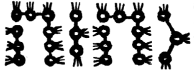

Pardes Rimmonim, English translation with the Hebrew.
We named it "The Gate of Names" because in it is explained the remainder of the names that may not be erased. Its chapters number thirteen.
20:1:1 The Twentieth Gate: The Gate of Names.
שער עשרים הוא שער השמות:
20:1:2 What is intended in this Gate is to explain the ten names that may not be erased, which we attributed to the ten sefirot in Gate 1, chapter 10. And we have devoted a gate of its own to them because this inquiry does not relate to the preceding one; for in the preceding gate our concern was the name of the self, and now our concern will be the other names that may not be erased:
הנרצה בשער זה הוא לבאר י' שמות שאינם נמחקים שייחסנום בי"ס בשער א' פ"י. ויחדנו להם שער בפ"ע מפני שהדרוש הוה אינו מתיחס עם הקודם, שבשער הקודם היה עסקנו בשם העצם ועתה יהיה עסקנו בשאר השמות שאינם נמחקים:
20:1:3 Chapter One:
פרק ראשון:
20:1:4 The ten names particular to the ten sefirot are: Ehyeh for Keter; Yah for Chokhmah; the four-letter name with the vowels of Elohim, like this, יֱהֹוִה, for Binah; El for Chesed; Elohim for Gevurah; YHVH for Tiferet; and according to the opinion of the commentators, YHVH Tzeva'ot in Netzach and Elohim Tzeva'ot in Hod, but according to the opinion of Rashbi, peace be upon him, Tzeva'ot in Netzach and Hod, as we shall explain; El Chai in Yesod, according to the opinion of some, though what is agreed in the Zohar is that the name of Yesod is Shaddai, as we explained in Gate 1, chapter 6; Adonai in Malkhut.
העשר שמות המיוחדים לי"ס הם אהי"ה לכתר. י"ה לחכמה. שם בן ד' בנקודת אלדים כזה יֱהֹוִה לבינה. אל לחסד. אלדים לגבורה. יהו"ה לת"ת. ולדעת המפרשים ידו"ד צבאות בנצח, אלדים צבאות בהוד. ולדעת הרשב"י ע"ה צבאות בנצח והוד כמו שנבאר. א"ל ח"י ביסוד לדעת קצת. והמוסכם בזהר ששם היסו"ד שד"י כדפי' בשער א' פ"ו. אדנ"י במלכות.
20:1:5 And behold, these names are palaces to the four-letter names that are in each and every sefirah, as we explained in the preceding gate; as if we were to say that the spirituality bounded or inscribed in the name Ehyeh is a palace to the spirituality inscribed in the name YHVH with the vowel kamatz, and both are in Keter. And so with each and every name: they are like the body to the soul, in relation to the four-letter names that are in each and every sefirah. For these names that may not be erased are a garment to the four-letter names. And there is no wonder at this thing; for in the book Berit Menuchah he explained ten names of the four-letter name with known vowel points, and for each and every vowel point explained known lights, explained and specified, each one by a known name; and certainly all the words of that delightful book are words of the living God, said by the holy spirit or received from the mouths of great men.
והנה השמות האלה הם היכלות אל שמות בן ד' שהם בכל ספי' וספירה כדפי' בשער הקודם כאלו נאמר כי הרוחניות הנגבל או הנרשם בשם אהי"ה הוא היכל אל רוחניות הנרשם בשם ידו"ד בנקודת קמץ ושניהם בכתר. וכן בכל שם ושם הם כדמות הגוף אל הנשמה בערך שמות בן ד' שבכל ספי' וספי'. כי השמות שאינם נמחקים האלה הם לבוש אל שמות בן ד'. ואין לתמוה על הדבר הזה שהרי בספר ברית מנוחה ביאר י' שמות שם בן ד' בנקודות ידועות ופירש לכל נקודה ונקודה אורות ידועים מבוארים ומפורטים בשם ידוע כאו"א, ובודאי כל דברי הספר הנחמד ההוא דברי אלדים חיים נאמרים ברה"ק או מקובלים מפי אנשים גדולים.
20:1:6 And behold, those luminaries explained in each and every one of the names are a garment to that source. And likewise the matter is that the subtle self of the sefirah is a portion of the four-letter name that is unified in all ten sefirot.
והנה אותם המאורות המבוארים בכל שם ושם מהשמות הם לבוש אל המקור ההוא. וכן הענין כי עצם הספי' הדקה הוא חלק שם בן ד' המיוחד בעשר הספירות כלם.
20:1:7 Further, the ten sefirot branch out into a hundred branches, ten branches for each one of the sefirot; and those branches that branch out are a garment in which the principal sefirah, the spirituality, is clothed. And what branches out further from the ten branches is a garment to the self, the ten branches.
ועוד מסתעפים י' ספי' אל ק' ענפים י' ענפים לכאו"א מהספי', ואותם הענפים המסתעפים הם לבוש א' שמתלבש הספירה העקרית הרוחניות. ומה שמסתעפים עוד העשרה ענפים הם לבוש אל העצם העשרה ענפים.
20:1:8 And behold, the ten branches are titled by the four-letter name with a known vowel point. And the branches that branch out further are a palace to their source, and they are titled by a name that may not be erased; and because of its distance from the source it is bounded by the derivation of an action, for whatever is nearer than its fellow is holier than it. And therefore the four-letter name of the self has no vowel point at all, but is simple, having no derivation in it. And when it is filled, its vowel points will be like this: יוד הא ואו הא [the vowels are not reproduced in this text]; and they are nine vowel points, nine sefirot: four on the side of the Vav from here and four on the side of the Vav from there, which are Keter, Chokhmah, Binah, Chesed; Tiferet, the firmament, the Vav that separates between water and water, between judgment and compassion; and beneath it Gevurah, Netzach, Hod, Yesod. And the letters themselves [without the vowel points] are hinted at in Malkhut, which is the one that receives the vowel points, as we explained in the preceding gate. It turns out that the derivation of these vowel points is not a derivation; rather, on the contrary, it added concealment upon concealment, and indicated by its vowel points that they are more concealed than the letters; for the letters are judged by their form, which is not so with the vowel points, but they are concealed, and they are like the manifestation of Yods.
והנה העשרה ענפים מכונים בשם בן ד' בנקודה ידועה. והענפים המסתעפים עוד הם היכל אל מקורם והם מכונים בשם שאינו נמחק. ומפני הרחקו מן המקור נגבל בגיזרת פעולה כי כל הקרוב מחבירו מקודש ממנו. ולכן שם בן ד' העצמי אין לו נקודה כלל אלא הוא פשוט שאין בו גיזרה. וכאשר יתמלא יהיה נקודתו כזה יוד הא ואו הא והם ט' נקודות ט' ספי' ד' מצד הוא"ו מפה וד' מצד הוא"ו מפה. שהם כתר חכמה בינה חס"ד, ת"ת רקיע וא"ו המבדיל בין מים למים בין דין לרחמים. ותחתיו גבורה נצח הוד יסוד. והאותיות בעצמם [בלי הנקודות] נרמזים במלכות שהיא המקבלת הנקודות כדפי' בשער הקודם. נמצאת שגיזרת הנקודות האלה אינה גיזרה, אלא אדרבה הוסיף העלם על העלם והורה בנקודתו שהם נעלמות יותר מהאותיות שהאותיות ישפטו בצורתם לא כן הנקודות אלא נעלמות והם כמציאות יודי"ן.
20:1:9 And behold, when we vowelled the name of the self, it indicated more concealment; but we learned from this the vowelling of the name of the self, like this: יהוה [the vowels are not reproduced in this text], to indicate a concealed secret, but one that spread out in measure; and from its spreading out it produced for itself a palace, by branching into its branches, and its branches were related to names indicating actions, which are the vowel points, as we explained. And nevertheless they are not composite vowel points that would indicate the pronunciation of the word, because of their great concealment still; rather they are names vowelled with equal vowel points (that is to say, the ten names of the preceding gate), to indicate a unity that is uniform and far from change, but not like the preceding source. And when it branches further into third branches and is clothed in them, like the snail whose garment is of itself, then it is pronounced in letters, which are Ehyeh, Yah, etc. But excluded from this rule is the name of Tiferet, which in all its garments is clothed in the four-letter name that hints at Tiferet among the names that we are explaining in this gate, the name mentioned in the passage of Rashbi from the Tikkunim in the preceding gate. For that name is a palace to the self of the Name, and it is a soul to this name that we shall explain. And therefore the four-letter name did not come in the Torah vowelled all with cholam, for this indicates subtlety and great concealment; but it came with the vowels of Tzeva'ot, like this: יהוה [the vowels are not reproduced in this text], for this name hints at Tiferet, which is a palace to the name vowelled all with cholam; and by its composition (that is to say, with vowel points that are not equal) it indicates that it branches out from its source. And although Rashbi, peace be upon him, explained in the Tikkunim that this name is called chashak, cholam sheva kamatz, the hint is to Malkhut, which receives from the three Patriarchs; and these are his words in the Tikkunim (Tikkun 19, folio 41): "When she is vowelled from the side of kamatz, she takes from Chesed; and when vowelled from the side of sheva, she takes from Gevurah; and when vowelled with cholam, she is from the side of the middle pillar." Thus far its words.
והנה כשנקדנו שם העצם הורה על העלם יותר אבל למדנו מתוך כך נקודת שם העצם כזה יהוה להורות על סוד נעלם אבל בשעור נתפשט ומתוך פשיטותו המציא לעצמו היכל בהסתעפו אל ענפיו ונתייחסו ענפיו בשמות מורים פעולות שהם הנקודות כדפי'. ועכ"ז אינם נקודות מורכבות שיורו על הגיון המלה לרוב העלמם עדין אלא הם שמות מנוקדים בנקודות שות (ר"ל היוד שמות שבשער הקודם) להורות על אחדות המשתוה ורחוק מהשנוי, אבל לא כמקור הקודם. וכאשר עוד נסתעף אל ענפים שלישים ונתלבש בהם כהדין קמצא דלבושיה מיניה אז נהגה באותיות שהם אהי"ה י"ה וכו'. אמנם יצא מכלל זה שם התפארת שבכל לבושיו נתלבש בשם בן ארבע הרומז בתפארת בשמות שאנו בביאורם בשער זה השם הנזכר במאמר הרשב"י מהתקונים בשער הקודם. כי אותו השם הוא היכל לעצם השם והוא נשמה לשם זה שנבאר. ולכן לא בא בתורה שם בן ד' בנקודות חולם כולו כי זה מורה על דקות והעלם גדול אבל בא בנקודת צבאות כזה יהוה שהשם הזה רומז בת"ת שהוא היכל אל שם נקוד כולו חולם, ומתוך הרכבתו (ר"ל בנקודות שאינם שוות) מורה על שהוא מסתעף ממקורו. ועם היות שביאר הרשב"י ע"ה בתיקונים ששם זה נקרא חש"ק חול"ם שב"א קמ"ץ. הרמז אל המלכות המקבלת מג' אבות. וז"ל בתיקונים (תקונא י"ט דמ"א) כד איהי נקודה מסטרא דקמץ, נטלא מחסד. וכד נקודה מסטרא דשבא, נטלא מגבורה. וכד נקודה מחולם, איהי מסטרא דעמודא דאמצעיתא. עכ"ל.
20:1:10 This is no wonder; for we are compelled to say that he explained Tiferet in Malkhut. For this is his way throughout the Zohar: that the four-letter name written throughout the Torah hints at Tiferet; and he does not contradict himself. Rather, what must you say? That it is called [so] in Malkhut, in the union of Tiferet, "And the Lord is in His holy palace." And the hint of this is that Malkhut receives from her husband, whether from the side of Gedulah, or from the side of Gevurah, or from the side of himself. And the witness to this is that the name Adonai has exactly these vowels, and the four-letter name too is called by the name Adonai. And although in the name Adonai he added, for in place of the sheva there comes sheva-patach, on the contrary, from there is a proof: for in the addition of the patach, which is like a Vav, a Vav is hinted at in it, which is Tiferet, in place of the four-letter name itself; and this is true and correct, and there is no doubt in it. And the reason why the sheva precedes the kamatz in the vowelling of the Name, since the sheva is in Gevurah and the kamatz in Chesed, Rashbi, peace be upon him, explained elsewhere in the Tikkunim (in the Introduction, folio 4), on the matter of "anyone whose fear of sin precedes his wisdom"; and these are his words: "And so too he put first the sheva, which is fear, in the name YHVH, before love, which is kamatz, compassion. Sheva is from the side of Gevurah: 'For by fire will the Lord judge.' Kamatz is from the right: 'and the priest shall take a fistful [ve-kamatz].' Because one ascends in holiness and does not descend; and because of this they put the 365 negative commandments, which are fear, before the 248 positive commandments, which are love. This is what is written, 'This is My name forever, and this is My remembrance' (Ex. 3:15): 'My name' [shemi, 350] with Yah [15] is 365; 'My remembrance' [zikhri, 237] with Vav-He [11] is 248." Thus far its words.
אין זה תימא כי מוכרחים אנו לומר שפי' התפארת במלכות. כי זה דרכו בכל הזהר ששם בן ד' הנכתב בכל התורה שהרמז שלו בתפארת, ולא קשיא מדידיה אדידיה. אלא מאי אית לך למימר דהיינו דנקרא במלכות ביחוד התפארת וה' בהיכל קדשו. והרמז לזה כי המלכות מקבל מבעלה אם מצד הגדולה אם מצד הגבורה אם מצד עצמו. והעד על זה כי שם אדנ"י זהו ממש נקודתו. ושם בן ד' ג"כ נקרא בשם אדנ"י. ועם היות שהוסיף בשם אדנ"י כי במקום שב"א בא שב"א פת"ח. אדרבה משם ראייה כי בתוספת הפתח שהוא כמו ו' נרמז בו ו' שהוא תפארת במקום שם בן ד' עצמו וזה אמת ונכון ואין בו פקפוק. וטעם קדימת השב"א בנקודת השם אל הקמ"ץ אחר שהשב"א הוא בגבורה והקמץ בחסד. ביאר הרשב"י ע"ה במ"א בתיקונים (בהקדמה דף ד') בענין כל שיראת חטאו קודמת לחכמתו וז"ל ואוף הכי אקדים שב"א דאיהי יראה בשם יהוה לאהבה דאיהי קמץ רחמי שב"א מסטרא דגבורה כי באש ה' נשפט. קמץ מימינא וקמץ הכהן בגין דמעלין בקדש ולא מורידין ובגין דא אקדימו שס"ה לא תעשה דאינון דחילו לרמ"ח פקודין דאינון רחימו הדא הוא דכתיב זה שמי לעולם שמי עם י"ה שס"ה זכרי עם ו"ה רמ"ח עכ"ל.
20:1:11 And the explanation: judgment everywhere is bestowed upon by, and receives from, compassion; for the female is judgment and the male compassion, as explained in the Gate From Below to Above. And because of this it is necessary to put fear, which is from the side of the female, judgment, before love, which is compassion. And likewise the Yod of Adonai comes before the Yod of YHVH: for the one is at the end of the word, below, at the beginning of the entry, and the other above, at the end of the ascent; and the reason is that one ascends in holiness and does not descend. And therefore one must put fear, which is the negative commandments, before the positive commandments, as it is said (Ps. 34:15), "Depart from evil and do good"; for the 365 negative commandments are from the side of the female, and the 248 positive commandments from the side of the male. And this is what the Torah said, "This is My name forever [written le-'alem, 'to conceal']," etc. And there it speaks of the unique name: "My name" with Yah, which are the letters of the male, amounts to 365.
ופי' כי הדין בכל מקום מושפע ומקבל מן הרחמים כי הנקבה דין והזכר רחמים כמבואר בשער ממטה למעלה. ומפני זה צריך להקדים יראה שהוא מצד הנקבה דין לאהבה שהיא רחמים. וכן יו"ד מאדנ"י קודם לי' מיהו"ה כי זה בסוף תיבה למטה בתחלת הכניסה וזה למעלה בסוף העלייה והטעם כי מעלין בקודש ולא מורידין. ולפיכך צריך להקדים יראה שהוא לא תעשה למצות עשה, שנא' (תהלים לד טו) סור מרע ועשה טוב. כי שס"ה לא תעשה מצד הנקבה, ורמ"ח מ"ע מצד הזכר. וזה שאמרה התורה זה שמי לעלם וכו' ושם מדבר בשם המיוחד ושמי עם י"ה שהם אותיות הזכר עולה שס"ה.
20:1:12 And behold, "My name" is in Malkhut, and to mention the attribute of day at night it is necessary to mix Yah with her. And "My remembrance" [zikhri], which is the male [zakhar], with Vav-He, which are the letters of the female, amounts to 248; and we unite "My remembrance" with Vav-He to mention the attribute of night in the day. And the four-letter name is divided into two parts, Yah and Vav-He, the one male and the other female. And so Rashbi, peace be upon him, explained in the Tikkunim (Tikkun 51, folio 86b), and these are his words: "For all was created and set right by the name YHVH, which is et ha-shamayim, 'the heavens.' And the secret of the thing: Yah in the heavens; this is what is written, 'Yismechu Ha-shamayim, Let the heavens rejoice' (Ps. 96:11); Vav-He in the earth, 'Ve-tagel Ha-aretz, and let the earth be glad' [the initial letters spelling YHVH]." Thus far its words.
והנה שמי הוא במלכות ולהזכיר מדת יום בלילה צריך לערב עמה י"ה. וזכרי שהוא הזכר עם ו"ה שהם אותיות הנקבה עולה רמ"ח. ואנו מיחדים זכרי עם ו"ה להזכיר מדת לילה ביום. ושם בן ד' מתחלק אל שני חלקים י"ה ו"ה זה זכר וזה נקבה. וכן פי' הרשב"י ע"ה בתיקו' [תקונא נ"א דף פ"ו ע"ב) וז"ל דכלא אתברי ואתתקן בשמא דיהו"ה דאינון את השמים. ורזא דמלה י"ה בשמי"ם, הה"ד "ישמחו "השמים. ו"ה בארץ, "ותגל "הארץ עכ"ל.
20:1:13 Explanation: et ha-shamayim are Tiferet, which is called heavens, and Malkhut, which is called et, as we shall explain in the Gate of the Glossary of Titles, with the help of Heaven. And there is no wonder at Vav-He being in the earth and Yah in the heavens; for the intent is that in the heavens is the effluence of Chokhmah and Binah, which are Yah, and it receives from them and bestows upon the earth its own effluence and the effluence of the receiver that is fitting for her, and these are Vav-He. And close to this matter is in the tradition of the Gaonim on the secret of the writing of the four-letter name and its engraving, and these are its words: "The instruction of the Gaon to his disciples: that the writing of each and every letter is in the form of three points; and he divides it into three heads, and divides each and every head into three points, until the whole number of the points amounts to twenty-four, in the number of twenty-four inner forms, to the number of the twenty-four books of prophecy: twelve bestowing and twelve bestowed upon, twelve giving and twelve receiving; and they are in the secret of 'the tribes of Yah, a testimony to Israel' (Ps. 122:4). And this is its drawing:

And each and every point has three heads. And the three holy letters with their crowns amount to the number of the hidden name, which is Mah [45]; and with the last letter, all of them amount to the number of the honored name designated seventy-two." Thus far its words.
פי' את השמים הם תפארת הנקרא שמים. ומלכות הנקראת את. כאשר נבאר בשער ערכי הכנוים בע"ה. ואין תימא על היות ו"ה בארץ י"ה בשמים, כי הכונה היא כי בשמים הוא שפע חכמה ובינה שהם י"ה והוא מקבל מהם ומשפיע בארץ שפעו ושפע המקבל הראוי לה והם ו"ה. וקרוב לענין זה בקבלת הגאונים בסוד כתיבת שם בן ד' וחקיקתו וז"ל הוראת הגאון לתלמידיו כי כתיבת כל אות ואות בצורת שלשה נקודות ומחלקו לשלש ראשים וחלק כל ראש וראש לשלשה נקודות עד אשר יעלה כל מספר הנקודות לכ"ד במספר כ"ד צוריות פנימיות למספר כ"ד ספרי הנבואה י"ב משפיעים וי"ב מושפעים י"ב נותנים י"ב מקבלים והם בסוד שבטי יה עדות לישראל וזה ציורו
וכל נקודה ונקודה יש לה שלשה ראשים. ושלש אותיות הקדש בכתריהם עולה למס' השם הנסתר שהוא מ"ה ועם האות האחרון עולים כלם למס' השם הנכבד הנקוב ע"ב עכ"ל.
20:1:14 Behold, from their words it is certainly implied that half of the Name receives effluence from its other half, in the manner of male and female. And the rest of their words will be explained from what we shall explain in the Gate of Particulars of Names, on the name of seventy-two, with the help of Heaven. And let us return to our subject: that the name written in the Torah is Tiferet, but not the self of the four-letter name mentioned in the preceding gate, chapter 4. For that name is vowelled with cholam, and the name of its garment is the four-letter name mentioned in the Torah, whose vowelling is chashak; and this name is a garment to it, just as the other names are garments to the four-letter name. And a proof of this is found in the Tikkunim (Tikkun 42, folio 79), and these are its words: "There is no sefirah in which there is not YHVH, יו"ד ה"א וא"ו ה"א. And so all must be gathered into it in every place, for all the names are titles of it." Thus far its words.
הנה מתוך דבריהם משמע ודאי שחצי השם מקבל שפע מחציו כדרך זכר ונקבה. ושאר דבריהם יתבארו מתוך מה שנבאר בשער פרטי השמות בשם ע"ב בס"ד. ונחזור אל ענייננו כי שם הכתוב בתורה הוא הת"ת אך לא עצם השם בן ד' הנז' בשער הקודם בפ"ד. כי אותו השם נקוד בחולם ושם הלבוש שלו הוא שם בן ד' הנז' בתורה ונקודתו חש"ק והשם הזה לבוש אליו כמו ששאר השמות לבושים אל שם בן ד'. ונמצא ראיה לזה בתיקונים (תקונא מ"ב דף ע"ט) וז"ל לית ספירה דלא אית תמן יהו"ה יו"ד ה"א וא"ו ה"א. והכי צריך לאתכנשא כלא ביה בכל אתר, דכל שמהן אינון כנויין ליה עכ"ל.
20:1:15 And the explanation: there is no sefirah in which there is not the four-letter name, and also in its filling, to hint at the general and the particular, as we explained in the preceding gate, chapter 4. And therefore the one who directs his intention is obliged to bring his intention, in all the words of the prayer, to the four-letter name, as we shall explain in the Gate of Intention, with the help of Heaven. And this he meant in saying "And so all must be gathered," etc.; and he gave a reason for the thing: for even the other names are titles of the four-letter name. And likewise the four-letter name that is in Tiferet is clothed in the four-letter name with the vowels chashak, and that is a title to it. And there is no wonder how it is possible for a four-letter name to be a title to a four-letter name when their letters are equal. The parable: just as we do not wonder at two human beings, equal in beauty and in strength and in splendor and in glory, that the one's wisdom is greater than his fellow's, for all is according to the drawing down of spirituality that his father drew upon him at the time of the coupling, more than his fellow; so the letters: upon this one more spirituality was obliged than upon its fellow, from the Master of the will, may He be blessed. And just as intention is needed to draw down the soul for the newborn at the time of the coupling, so the writer needs intention in the writing of the letters. And so our Rabbis, of blessed memory, said in tractate Gittin (folio 54) that any Torah scroll in which the mentions [of the Name] are not written for their own sake is worth nothing. And likewise our Rabbis, of blessed memory, said (in tractate Kallah, chapter 5): at the time that he writes the Name, even if the king greets him he should not answer him. And all this is so as not to cut the holy channels and the spirituality drawn by way of the writing of the letters; and all is according to the drawing down fitting for it. And all this will be explained in the Gate of Intention. And therefore it is already possible, and not far-fetched, that letters may be alike and equal, and these be holy and those not holy. And our Rabbis, of blessed memory, have already said (ibid.) that if he needed to write the Name and intended and wrote Yehudah, and did not put the Dalet in it, he erases it; and even though it would be fit to write the Name there, since the intention was to write Yehudah, it was not sanctified. And all the more so may we say that there are letters whose holiness exceeds letters like them; and all the more so when they are distinguished by their vowel points, for the vowel points of the inner name are cholam, and of the name of the garment chashak. And the explanation is that it corresponds to the three Patriarchs, Gedulah, Gevurah, Tiferet, which is an aspect in Tiferet, which comprises the three Patriarchs in itself. And likewise the hint in its vowel points is "was, is, and will be," and this is "[the Lord] reigns, [the Lord] reigned, [the Lord] will reign," which are the three Patriarchs, as explained in the Tikkunim many times. And all this is in the four-letter name that is a palace to the inner one, as we explained.
ופי' שאין ספירה שאין בה שם בן ד' וגם במילואו לרמוז אל הכלל ואל הפרט כמו שביארנו בשער הקודם בפ"ד. ולפיכך חוייב המכוין להביא כוונתו בכל מלות התפלה אל שם בן ד' כאשר נבאר בשער הכונה בס"ד. וזה רצה באמרו והכי צריך לאתכנשא וכו' ונתן טעם לדבר כי אפילו שאר השמות הם כנויים אל שם בן ד'. וכן שם בן ד' שבתפארת מתלבש בשם בן ד' בנקודת חש"ק והוא כנוי אליו. ואין תימה איך אפשר שיהיה שם בן ד' כנוי אל שם בן ד' בהיות אותיותיהם שוות. המשל כמו שלא נתמה על שני ב"א שווים בנוי ובכח ובהדר ובתפארת היות הא' חכמתו מרובה מחבירו, כי הכל לפי המשכת הרוחניות שהמשיך אביו עליו בעת הזווג יותר מחבירו. כן האותיות זה חוייב עליה רוחניות יותר מחברתה מאת בעל הרצון יתברך וכמו שצריך כונה להמשיך הנשמה להוולד בשעת הזווג, כן צריך הכותב כוונה בכתיבות האותיות. וכן ארז"ל במס' גיטין (דף נ"ד) שכל ס"ת שאין האזכרות שבו כתובין לשמן אינו שוה כלום. וכן אחז"ל (במס' כלה פ"ה) בשעה שכותב את השם אפי' המלך שואל בשלומו לא ישיבנו. וכל זה שלא לקצץ צנורות הקדושות והרוחניות הנמשך בדרך כתיבת האותיות. והכל לפי המשכה הראויה אליו. וכל זה יתבאר בשער הכונה. ולכן כבר אפשר ולא ירחק היות אותיות דומות שוות והיות אלו קדושות ואלו אינם קדושות. וכבר אחז"ל (שם) שאם היה צריך לכתוב את השם ונתכוון וכתב יהודא ולא נתן בו ד' מוחקו, ואף אם היה ראוי לכתוב שם השם כיון שהכוונה היתה לכתוב יהודא לא נתקדש. וכ"ש שנאמר שיהיו אותיות שקדושתן עולות על אותיות כהם, וכ"ש כשיתחלקו בנקודתן שנקודות שם הפנימי חולם ושם הלבוש חש"ק. והפירוש שהוא כנגד ג' אבות גדול"ה גבורה ת"ת, שהיא בחינה בת"ת שכולל ג' אבות בעצמו. וכן הרמז בנקדותיו היה הוה ויהיה והיינו מלך מלך ימלוך שהם הג' אבות כמבואר בתיקונים פעמים רבות. וכל זה בשם בן ד' שהוא היכל אל הפנימי כדפי'.
20:1:16 And behold, there are found in the sefirot, besides the name of the self that we explained, three further divisions, and they are: havayot, names, titles. And the havayot are the ten havayot mentioned in the Gate of the Four-Letter Name. And the first to reveal this is the author of Sefer ha-Orah, in his introduction, and these are his words: "Know that all His holy names mentioned in the Torah all depend on the four-letter name, which is YHVH, may He be blessed. And if you say: but is not the name Ehyeh the root and the source? Know that the four-letter name is like the trunk [nof] of the tree, and the name Ehyeh is the root of this tree, and from it roots take root and branches spread out to every side; and all the other holy names are like branches and twigs drawn from the trunk of the tree, and each one of the branches makes fruit after its kind." Thus far its words.
והנה נמצא בספי' זולת שם העצם שפי', עוד ג' חלוקות והם הוויו"ת שמות כנויים. וההויות הם י' ההוויו"ת הנזכר בשער שם בן ד'. והמגלה הראשון אליו הוא בעל ספר האורה בהקדמתו וז"ל דע כי כל שמותיו הקדושים הנזכר בתורה כלם תלוים בשם בן ד' שהוא יהו"ה ית'. וא"ת והלא שם אהיה הוא העיקר והמקור. דע כי שם בן ד' אותיות הוא כדמיון נוף האילן, ושם אהיה הוא עיקר האילן הזה וממנו ישתרשו שרשים ויתפשטו ענפים לכל צד, ושאר כל השמות הקדש כולם כדמיון ענפים וסנסנים נמשכים מנוף האילן וכל אחד מהענפים עושה פרי למינהו עכ"ל.
20:1:17 And the explanation of his words: all the names that may not be erased depend on the four-letter name, and from it they spread out, and from it they draw sustenance. And according to his words he raised a difficulty: why should they not depend on the name Ehyeh, which is in Keter, which is the root and the stock, as they depend on the four-letter name, which is not so [exalted], for it is in Tiferet? And on the basis of this question of his he gave a fine answer: that the name Ehyeh is the stock of the tree and its root, and the name YHVH is the trunk of the tree.
ופי' דבריו כי כל שמות שאינם נמחקים הם תלוים בשם בן ד', וממנו מתפשטים וממנו יונקים. והקשה לפי דבריו כי למה לא יהיו תלוים בשם אהיה שהיא בכתר שהוא העיקר והשרש כמו שהם תלוים בשם בן ד' שאינו כ"כ שהוא בת"ת. ועל פי שאלתו זאת תירץ תירוץ נאה. כי שם אהיה הוא עיקר האילן ושרשו, ושם יהו"ה הוא נוף האילן.
20:1:18 And behold, according to his words, the branches spread out from the trunk, not from the root, as is known: for Keter is the root, and because of its great concealment the branches do not spread out from it; and Tiferet is the trunk, from which the branches spread out; and likewise Tiferet is from the language of porot, branches; and likewise the six extremities branch out from it. And indeed his words are the words of the living God. But for us the difficulty still stands in its place, put in another way, and it is this: even according to his words, it does not prevent the name Ehyeh from being greater and more praised than the four-letter name, except that the branches do not branch out from it; and the four-letter name is in Tiferet, and although its praise is great, it is not like the name Ehyeh, which is the root of the tree. If so, why is the four-letter name, which is in Tiferet, not pronounced by its letters? (And may the Merciful One save us from the opinion of those who say that Keter is a branch of Tiferet; for in our eyes this belongs only to those who lay hands on the very Self of the Emanation, who overturn the bowl on its mouth and cut among the saplings, God forbid.) But when we recall what we set out in the Gate of the Four-Letter Name, at the beginning of chapter 1, the matter will be well settled for us. For in Keter too the four-letter name is concealed with the utmost concealment. And these names, although their holiness is great and they may not be erased, are nevertheless palaces to the havayot, as we explained. And because of the concealment of Keter, no name at all is revealed in it that bounds and defines its spirituality by its pronunciation, as do the four-letter name and the other names. But the pronunciation of the name Ehyeh indicates concealment, for its explanation is "behold, I stand ready to be [and to be revealed]." And the intent is that although we say "the sefirah Keter," it is not because there is any apprehension in it at all, but because it is to be revealed below, in Chokhmah and Binah. And so the Gaonim explained that the meaning of Keter is the language of waiting, from the language of (Job 36:2) "Wait [katar] for me a little, and I will show you." And the intent is: do not delve into it, for there is no apprehension in it, and its apprehension is in the other sefirot. If so, it turns out that its pronunciation is the cause of its exaltedness and its concealment, as we explained. But if the four-letter name were pronounced by its letters, it would show that the Emanation is apprehended, and this is not fitting because of its great concealment. And therefore we pronounce it by its palace; for the apprehension of Tiferet is in Malkhut, as in the matter of (Hab. 2:20) "And the Lord is in His holy palace; hush [has]," the number of heikhal, the number of Adonai [65] (see in Asis Rimmonim and in Pelach [ha-Rimmon]).
והנה לפד"ז הענפים מתפשטים מן הנוף לא מן העיקר כנודע, כי הכתר הוא העיקר ומרוב העלמו אין הענפים מתפשטים ממנו והת"ת הוא הנוף אשר משם מתפשטים הענפים, וכן תפאר"ת מלשון פארות פי' ענפים. וכן השש קצוות מסתעפים ממנו. והן אמת דבריו דברי אלהים חיים. ולנו עדיין הקושיא במקומה עומדת שננקטה באופן אחר והוא זה שאפילו לפי דבריו לא יבצר היות שם אהי"ה גדול ומשובח משם בן ד' אלא שאין הענפים מסתעפים ממנו ושם בן ד' הוא בת"ת ואע"פ ששבחו גדול אך לא כשם אהי"ה שהוא עיקר האילן, וא"כ למה שם בן ד' שהוא בת"ת אינו נהגה באותיותיו. ורחמנא ליצלן מדעת האומרים שכתר ענף לת"ת, כי אין זה בעינינו כ"א מהנוגעים בעצם האצילות שהם מהפכין הקערה על פיה וקוצצין בנטיעות ח"ו. אבל כאשר נזכור מה שהקדמנו בשער שם בן ד' בריש פ"א יתיישב אלינו הדבר מאוד. כי גם בכתר שם בן ד' נעלם תכלית ההעלם. והשמות האלה עם היות קדושתן גדולה ואינם נמחקים, עכ"ז הם היכלות להויו"ת כדפי'. ומטעם העלם הכתר אינו מתגלה בו שם כלל המגביל ומגדיר רוחניותו בהגיונו כשם בן ד' ושאר השמות. אבל שם אהיה הגיונו מורה העלם שפירושו הא אנא קאים למהוי [ולהתגלות]. והכונה כי עם היות שנאמר ספירת כתר אינו מפני שיש בו השגה כלל אלא מפני שעתיד להתגלות למטה בחכמה ובבינה, וכן פירשו הגאונים כי פי' כתר לשון המתן, מלשון (איוב לו ב) כתר לי זעיר ואחוך. והכונה אל תעמיק בו שאין בו השגה, והשגתו הוא בשאר הספי'. וא"כ נמצא כי הגיונו הוא סבת רוממותו והעלמו כדפי'. אבל אם היה שם בן ד' נהגה באותיותיו היה מראה כי האצילות מושג, וזה אין ראוי לרוב העלמו. ולכן אנו הוגים אותו בהיכלו, כי השגת הת"ת הוא במלכות כעניין (חבקוק ב) וה' בהיכל קדשו ה"ס כמנין היכל כמנין אדנ"י (ע' בעסיס רמונים ובפלח).
20:1:19 And this preliminary will be further explained in chapter 2, with the help of the Rock. And now that we have set out this matter concerning the essence of the names, we come to the explanation of each and every name by itself, with the help of Heaven:
ועוד יתבאר הקדמה זו בפ"ב בעזרת הצור. ואחר שהקדמנו הענין הזה במהות השמות, נבא עתה בביאור כל שם ושם בפ"ע בע"ה:
20:2:1 On the name Ehyeh. This name they related to the sefirah Keter. And Rabbi Moses explained its meaning in Sefer ha-Shem, and these are his words: "The word Ehyeh indicates head and end. The Alef indicates His precedence, and there is no Alef without the concealed He; and Yod-He indicates the wisdom of Solomon. Further he said [that the principal of the Name] is Alef-He, and it is concealed; and therefore it is not mentioned in any blessing, for Moses did not reveal it to the elders." Thus far its words (see in Pelach [ha-Rimmon]).
בשם אהי"ה. השם הזה יחסו אותו לספירת הכתר. וביאר פירושו רבי משה בספר השם, וז"ל מלת אהיה מורה על ראש וסוף. האל"ף מורה על קדמותו, ואין א' בלא ה' הנעלם, וי"ה מורה על חכמת שלמה. עוד אמר [שעיקר השם) הוא א"ה והוא נעלם, ולכן אין מזכירין אותו בשום ברכה כי לא גילהו משה לזקנים. עכ"ל (ע' בפלח).
20:2:2 And behold, his words are clear: that the name Ehyeh indicates "I am the first and I am the last" (Isa. 44:6); for the Alef, in the Supernal Keter, indicates His precedence and His being first to the Emanation. And the first He is concealed in the Alef, for there is no pronouncing of Alef without He. But Yod-He indicates Malkhut, for she is last of all the sefirot and she is the end of the Emanation.
והנה דבריו מבוארים כי שם אהי"ה מורה אני ראשון ואני אחרון, כי א' בכ"ע מורה על קדמותו והיותו ראשון לאצילות. וה' ראשונה הוא נעלם באל"ף, כי אין הזכרות אל"ף בלא ה', אמנם י"ה מורה על המלכות כי היא אחרונה לכל הספי' והיא תכלית האצילות.
20:2:3 And behold, the principal of the Name, which indicates Keter, is Alef-He, and it is concealed, etc. Further, the one who speaks by the mouth of a maggid wrote that its four letters correspond to the four letters of the four-letter name. For the Alef corresponds to Yod. How so? The thorn of the Yod of the Alef is in Keter, indicating its subtlety and its concealment; and the body of the Yod indicates its Self and the pure thought that spreads out; and the middle Vav of the Alef indicates the spreading of the channels from Chokhmah to Binah; and the lower Yod of the Alef is the manifestation of Binah cleaving to Chokhmah. And the He hints at Binah in her place, for it is open below, to bestow upon the rest of the Emanation beneath her, and it is open above with a subtle opening, to receive from Keter, and wide below, to bestow upon the whole spreading out. And the Yod in the middle corresponds to the Vav in the four-letter name; and behold, it is the beginning of the four-letter name that is in Tiferet, as is known. And the last He corresponds to Malkhut, for it is open below to bestow and open above to receive the upper subtlety, and wide below as well, to receive all the prayers and to raise them up by the subtle side, in subtlety. Thus far the words of the maggid, and we have abridged his language. And concerning this name we have found in the Zohar, parashat Acharei (folio 65a), and these are its words: "He said to him: If it pleases my Father, behold, I have heard concerning what is written, 'I will be that which I will be' (Ex. 3:14), and I have not grasped it. He said to him: Elazar my son, the companions have already established it; and now all is bound up in one word. And the secret of the thing is thus: Ehyeh: this is the inclusion of all. For when the lanes are hidden and not separated, and are included in one place, then it is called Ehyeh, an inclusion, for all is hidden within it and not revealed. After the beginning has gone out from it, and that river has become pregnant to draw all forth, then it is called asher ehyeh, that is to say, 'therefore I will be': Ehyeh is ready to draw forth and to beget all. Ehyeh, that is to say: now I am the inclusion of all, the inclusion of all the particulars. Asher ehyeh: that the Mother has conceived and is ready to bring forth all the particulars and to reveal the supernal Name. Afterwards Moses wished to know the particular of the matter, what it is, until he explicated and said Ehyeh: this is the particular, and here it is not written asher ehyeh. And we have found in the book of King Solomon: asher: in the binding of delight, with the supernal palace, companionship is found; as it is said, 'Happy am I [be-oshri], for the daughters will call me happy [ishruni]' (Gen. 30:13). Ehyeh: that she is ready to beget. Come and see how it descends from grade to grade, etc., so that the Holy One, blessed be He, might show Moses the knot of faith. At first, Ehyeh, the inclusion of all, hidden and not revealed at all, as I have said; and your sign is 'And I was [va-ehyeh] beside Him as a nursling [amon]' (Prov. 8:30), and it is written, 'Man does not know its value' (Job 28:13). Afterwards He brought forth, etc., and that river, which is the supernal Mother, conceived and is ready to beget. And He said asher ehyeh: ready to beget and to set all right. Afterwards it began to beget, and it is not written asher, but Ehyeh, that is to say: now all will go forth and be set right. After all went forth and each and every one was set right in its place, He left all and said YHVH: this is the particular, and this is the sustaining. And at that hour Moses knew the secret of the holy Name, hidden and revealed, and cleaved to it as other human beings did not cleave. Happy is his portion. Rabbi Elazar came and kissed his hands." Thus far its words.
והנה עיקר השם שמורה על הכתר הוא א"ה והוא נעלם וכו'. עוד כתב המדבר על פי מגיד כי ד' אותיותיו הם נגד ד' אותיות של שם בן ד'. כי הא' נגד י'. כיצד, קוצו של יו"ד של האל"ף הוא בכתר מורה על דקותו והעלמו, וגוף היו"ד מורה על עצמותו והמחשבה הטהורה המתפשטות. והוא"ו האמצעי של הא' מורה על ההפשטות הצנורות מחכמה אל הבינה. והיו"ד התחתונה של האל"ף הוא מציאות הבינה המתדבק בחכמה. והה' רומזת בבינה במקומה, כי היא פתוחה מלמטה להשפיע אל שאר האצילות אשר תחתיה והיא פתוחה מלמעלה פתיחה דקה לקבל מהכתר ורחבה מלמטה להשפיע להתפשטות כלו. והיו"ד באמצע נגד הוא"ו בשם בן ד', והנה היא התחלת שם בן ד' אשר בתפארת כנודע. והה' אחרונה נגד המלכות כי היא פתוחה מלמטה להשפיע ופתוחה מלמעלה לקבל הדקות העליון ורחבה למטה ג"כ לקבל התפלות כלם ולהעלות בצד הדק למעלה בדקות. ע"כ דברי המגיד וקצרנו לשונו. ובשם זה מצאנו בס' הזוהר פ' אחרי (דף ס"ה.) וז"ל א"ל, אי ניחא קמיה דאבא הא שמענא בהאי דכתיב אהיה אשר אהיה ולא קאימנא ביה. א"ל אלעזר ברי הא אוקמוה חברייא, והשתא בחד מלה אתקשר כלא. ורזא דמלה הכי הוא. אהיה דא כללא דכלא. דכד שבילין סתימין ולא מתפרשן וכלילן בחד אתר, כדין אקרי אהי"ה כללא, דכלא סתים בגוויה ולא אתגלייא. בתר דנפיק מיניה שירותא וההוא נהר אתעבר לאמשכא כלא, כדין אקרי אשר אהיה, כלומר על כן אהיה, אהיה זמין לאמשכא ולאולדא כלא. אהיה, כלומר השתא אנא הוא כלל כלא כללא דכל פרטיא. אשר אהיה, דאתעברת אימא וזמינא לאפקא פרטין כלהו ולאתגלייא שמא עילאה. לבתר בעא משה למנדע פרטא דמלה מאן הוא, עד דפריש ואמר אהיה דא הוא פרטא והכא לא כתיב אשר אהיה. ואשכחנא בספרא דשלמה מלכא, אשר בקיטורא דעדונא קסטירא עילאה חברותא אשתכח כד"א באשרי כי אשרוני בנות, אהיה דזמינא לאולדא. ת"ח היך נחית מדרגא לדרגא כו' לאחזאה קב"ה למשה קשרא דמהימנותא. בקדמיתא אהיה כללא דכלא סתים ולא אתגלייא כלל כמה דאמינא, וסימנך ואהיה אצלו אמון וגו' וכתיב לא ידע אנוש ערכה וגו' לבתר אפיק וכו' וההוא נהרא דאיהו אימא עלאה אתעברת וזמינא לאולדא. ואמר אשר אהיה, זמינא לאולדא ולתקנא כלא. לבתר שארי לאולדא ולא כתיב אשר, אלא אהיה, כלומר השתא יפוק ויתתקן כלא. בתר דנפיק כלא ואתתקן כל חד וחד באתריה, שבק כלא ואמר יהו"ה. דא פרטא ודא קיומא. ובההיא שעתא ידע משה רזא דשמא קדישא סתים וגלייא ואתדבק ביה במה דלא אתדבקו שאר בני עלמא. זכאה חולקיה. אתא רבי אלעזר ונשיק ידוי עכ"ל.
20:2:4 And the explanation: Rabbi Elazar heard the words of the delightful companions explaining the name Ehyeh asher ehyeh as being in Keter, Chokhmah, Binah: explanation: the first Ehyeh in Keter, asher in Chokhmah, Ehyeh in Binah. And it was not settled with him; for it is forced to say that the name Ehyeh should be equally for Binah and for Keter, and besides this, that the word asher should be in Chokhmah. And therefore he asked his father and said, "I have not grasped it": explanation: that it was not settled with him. And his father, Rashbi, peace be upon him, answered him, "all is bound up in one word." And the explanation: do not wonder that the name Ehyeh is related also to Binah, for all is one matter and one way, as will be explained. "Ehyeh: this is the inclusion of all": explanation: at the beginning of the Emanation, before the spreading out of the sefirot, the Emanation was included in Keter, and there, in the manifestation of Keter, Chokhmah and Binah were revealed, that is, "a point that includes three drops," as explained in the Zohar and as we explained in the Gate of the Order of the Emanation. And when we said that the first three were revealed, the intent is not an essential revealing; but the intent is some revealing, explanation: they came into being there in a concealed manifestation.
ופי' כי ר"א שמע דברי החברים הנחמדים בפי' שם אהיה אשר אהיה היותו בכתר חכמה בינה. פי' אהיה הראשון בכתר, אש"ר בחכמה, אהיה בבינה. ולא היה מתישב אצלו. שדוחק הוא לומר ששם אהיה יהיה שוה לבינה ולכתר. ובזולת זה מלת אש"ר היותו בחכמה. ולזה שאל את אביו ואמר לא קאימנא ביה פי' שלא היה מתישב אצלו. והשיבו אביו הרשב"י ע"ה בחד מלה אתקשר כלא. ופי' אל תתמה היות שם אהיה מתייחס גם בבינה כי הכל ענין א' ודרך א' כמו שיתבאר. אהיה דא כללא דכלא. פי' בתחלת האצילות קודם ההתפשטות הספי' היה האצי' נכלל בכתר ושם במציאות הכתר מתגלים החכמה והבינה דהיינו נקודה דכליל ג' טיפין כמבואר בזוהר ובארנו בשער סדר האצילות. ואמנם אמרנו שהיו הג' ראשונות מתגלות, אין הכונה גילוי עצמי. אבל הכוונה קצת גילוי, פי' נתהוו שם במציאות נעלם.
20:2:5 And behold, while Keter is included in this inclusion it is called the first Ehyeh in the verse. And this is what he said, "Ehyeh: this is the inclusion of all": explanation: the inclusion of the Emanation before the spreading out, in the concealment of the first three, somewhat revealed, in a complete union. And this is what he said, "for when the lanes are hidden": for this is the concealment of Chokhmah in Keter, and there the paths [netivot] are concealed. And he called them lanes [shevilin] because lanes are narrower and subtler than paths; and while they are in Keter, not only were they not in the category of paths, but only of lanes, but even as lanes they were concealed and hidden. "And not separated": it is known that the paths are called "wonders [pel'ot] of wisdom." And one of the explanations of the word pel'ot is from the language of (Deut. 17:8) "If a matter be too hard [yipale]," whose sense is distinction and separation; and the reason is that the paths are distinct, each one from its fellow, and are divided into thirty-two in Chokhmah. And therefore he said that because Chokhmah is concealed in Keter, the paths were not distinct from one another; and this is "and not separated." And it has already been explained that the revealing of the paths that are in Chokhmah is through Binah; and because of the concealment of Binah in Keter, since she had not yet been emanated, therefore they did not spread out into Binah, but were included in one place, that is, in the Chokhmah within Keter; and this is what he said, "and are included in one place." And it is possible to explain "and not separated" [itparshan] from the language of explanation [perush]: and the intent is that they were not explained, that is, by their spreading out into Binah; for Binah is the explanation and elucidation of Chokhmah, as is known. And all this inclusion, which is the inclusion of the entire Emanation while it is included in Keter, is called by the name Ehyeh. And the name Ehyeh, according to this, is in Keter, inasmuch as it hints at the whole Emanation included within it before its spreading out hither and thither; and this is what he said, "then it is called Ehyeh, an inclusion, for all is hidden within it and not revealed." Explanation: "then it is called Ehyeh," that is to say, Keter, which is an inclusion, as we explained, for in it the whole Emanation is included; and this inclusion, "all is hidden and not revealed": explanation: hidden and concealed in relation to Keter, which is always closed, even after the Emanation; and in relation to the rest of the Emanation concealed in it they said "and not revealed," explanation: its manifestation was not revealed at all. "After the beginning has gone out from it": explanation: after the emanation of Chokhmah and its spreading out; and Chokhmah is called "beginning" [shiruta], as we explained in Gate 3, chapter 7, with the help of Heaven. "And that river became pregnant": explanation: Binah, which is called river. And behold, after the emanation of Chokhmah, Binah; and Binah is pregnant with all the sefirot of the circuit within her, for in her was the order of the Emanation: for Keter emanated Chokhmah, and within her all the eight remaining sefirot; and Chokhmah emanated Binah, and within her all the seven remaining sefirot, as we explained in the Gate of the Order of the Emanation. And the seven sefirot within Binah are called her pregnancy; and now her emanation and her pregnancy are all one. And therefore he said, "And that river became pregnant to draw forth": explanation: she was filled with the sefirot, to emanate them and draw them to their place. And he called Binah "river" to indicate the will to draw forth, as we explained. "Then it is called asher ehyeh": it is known that the pregnancy of Binah and her filling are through Chokhmah; and Chokhmah and Binah are included in asher ehyeh, as he goes on to explain. "That is to say, therefore," etc.: it was difficult for him that, according to his words, the first Ehyeh indicates inclusion and concealment, as we explained, and the second Ehyeh indicates revealing and drawing forth; and how is it possible that equal words should indicate opposite matters? To this he came to settle each and every word according to its matter and its measure. And this is what he said, "that is to say, therefore, Ehyeh": explanation: the first Ehyeh, "therefore Ehyeh": explanation: "Ehyeh is ready to draw forth and to beget all." The intent is that the first Ehyeh is to be explained as the first person of the future: I will reveal and draw forth the matter in the Emanation, but I do not yet begin to be drawn forth. And although the word Ehyeh indicates future being, the intent is not that it is destined to be revealed; rather the intent of the word is to indicate to us that it is full of, and includes, the whole Emanation that is destined to be revealed. And this is why it is impossible to say this matter except by the word Ehyeh, which indicates: I am included with the whole Emanation that is destined to be revealed. And the intent is not that it is actually destined to be revealed; but the intent is: I am full of the whole Emanation that is destined [to be revealed]; and this is the word Ehyeh. And this is why he went on to say: "Ehyeh, that is to say: now I am the inclusion of all, the inclusion of all the particulars": explanation: the inclusion of the whole Emanation, which is the particulars of the sefirot.
והנה בהיות הכתר נכלל בכללות הזה נקרא אהי' הראשון שבפסוק. וז"ש אהיה דא כללא דכלא, פי' כללות האצילות קודם ההתפשטות בהעלם ג' ראשונות ומתגלות קצת ביחוד גמור. וזהו אמרו דכד שבילין סתימין. שזהו העלם החכמה בכתר ושם הנתיבות הם נעלמות, וקראם שבילין לפי ששבילין הם צרים ודקים מן הנתיבות ובהיותם בכתר לא די שלא היו בכלל נתיבות אלא שבילין ואפי' בהיותם שבילים היו נעלמים וסתומים. ולא מתפרשן נודע כי הנתיבות הם נקראים פליאות חכמה. ואחד מן הפירושים שבמלת פליאות הוא מלשון (דברים יז ח) כי יפלא שענינו הבדלה והפרשה. והטעם שהנתיבות הם נבדלות כל אחת מחברתה ומתחלקים אל ל"ב בחכמה. ולפיכך אמר כי לפי שהחכמה נעלמת בכתר הנתיבות לא היו נבדלות א' מחבירו, וזהו ולא מתפרשן. וכבר נתבאר כי גלוי הנתיבות שבחכמה הוא ע"י הבינה ומפני העלם הבינה בכתר שעדין לא נאצלה לפיכך לא היו מתפשטים אל הבינה אבל היו כלולים במקום א' דהיינו בחכמה שבתוך הכתר, וז"ש וכלילן בחד אתר. ואפשר לפרש ולא אתפרשן, מלשון פי'. והכוונה שלא היו מתבארים, דהיינו התפשטותם אל הבינה כי הבינה היא פירוש וביאור אל החכמה כנודע. וכל הכללות הזה שהיא כללות האצילות כלו בהיותו נכלל בכתר נקרא בשם אהי"ה. ושם אהיה לפ"ז הוא בכתר בהיותו רומז אל האצי' כלו נכלל בתוכו קודם התפשטותו אנה ואנה, וז"ש כדין אקרי אהיה כללא, דכלא סתים בגוויה ולא אתגלייא. פי' כדין איקרי אהיה ר"ל הכתר שהוא כלל כדפי' שבו נכלל כל האצילות והכלל הזה כלא סתים ולא אתגלייא. פי' סתים ונעלם בערך הכתר שלעולם הוא סתום אפי' אחר האצילות. ובערך שאר האצילות הנעלם בו אמרו ולא אתגלייא, פי' לא נתגלה מציאותה כלל. בתר דנפק מיניה שירותא פי' אחר אצילות החכמה והתפשטותה. והחכמה נקרא שירותא כדפי' בשער ג' פ"ז בס"ד. וההוא נהר אתעבר פי' הבינה הנקרא נהר. והרי אחר אצילות החכמה, הבינה. והבינה מעוברת בכל הספי' של ההקף בתוכה כי בה היה הסדר האצילות. כי הכתר האציל החכמה ובתוכה כל ח' ספירות הנשארות, והחכמה האציל הבינה ובתוכה כל ז' ספירות הנשארות כדפי' בשער סדר האצילות. וז' ספי' שבתוך הבינה נקראים עיבורה ועתה אצילות' ועיבורה הכל א'. ולפיכך אמר וההוא נהר אתעבר לאמשכא. פירוש נתמלא מהספירות להאצילם ולהמשיכם אל מקומם. וקרא לבינה נהר להורות על רצון ההמשכה כדפי'. כדין אקרי אשר אהי"ה. נודע כי עיבור הבינה ומילואה הוא ע"י החכמה והחכמה והבינה נכללים באש"ר אהי"ה כדמפרש ואזיל. כלומר על כן וכו' הוקשה לו כי לפי דבריו אהי"ה הראשון מורה על כללות והעלם כדפי', ואהיה השני מורה גלוי והמשכה, ואיך אפשר שתיבות שוות יורו עניינים הפכיים. לזה בא ליישב כל תיבה ותיבה לפי ענינה ומתכונתה. וז"ש כלומר ע"כ אהי"ה. פי' אהי"ה הא' ע"כ אהי"ה פי' אהיה זמין לאמשכא ולאולדא כלא. הכונה כי פי' אהי"ה הא' כמו אפעל. והכונה אני אגלה ואמשיך הענין באצילות אבל עדין איני מתחיל לימשך. ואע"פ שמלת אהיה מורה על ההויה העתידה אין הכונה שהוא מעותד להגלות, אמנם כוונת המלה להורות לנו כי הוא מלא ומוכלל בכל האצי' המעותד להגלות. וזהו שא"א לומר הענין הזה אם לא בתיבת אהיה המורה אני נכלל בכל האצילות המעותד להגלות. ואין הכונה שהוא מעותד להגלות ממש אמנם הכונה אני מלא בכל האצילות העתיד [להתגלות] וזהו תיבת אהיה. וזהו שחזר ואמר אהי"ה כלומר השתא אנא הוא כלל כלא כללא דכל פרטא. פי' כלל כל האצילות שהוא פרטי הספירות.
20:2:6 And behold, he intended two things in his language by "that is to say." The one is the explanation of the word, whose intent is to say that it is destined to be revealed; and this is what he said, "Ehyeh is ready to draw forth and to beget all." And because the intent is not that it wishes to draw it forth, but the intent of this word is to tell us that in it is included the Emanation destined to be revealed, and there is no word that would include this except this word, this is what he said: "now I am the inclusion of all, the inclusion of all the particulars": explanation: the intent is only to make known that it is the inclusion of the Emanation that is destined to be revealed through Binah, not through it. But asher ehyeh is the spreading out of Chokhmah and Binah to emanate; and the explanation of "that the Mother has conceived and is ready to bring forth all the particulars and to reveal the supernal Name": explanation: asher is a language of preparing and readying, and so our Rabbis, of blessed memory, explained. And the intent is that the upper Ehyeh was readied and prepared to be revealed; and this is what he said, "and is ready to bring forth all the particulars," that is, the particularity of the sefirot, the world of the circuit, which are revealed through Binah, as is known; "and to reveal the supernal Name": explanation: the concealed Ehyeh. And this is asher ehyeh: explanation: the concealed Ehyeh, ready to be revealed.
והנה כיון בלשונו שני פעמים, כלומר האחד ביאור המלה שכונתו לומר שהוא עתיד להגלות, וז"ש אהיה זמין לאמשכא ולאולדא כלא. ולפי שאין הכונה שרוצה הוא להמשיכו אלא הכונה בתיבה זו לומר לנו שבו נכלל האצילות העתיד להתגלות ואין מלה שתכלול זה אלא תיבה זו, וז"ש השתא אנא הוא כלל כולא כללא דכל פרטא, פי' אין הכונה אלא להודיעו שהוא כללות האצילות העתיד להגלות ע"י הבינה לא על ידו. אמנם אש"ר אהי"ה שהוא התפשטות החכמה והבינה להאציל, ופי' דאתעברת אימא וזמינא לאפקא פרטין כלהו לאתגליא שמא עילאה. פי' אשר הוא לשון הכנה והזמנה, וכ"פ רז"ל. והכונה הוא שאהיה העליון נזדמן והוכן להתגלות, וז"ש וזמינא לאפקא פרטין כלהו דהיינו פרטות הספירות עולם ההיקף המתגלים ע"י הבינה כנודע. ולאתגליא שמא עילאה פירוש אהיה הנעלם. וזהו אשר אהיה, פי' אהיה הנעלם מזומן להגלות.
20:2:7 And behold, asher ehyeh is Chokhmah and Binah, for both of them are included in the word asher, as we shall explain, with the help of the Name. "Afterwards Moses wished," etc.: explanation: he wished to know the Emanation itself, in its place below, in the place of its particularity; and Ehyeh was said to him a third time, indicating the Emanation in its place. And this is what he said, "the particular of the matter, what it is": explanation: the Emanation itself; and Ehyeh was said to him a third time; and this is "until he explicated and said Ehyeh." And because it was difficult for him that Ehyeh is not the particular but, on the contrary, is the inclusion of the Emanation, as we explained above, therefore he answered and said: since asher ehyeh is not said here (for it would have been fit to say "Ehyeh asher ehyeh has sent me," and he says only "Ehyeh"), learn from this that he said a new word; and this is the spreading out of the Emanation and its particularity. For if you do not say so, he should have said "Ehyeh asher ehyeh has sent me to you"; rather, learn from this, as we have said. "And we have found in the book of King Solomon," etc.: he brought a proof for the explanation of asher ehyeh, that is, Chokhmah and Binah, from Solomon, who explained the words in the Aramaic language. And kitura, explanation: knot and union; and kastira, explanation: palace; and so is its translation in the Jerusalem [Targum] (Gen. 25:16), "These are the sons of Ishmael… by their courts and by their encampments [u-ve-tirotam]": u-ve-kastrotehon. And now he came to explain the word asher, and said, "in the binding of delight": explanation: in the union and binding of Eden, which is Chokhmah, with Binah, which is the supernal palace, that is, the supernal kastira; "companionship," explanation: complete union, "is found." It turns out that the word asher, and its matter, is that the aspect that Chokhmah has, to bestow upon Binah, is called asher; and Binah too is called asher in her first aspect, which cleaves to Chokhmah. And this is what Leah, who is Binah, said: "Happy am I [be-oshri], for the daughters will call me happy [ishruni]": explanation: the effluence bestowed upon her from Chokhmah, by which she is made happy among the daughters, that is to say, among the other sefirot. And Ehyeh is an aspect of Binah that is destined to be revealed and to beget the sefirot. "Come and see how it descends from grade to grade," etc.: he now comes to prove the matter of Ehyeh: that although they are three equal names, they indicate different matters. And he proved this from the verses: for the Name, may He be blessed, intended to make known to Moses our teacher, peace be upon him, to understand and to contemplate the order of the Emanation, grade after grade; and therefore it is proven that the three Ehyehs are not equal, but each one is a grade below its fellow. "At first, Ehyeh," etc.: explanation: the first Ehyeh, its intent is Keter; and the reason is that it is the inclusion of all, as we explained above. "And your sign: 'And I was [va-ehyeh] beside Him as a nursling [amon]'": explanation: Ehyeh is beside Him, that is to say, beside Keter; there all is nursed, and grows, and is blessed, and is watered, and is raised up. "And likewise it is written, 'Man does not know its value'": explanation: there is none who knows the value of Chokhmah, and it is not apprehended even "in the land of the living" (Job 28:13), which is Binah; and the reason is that the emanation of Binah had not yet been, for all was included in the concealed Keter, as we explained above. "Afterwards He brought forth," etc.: explanation: after the emanation [of Chokhmah], Chokhmah emanated Binah; and this is the explanation of "afterwards." "He brought forth that river, which is the supernal Mother," etc.: he called her river and mother. He was compelled to say river to hint at the drawing that is drawn forth like a river; and he called her mother to hint that she is full and pregnant, like a mother who is pregnant and full of embryos. "And He said asher ehyeh: ready to beget," etc.: as we explained asher. The intent is that she is ready to beget the concealed Emanation, and this is Ehyeh. And we have already found that the prefixes Alef-Yod-Tav-Nun serve for the infinitive and the imperative; and likewise Ehyeh, although these prefixes are future, serves as an infinitive, which is the beginning of the beings, which are not yet completed. And this is "afterwards it began to beget": explanation: the beginning of the revealing, before the revealing is entire, is also called Ehyeh. And because this is very forced, for the principal explanation of Ehyeh is "ready to beget," as we explained above, for this he proved the matter from his saying Ehyeh, and not saying Ehyeh asher ehyeh. And what he said, "that is to say: now all will go forth," etc.: explanation: a partial revealing, as one who says of the part: now the matter will be completed entirely. And this is what he said, "and all will be set right": explanation: will be set right entirely; for it had already begun to go forth and was not yet completed, and therefore was not set right; and at its completion all will be set right, the inner as well. And the explanation of "will go forth": that is to say, something of the concealed will go forth. "After all went forth and each and every one was set right in its place": that is to say, while the Emanation and the order of the grades was not yet completed, it was included in the name Ehyeh; and after the tikkun of all the grades was completed, then it was included in the four-letter name. And this is what he said: "After all went forth and each and every one was set right in its place, He left all": explanation: He left the names Ehyeh and said YHVH. And therefore the name Ehyeh is no longer mentioned in the Torah, for it indicates a lack of completion and of tikkun and of the emanation of the grades; and therefore it is not fitting that the name Ehyeh be mentioned any more, but only the four-letter name; for the name Ehyeh was mentioned in the Torah only to teach the order of the grades and the order of their emanation. But afterward He said (Ex. 3:16), "Go and gather the elders of Israel and say to them: Thus says YHVH"; for it is not fitting that any but the four-letter name be mentioned, which indicates the bond of the worlds and their emanation from above to below, from beginning to end, as we explained in the preceding gate, in the explanation of the four-letter name, which comprises all the grades in its four letters. And although the name Ehyeh indicates ten sefirot, as we explained above, nevertheless this is only while they are included above, before their emanation, as we explained; and the four-letter name indicates the spreading out of the branches and the twigs, as is proven. And therefore the name Ehyeh relates to Keter, not to show the revealing of something but to indicate the concealment; and the four-letter name does not relate to it, because it indicates the spreading out of the branches and the twigs. And therefore the four-letter name is not pronounced: because its pronunciation indicates revealing, and whoever does so outside the King's palace, "that soul shall utterly be cut off" (Num. 15:31). But the name Ehyeh, on the contrary, indicates concealment by its pronunciation. And we have already expounded this matter at length in the preceding chapter. And he said, "YHVH: this is the particular," etc., as we explained. "Moses knew the secret of the holy Name, hidden and revealed": explanation: before the Emanation, when it was concealed, and also after the Emanation, after the revealing; and he apprehended the concealed and the revealed grades, which no one born of woman apprehended. Thus far the explanation of the passage. And from it the explanation of the name Ehyeh has been explained to us, each one according to its place and its matter. And although it emerges from this passage, and from the rest of the words of the commentators, that the name Ehyeh is in Keter, and so we explained above, in the preceding gate, that the four-letter name is concealed in it, this is according to the words of Rashbi, peace be upon him, in the Idra of Naso. But at the time of his passing he agreed that there is no name at all in Keter, and the four-letter name is from Chokhmah downward. And in the Tikkunim he explained the matter and said that no name can properly be said of Keter; but it is called by the four-letter name from the side of Chokhmah, and by the name Ehyeh from the side of Binah. And the thing itself is explained from his words: for Chokhmah has a manifestation above, in Keter, and likewise Binah; and this is the revealed part of Keter, not Keter itself; and therefore, if a name is titled to it, it is what is revealed of it. And the reason that Chokhmah is in the name YHVH, which is the particular, and Binah in the name Ehyeh, which is the inclusion, whereas it would have been fitting to be the reverse: that matter is explained by what he explained in the Idra, that Chokhmah is the brain and Binah the membrane that covers the brain. It turns out that Binah conceals and hides Chokhmah; and therefore Chokhmah is in revealing and Binah in concealment (that is to say, in the name Ehyeh, which conceals the light of Chokhmah; see Asis Rimmonim). And along the way we have gained that two names Ehyeh are in Binah, except that this one is her manifestation in Keter and that one is her manifestation in Binah itself; and the third name is her manifestation after the beginning of the Emanation. And we know that the inquirer will not be able to grasp our words in truth except from what we explained in the book Or Yakar, in Gate 5, on the Idra, in the matter of brain and membrane:
והנה אשר אהיה הוא חכמה ובינה כי שתיהם נכללות במלת אשר כמו שנבאר ב"ה. לבתר בעא משה וכו'. פי' רצה לדעת האצילות בעצמו במקומו למטה במקום פרטיותו, ונאמר לו אהיה פעם ג' המורה על האצילות במקומו. וזהו שאמר פרטא דמלה מאן הוא. פי' האצילות בעצמו, ונאמר לו אהיה פעם ג', וזהו עד דפריש ואמר אהיה. ומשום דקשיא ליה דאהיה לאו איהו פרטא אלא אדרבה הוא כללות האצילות כדפי' לעיל. לכן השיב ואמר כי כיון שלא נאמר כאן אשר אהיה דהוה חזי למימר אהיה אשר אהיה שלחני ולא קאמר אלא אהיה ש"מ מלה חדתא אמר. והיינו התפשטות האצילות ופרטיותו, דאי לא תימא הכי לבעי ליה למימר אהיה אשר אהיה שלחני אליכם אלא ש"מ כדאמרן. ואשכחנא בספרא דשלמה מלכא וכו'. הביא ראיה לפי' אש"ר אהי"ה דהיינו חכמה ובינה, משלמה שפירש המלות בלשון ארמי. וקיטורא, פי' קשר ויחוד. וקסטירא, פי' היכל, וכן תרגומו בירושלמי (בראשית כה טו) אלה הם בני ישמעאל וגו' בחצריהם ובטירותם, ובקסטרותהון. ועתה בא לבאר תיבת אשר, ואמר בקשורא דעדונא, פי' ביחוד וקשר העדן שהוא החכמה עם הבינה שהיא ההיכל העליון דהיינו קסטירא עילאה. חברותא, פי' יחוד גמור אשתכח. נמצא תיבת אשר ועניינו הוא שהבחינה אשר לחכמה להשפיע לבינה נקרא אשר. והבינה ג"כ נקרא אשר בבחינתה הראשונה המתדבקת בחכמה. וזה שאמרה לאה שהיא הבינה באשרי כי אשרוני בנות פי' השפע הנשפע אליה מהחכמה שבה היא מתאשרת בין הבנות ר"ל בין שאר הספירות. ואהיה היא בחינה של בינה העתידה להתגלות וללדת הספירות. ת"ח היך נחית מדרגא לדרגא וכו'. בא עתה להכריח ענין אהיה כי עם היות שהם שלשה שמות שוות יורו על עניינים מחולפים. וזה הכריח מהפסוקים שכיון השם ית' להודיע למרע"ה להבין ולהסתכל בסדר האצילות מדרגה אחר מדרגה ולכן מוכרח שאין ג' אהי"ה שוים אלא כל אחד מדרגה למטה מחבירו. בקדמיתא אהי"ה וכו' פי' אהי"ה הראשון כונתו בכתר, והטעם שהוא כלל הכל כמו שפי' למעלה. וסימן ואהי"ה אצלו אמון וכו'. פי' אהי"ה הוא אצלו כלומר אצל הכתר, שם הכל אמון ומתגדל ומתברך ומתרווה ומתעלה. וכן כתיב לא ידע אנוש ערכה. פי' אין מי שידע ערך החכמה ואינה מושגת אפילו בארץ החיים שהיא הבינה, והטעם מפני שעדין לא היה אצילות הבינה כי הכל היה כלול בכתר הנעלם כדפי' לעיל. לבתר אפיק כו' פי' לאחר אצילות. החכמה האציל הבינה, והיינו פי' לבתר. אפיק ההוא נהרא דאיהי אימא עילאה כו' קראה נהר ואם. הוכרח לומר נהר לרמוז אל ההמשכה הנמשכת כנהר, וקרא אם לרמוז שהיא מליאה ומתעברת כאם המתעברת ומלאה בעוברין. ואמר אשר אהי"ה זמינא לאולדא כו' כדפי' אשר. הכונה שמזומנת להוליד האצילות הנעלם והיינו אהי"ה. וכבר נמצא האית"ן משמשת פעולת המקור והצווי. וכן אהי"ה עם היות אית"ן עתיד משמש במקור שהוא תחלת ההויות ועדיין לא נשלמו. וזהו לבתר שארי לאולדא פי' תחלת ההתגלות וקודם הגלוי מכל וכל נקרא ג"כ אהי"ה. ומפני שזה דוחק גדול כי עקר אהי"ה פירושו זמין לאולדא כדפי' לעיל. לזה הכריח הענין שאמר אהי"ה, ולא אמר אהי"ה אשר אהי"ה. ומ"ש כלומר השתא יפוק וכו'. פי' קצת ההתגלות כאומר על קצתו עתה יושלם הענין מכל וכל. וז"ש ויתתקן כלא פי' יתתקן מכל וכל. כי כבר התחיל לצאת ועדין לא נשלם ולפיכך לא נתתקן ובתשלומו יהיה נתקן הכל גם הפנימי. ופי' יפוק, ר"ל יפוק קצת הנעלם. בתר דנפיק כלא ואתתקן כל חד וחד באתריה. כלומר בעוד שלא נשלם האצילות וסדר המדרגות היה נכלל בשם אהיה. ואחר השתלם התיקון מכל המדרגות אז נכלל בשם בן ד'. וז"ש בתר דנפק כלא ואתתקן כל חד וחד באתריה שבק כלא. פי' הניח שמות אהי"ה ואמר יהו"ה. ולפיכך לא נזכר עוד בתורה שם אהיה כי מורה על חוסר שלימות ותיקון ואצילות המדרגות ולכן אין ראוי שיזכר שם אהי"ה עוד אלא שם בן ד' כי לא הוזכר בתורה שם אהיה אלא ללמוד סדר המדרגות וסדר אצילותן. אמנם אח"כ אמר (שמות ג טז) לך ואספת את זקני ישראל ואמרת אליהם כה אמר יהו"ה. כי אין ראוי שיזכר אלא שם בן ד' המורה על קשר העולמות ואצילותם ממעלה למטה מראש ועד סוף, כמו שפי' בשער הקודם בביאור שם בן ד' שהוא כולל כל המדרגות בד' אותיותיו. ואעפ"י ששם אהיה מורה על י"ס כדפי' לעיל, עכ"ז אינו אלא בהיותם כלולות למעלה קודם אצילותן כדפי'. ושם בן ד' מורה על התפשטות הענפים והסנסנים כדמוכח. ולכן יתייחס שם אהיה בכתר ולא להראות גילוי דבר מה אלא להורות על ההעלם. ולא יתייחס אליו שם בן ד' מפני שהוא מורה על התפשטות הענפים והסנסנים. ולכן שם בן ד' אינו נהגה מפני שבהגיונו מורה גלוי והעושה כן חוץ מהיכל מלך הכרת תכרת הנפש ההיא. אבל שם אהי"ה אדרבה בהגיונו מורה העלם. וכבר הארכנו בענין הזה בפרק הקודם. ואמר יהו"ה דא פרטא כו' כדפי'. ידע משה רז"א דשמא קדישא סתים וגליא. פי' קודם האצילות בהיותו נעלם וגם אחר האצילות אחר ההתגלות. והשיג המדרגות הנעלמות והנגלות מה שלא השיג ילוד אשה. ע"כ פי' המאמר. ומתוכו נתבאר לנו פי' שם אהיה כל א' לפי מקומו ועניינו. ועם היות שעלה מתוך המאמר הזה ושאר דברי המפרשים היות שם אהיה בכתר, וכן פי' לעיל בשער הקודם כי בו שם בן ד' נעלם. זהו לפי דברי הרשב"י ע"ה באידרא דנשא. אמנם בשעת פטירתו הסכים כי אין בכתר שם כלל ועיקר. ושם בן ד' הוא מחכמה ולמטה. ובתיקונים פי' הענין ואמר שהכתר לא יצדק בו שם כלל. אמנם נקרא בשם בן ד' מצד החכמה ובשם אהי"ה מצד הבינה. והדבר בעצמו מתבאר מתוך דבריו כי החכמה מציאותה למעלה בכתר וכן הבינה וזהו חלק המתגלה מהכתר לא הכתר עצמו. ולכן אם יכונה בו שם היינו מה שיתגלה ממנו. והטעם שהחכמה בשם יהו"ה שהוא פרטא והבינה בשם אהיה שהוא כללא, והיה ראוי להיות בהפך. הענין ההוא מתבאר במה שפירש באדרא כי החכמה מוחא והבינה קרומא דחפי על מוחא. נמצא היות הבינה מעלמת ומסתרת החכמה ולכן החכמה בגלוי והבינה בהעלם (ר"ל בשם אהיה המעלים אור החכמה. ע' עסיס רמונים). ואגב אורחין הרווחנו כי ב' שמות אהיה הם בבינה אלא שזה מציאותה בכתר וזה מציאותה בבינה עצמה, ושם ג' הוא מציאותה אחר תחלת האצי'. וידענו כי לא יוכל המעיין לעמוד על דברינו באמתות אם לא מתוך מה שפי' בס' אור יקר בשער ה' באידרא בענין מוחא וקרומא:
20:3:1 The name related to Chokhmah is the name Yah. The explanation of this name is a language of strength, as in (Song 8:6) "a flame of Yah [shalhevet-yah]," whose explanation is "strong." And the hint in this name is to Chokhmah, and it would mean the strength of the concealment of this attribute. And she is hinted at in the Yod of this name, and its He is a hint of Binah. And so it is explained in the Zohar (Vayikra, folio 11a), and these are its words: "The second, Yah: because Chokhmah brought forth He, and it is hidden in it, and it never separates from it; and this has been established, as it is written, 'And a river goes forth from Eden,'" etc. And the explanation: for two reasons the He is related to the name of Chokhmah, although only the Yod hints at Chokhmah. The first, because the emanation of the He, which is Binah, is from Chokhmah. And because this would not suffice (for even while she was within Chokhmah she was not united with her in the letter He, because of her concealment, but in Yod; and according to this reason it would have been fitting for the name of Chokhmah to be two Yods, the one of Chokhmah and the second of Binah concealed in her), for this he said that even after her emanation she never separates from her, for Chokhmah and Binah are always united and do not separate. And the proof is from the verse "And a river goes forth from Eden"; and Eden is Chokhmah, and the river is Binah. And the verse said "goes forth" and not "went forth": the intent is that it is always going forth and is always with her. And so he also explained there (folio 10b), and these are its words: "The first, Yah: because Yod includes He, and He goes forth from Yod; because of this Chokhmah is called Yah." Thus far its words.
השם המתייחס לחכמה הוא שם י"ה. השם הזה פירושו לשון חוזק. כמו (שה"ש ח ו) שלהבת י"ה, שפי' חזקה. והרמז בשם זה אל החכמה, וירצה לחוזק ההעלם של המדה הזו. והיא נרמזת בי' של שם זה. וה' שבו רמז אל הבינה. וכן פי' בזוהר (ויקרא דף י"א.) וז"ל תניינא י"ה, בגין דחכמה אפיק ה' וסתים ביה ולא אתפרשא מיניה לעלמין והא אוקמוה דכתיב ונהר יוצא מעדן כו'. ופי' כי משתי סבות יתיחס הה' בשם החכמה עם היות שאין רומז בה' אל החכמה כי אם הי' לבד. הא' מפני שאצילות הה' שהיא הבינה הוא מחכמה. ומפני שזה לא יספיק כי גם בהיותה בתוך החכמה לא היתה מתיחדת עמה באות ה' מפני העלמה אלא בי', ולפי טעם זה היה ראוי שיהיה שם החכמה שני יודי"ן הא' של החכמה והשני של הבינה הנעלמת בה. לז"א כי אפילו אחר אצילותה אינה נבדלת ממנה לעולם כי לעולם חכמה ובינה מיוחדות ואינם מתפרשות, והראיה מהפסוק ונהר יוצא מעדן ועדן היינו חכמה ונהר הוא בינה. ואמר הכתוב יוצא ולא יצא, הכונה שלעולם יוצא ולעולם הוא עמה. וכן פי' ג"כ שם (דף י' ע"ב) וז"ל קדמאה י"ה, בגין דיו"ד כליל ה"א וה"א נפקא מיו"ד, בגין כן חכמה י"ה אקרי עכ"ל.
20:3:2 And it is clear. And just as Binah is included in Chokhmah for this reason, so Chokhmah is concealed in Binah; except that in Chokhmah it is Yah, that is, Yod over He (explanation: Yod, and within it He is included), but in Binah they are He-Yod, from below to above (explanation: He, which is Binah, is the principal, and within it Chokhmah, which is Yod, is included). And it is clear.
ומבואר הוא. וכמו שבינה כלולה בחכמה מטעם זה, כן חכמה נעלמת בבינה. אלא שבחכמה הוא י"ה דהיינו י' על ה' פירוש יו"ד ובתוכה נכללת ה', אבל בבינה הם ה"י מלמטה למעלה פי' ה' שהיא הבינה הוא העיקר ובתוכה נכללת החכמה שהיא י', ומבואר.
20:3:3 And behold, according to this, it will be found that when we unify Chokhmah in the name Yah, it indicates her being unified with Binah, as we explained, and Binah included with her. And there is no doubt that, since this name indicates the union, Keter too is included in it, that is, the true unifier, as we explained in the preceding gates; it turns out that this name comprises the first three. And we wish to copy a question that the Rav asked in Sefer ha-Orah, Gate 9, concerning this name, and these are his words: "And now we need to make known to you why the first two letters of the Name are read by themselves, and the last two letters are not read by themselves. You already know what we explained concerning the secret of the union of the two Hes of the Name: the first He, which is Binah, is united with the seven lower ones, and the last He, which is Malkhut, is united with the nine upper sefirot through Yesod. The upshot: the principal of all ten sefirot is the first three, from which all the seven lower ones are bestowed; and if, God forbid, the drawings of the three are cut off, then there is the destruction of the House and the burning of the Temple and the exile of the children among the nations. And therefore half the Name, which is Yah, can be read by itself; and half the Name, which is Vav-He, cannot be read by itself, for it is cutting among the saplings, etc. And when you read Yah, the last half of the Name is also included in it, and there is no cutting there. And likewise the secret of Yah, יו"ד ה"א, in its filling amounts to the whole [26], and its half is like its whole. And this is in the first half of the Name; but the last half of the Name, its standing and its sustenance is in the secret of Yah." Thus far its words.
והנה לפ"ז ימצא כי כאשר נייחד החכמה בשם י"ה מורה על היותה מתייחדת עם הבינה כדפי' והבינה נכללת עמה. ואין ספק שאחר ששם זה יורה על היחוד שגם בו נכלל הכתר דהיינו המיחד האמיתי כדפי' בשערים הקודמים נמצא שם זה כולל שלשה ראשונות. ורצוננו להעתיק שאלה ששאל הרב בספר האורה שער ט' בשם זה, וז"ל ועתה צריכים אנו להודיעך מ"ט שתי האותיות הראשונות של שם נקראות בפ"ע ואין שתי אותיות אחרונות נקראות בפ"ע. כבר ידעת מה שפי' בסוד יחוד שני ההי"ן של שם. ה"א ראשונה שהיא הבינה מתיחדת עם שבע תחתונות, וה' אחרונה שהיא מלכות היא מתייחדת עם ט' ספירות עליונות ע"י היסוד. סוף דבר עיקר כל הע"ס הוא ג' ראשונות אשר מהם נשפעות כל שבע התחתונות ואם ח"ו יפסקו המשכות הג' אז נמצא חורבן הבית ושריפת ההיכל וגלות הבנים בין האומות. ולפיכך חצי השם שהוא י"ה אפשר לו להקראות בפ"ע, וחצי השם שהוא ו"ה א"א לו להקרא בפ"ע שהוא קציצה בנטיעות כו'. וכשאת' קורא י"ה גם חצי השם האחרון נכלל בו ואין שם קציצה. וכן סוד י"ה יו"ד ה"א במילואו עולה ככלו וחציו ככולו. וזה בחצי השם הא', אבל חצי השם האחרון עמידתו וקיומו בסוד י"ה הוא עכ"ל.
20:3:4 And it is a correct reason, and his words are clear. And what he wrote, "And when you read Yah, the last half of the Name is included in it": explanation: for He is the likeness of ד"ו, and it is double-faced, which are Vav-He. And likewise they are included in יו"ד ה"א in their filling, which amount to 26; it turns out that all is included in the concealment of Yah. Thus far. And with this pleasant preliminary you will understand the matter of (what our Rabbis, of blessed memory, said, Shevuot folio 35) [Hebrew: "wrote"]: El of Elohim and Yah of YHVH are among the names that may not be erased, but Shin-Dalet of Shaddai and Tzadi-Bet of Tzeva'ot may be erased: for the reason that the letters hint at the joints of the chariot, as the four letters of the four-letter name hint at the known joints; and in this way all the names in their letters.
והוא טעם נכון ודבריו מבוארים. ומה שכתב וכשאתה קורא י"ה חצי השם האחרון נכלל בו פי' כי ה' דמות ד"ו והוא ד"ו פרצופין שהם ו"ה. וכן נכללים ביו"ד ה"א במילואם שעולים כ"ו נמצא הכל נכלל בהעלם י"ה. ע"כ. ועם ההקדמה הנעימה הזאת תבין ענין (אז"ל שבועות דף ל"ה) כתב א"ל מאלקים וי"ה מיהו"ה הם משמות שאינם נמחקים, וש"ד משד"י וצ"ב מצבאות נמחקים. מטעם שהאותיות הם רומזין פרקי המרכבה כמו ד' אותיות שם בן ד' שהוא רומז אל הפרקים הידועים ועד"ז כל השמות באותיותיהם.
20:3:5 And behold, when he wrote Yah and El, there is nothing cut off there, and the spirituality can cause its Shekhinah to dwell, for it is a vessel receiving the spirituality without cutting; therefore it is sanctified and may not be erased. But one who wrote part of the other names, it is not sanctified, for it is not a complete vessel in which the spirituality may dwell, because of the cutting; since the vessel does not hold the whole, the spirituality does not dwell in it; and therefore they may be erased:
והנה כשכתב י"ה וא"ל, אין שם קצוץ ויכול הרוחניות להשכין שכינתו כי היא כלי המקבל הרוחניות בלי קיצוץ לפיכך נתקדש ואינו נמחק. אבל כתב קצת משאר השמות אינו מתקדש כי אינו כלי שלם שישרה בו הרוחניות מפני הקיצוץ כיון שהכלי אינו מחזיק כולו אינו שורה בו הרוחניות ולפיכך נמחקים:
20:4:1 The third name, related to Binah, is YHVH with the vowels of Elohim. And there is one who explained the reason for this name and its vowels: because from Binah the double-faced ones, Tiferet and Malkhut, were emanated; and Tiferet is called YHVH and Malkhut is called Elohim; and to indicate the emanation of both of them it is written in this way and read in that way. But in the Zohar, in many places, another explanation of it is found, and these are its words (Vayikra, folio 10): "The second, YHVH that is called Elohim: because that river is compassion, and because judgments are aroused from it, the letters of compassion are written and the vowels are Elohim." And its explanation is clear: that her principal is compassion, but nevertheless from her the judgments of Gevurah are aroused, as explained in the Gate of Essence and Governance, chapters 8 and 9, with the help of Heaven. And because of this YHVH is written, which is the name of compassion; and because through her bestowal judgments are aroused, it is read with the vowels of Elohim, in Gevurah. And for us these two explanations do not disagree, and all is one matter. For it is known that Malkhut is female, and her principal is judgment and her inclination is to judgment; and Tiferet is male, its principal compassion and its inclination to the side of compassion. And judgment and compassion are exactly male and female, and that is right and left. And when we come to be precise in the matter of the four-letter name, we find for it in the Torah two vowellings and two titles: the first, the vowels of Tzeva'ot, and its title Adonai [and so its vowels are like the vowels of Adonai] (and although in the name Adonai a patach is added with the sheva, we have already resolved this in chapter 1); and the second is the vowels of Elohim, and so is its title. And in the Tikkunim he said: a sword in its sheath. For YHVH is a sword, as he explained in the Tikkunim (Tikkun 21, folio 43): "Yod is the head of the sword; He-He, the two edges of the sword; Vav, the body of the sword; Elohim, the sheath of the sword." And what is to be examined is that when its sheath is in Binah, which is Elohim, then it is judgment, and when its sheath is in Malkhut, then it is compassion, as he concludes there; and this is certainly a wonder, for the reverse would be reasonable. And likewise there is a further difficulty: for we have seen that Rashbi, peace be upon him, relates the name Ehyeh to this attribute in most places, and not the name YHVH with the vowels of Elohim, and elsewhere it appears the reverse. And it seems that this can be resolved, and the matter will be understood thus. When the name YHVH is unified with Malkhut, in the secret of (Hab. 2:20) "And the Lord is in His holy palace; hush," then it is certainly complete compassion, and its vowels and the vowels of its palace are all one matter. And it indicates its receiving from Gevurah and from Gedulah, in the secret of the embrace, which we explained in the Gate of Essence and Governance (chapter 21), and afterwards it indicates its bestowal: and this is sheva from the side of Gevurah, and kamatz from the side of Chesed, and cholam, that is, its bestowal, the secret of the complete union. And because this union is through Netzach and Hod, for there is the union of Tiferet and Malkhut, as explained in the gate mentioned, therefore its vowels are also in the secret of Tzeva'ot, to indicate one union and one bond; and then it is complete compassion. But when it withdraws to Binah, in the secret of "Woe!" [hoy], explained in the Glossary of Titles (see there), and then judgment is performed, and the world is destroyed and judgment comes to be, then its sheath is Malkhut, which is called Elohim, in the secret of the strong judgment bestowed upon her to take vengeance; and therefore it is not in the secret of union but in the secret of withdrawal. And because of its withdrawal to Binah in the secret of "Woe!", as we explained, the name Ehyeh relates to Binah, to indicate Tiferet withdrawing and being clothed in the secret of this palace and being inflamed in the secret of judgment. And concerning the vowels of the name YHVH, we have found that one of the pious ones who speak by the mouth of a maggid explained in the name that its vowels are sheva, segol, cholam, chirik. And the reason: the sheva, it is already known that it is the secret of judgment, as we shall explain in the Gate of Vowel Points; and the Yod is the secret of Keter and Chokhmah; and because through the compassion of both of them judgment is subdued, therefore the Yod is with sheva and segol, to hint at the first three in the secret of compassion. And the He, which is Binah, is with cholam, to hint at her drawing sustenance from the upper source, which is Keter. And the Vav is with chirik, although it is judgment, hinting at the bestowal of the effluence below according to judgment, in the secret of the Vav. Thus far his words, though not exactly his language, for the love of brevity. And what is found in the Zohar on something like this, that the reason the last He has no vowel point is that it has no known action, but according to her receiving so her action changes: this turns out to be a fine reason for most of the havayot, which have no vowel point at all on the last He. And concerning the matter of the reading being by the name Elohim and the writing by the four-letter name, and not the reverse: besides what is explained from his words, that it is a sword in a sheath, and we have never seen a sheath inside a sword, Rashbi, peace be upon him, nevertheless has a very honorable reason, explained in the Gate of Essence and Governance, chapters 8 and 9; for there we expounded at length on the explanation of this name, with the help of Heaven, for there it fell to our lot:
השם הג' המתייחס אל הבינה הוא יהו"ה בנקודה אלהים. ויש מי שפי' הטעם לשם זה ונקודתו מפני כי מהבינה נאצלו ד"ו פרצופין ת"ת ומלכות והת"ת נקרא יהו"ה ומלכות נקרא אלהים ולהורות על אצילות שניהם נכתב בזה ונקרא בזה. אבל בזהר במקומות רבים נמצא בו פי' אחר וז"ל (ויקרא ד"י) תניינא יהו"ה דאקרי אלהים. בגין דההוא נהר רחמי ובגין דדינין מתערין מינה אתוון דרחמי כתיב ונקוד אלהים. ופירושו מבואר כי עיקרה רחמים אבל עכ"ז ממנה מתערין דיני הגבורה כמבואר בשער מהות וההנהגה פ"ח ט' בס"ד. ומפני כך נכתב יהו"ה שהוא שם הרחמים, ומפני שע"י השפעתה דינין מתערין נקרא בנקודת אלהים בגבורה. ואצלינו ב' הפירושים האלה אינם חולקים והכל ענין א'. כי ידוע שהמלכות שהיא נקבה ועיקרה דין ונטייתה אל הדין, והת"ת זכר עיקרו רחמים ונטייתו אל צד הרחמים. ודין ורחמים היינו ממש זכר ונקבה והיינו ימין ושמאל. וכאשר נבא לדקדק בענין שם בן ד' נמצא לו בתורה שני נקודות ושני כנויים. הא' נקודת צבאות וכינויו אדני [וכ"ה נקודתו כנקו' אדני] ועם היות שנוסף בשם אדני פתח עם השבא כבר תרצנוה בפ"ק. והב' הוא נקודת אלהים וכן הוא כנוייו. ובתקונים אמר חרבא בנרתקא דיליה. כי יהו"ה הוא חרבא כדפי' בתקונים (תקונא כ"א דף מ"ג) י' רישא דחרבא, ה"ה תרין פיפיות דחרבא, ו' גופא דחרבא, אלהים נרתיקא דחרבא [מו]. ומה שיש לדקדק הוא כי בהיות נרתק שלו בבינה שהוא אלקים אז הוא דין ובהיות נרתק שלו במלכות אז הוא רחמים כדמסיק שם, וזה ודאי תימה דאיפכא מסתברא. וכן יש להקשות עוד כי ראינו הרשב"י ע"ה מייחס אל המדה הזאת ברוב המקומות שם אהי"ה ולא שם יהו"ה בנקודת אלהים, ובמ"א נראה להיפך. ונראה לתרץ כי ענין זה יובן כי בהיות ששם יהו"ה מתייחד עם המלכות בסוד (חבקוק ב) וה' בהיכל קדשו הס. אז ודאי הוא רחמים גמורים ונקודתו ונקודת היכלו הכל ענין א'. ויורה על קבלתו מן הגבורה ומן הגדולה בסוד החיבוק שפי' בשער מהות והנהגה (פ"כא) ואח"כ יורה על השפעתו. וזהו שב"א מצד הגבורה, וקמ"ץ מצד החסד, וחול"ם היינו השפעתו סוד היחוד הגמור. ומפני שיחוד זה הוא ע"י נצח והוד כי שם יחוד הת"ת והמלכות כמבואר בשער הנזכר לכן נקודותו ג"כ בסוד צבאו"ת להורות על יחוד א' וקשר א' ואז היא רחמים גמורים. אבל כאשר הוא מסתלק אל הבינה בסוד הו"י המבואר בערכי הכנויים ע"ש ואז הדין נפעל והעולם חרב והדין הווה, אז נרתיקו המלכות הנקרא אלהים בסוד הדין החזק הנשפע אליה לנקום נקם, ולכן אינו בסוד היחוד אלא בסוד ההסתלקות, ומפני הסתלקותו אל הבינה בסוד הו"י כדפי' יתייחס השם אהיה אל הבינה להורות על הת"ת המסתלק ומתלבש בסוד ההיכל הזה ומתלהב בסוד הדין. ובנקוד שם יהו"ה מצאנו לא' מן החסידים המדברים ע"פ מגיד פי' בשם כי נקודו הוא שב"א סגו"ל חול"ם חירק. והטעם כי השב"א כבר נודע שהוא סוד הדין כאשר נבאר בשער הנקוד, והיו"ד הוא סוד כתר חכמה. ומטעם כי ע"י רחמי שניהם יכנע הדין לכן היו"ד בשב"א וסגו"ל לרמוז אל ג' ראשונות בסוד הרחמים. והה"א שהיא הבינה בחול"ם לרמוז אל יניקתה מהמקור העליון שהוא הכתר. והוא"ו בחירק אעפ"י שהוא דין רמז אל השפעת השפע למטה על פי הדין בסוד הוא"ו. ע"כ דבריו, ואם אינו לשונו ממש מפני אהבת הקיצור. ומה שנמצא בזהר על כיוצא בזה כי הטעם שהה"א אחרונה אין לה נקודה מפני שאין לה פעולה ידועה אלא הכל לפי קבלתה כן תשתנה פעולתה, ונמצא זה טעם יפה אל רוב ההויות שאין להם נקודה בה' אחרונה כלל. ובענין היות הקריאה בשם אלהים והכתיבה בשם בן ד' ולא בהיפוך. בזולת שנתבאר מתוך דבריו שהוא חרבא בנרתקא ומעולם לא ראינו נרתקא בתוך חרבא. עכ"ז להרשב"י ע"ה טעם נכבד מאד נתבאר בשער מהות והנהגה בפ"ח ט' כי שם הארכנו בפי' שם זה בס"ד כי שם נפל לגורלינו:
20:5:1 The fourth name is related to Chesed, and it is El. And we wish to copy here the words of Sefer ha-Orah, Gate 7, on this name, to show that his words on this are certainly words of tradition. And these are his words: "For three hundred and ten camps of the attribute of judgment spread out in the world, all of them drawing sustenance from the side of the great judgment, full of wealth and possessions to pay out to all who are worthy, and full of good reward to pay the righteous; and of this it is said (Prov. 8:21), 'to cause those who love Me to inherit substance [yesh, 310],' which are three hundred and ten. And all these camps spread out in the world to complete judgment upon the sinners: some of them plunder, some of them despoil, some of them wound, some of them uproot, some of them afflict with plagues, and some of them make ill; and they are those who complete judgment upon each and every creature according to what was decreed in the court on high, not less and not more. And above these, from the attribute of judgment and Gevurah, there is the attribute of compassion and Chesed, El, and it is a tenth of the camps called yesh. And if there is a righteous one in the world who knows how to direct his intention to this attribute called El, then it goes out from its place, and all the 310 camps flee and are scattered, and the whole world is in compassion, and judgment has no power to act. And for this reason we say 'God, King, who sits,' etc., to quiet the power of judgment," etc. Thus far the abridgment of his words.
השם הד' הוא מתיחס אל החסד והוא א"ל. ורצוננו להעתיק הנה דברי ס' האורה בשער ז' בשם זה להורות שדבריו בזה ודאי דברי קבלה הוא. וז"ל כי שלש מאות ועשר מחנות של מדת הדין מתפשטות בעולם כלם יונקים מצד הדין הגדול מלאים עושר ונכסים להשכיר לכל אשר יהיה ראוי. ומלאים שכר טוב להשכיר לצדיקים. ועל זה נאמר (משלי ח כא) להנחיל אוהב"י י"ש, שהם שלש מאות ועשר. וכל אלו המחנות מתפשטים בעולם לגמור הדין בחוטאים. מהם שוללים ומהם בוזזים מהם פוצעין מהם עוקרין מהם מנגעין ומהם מחליאים, והם הגומרים דין על כל בריה ובריה כפי מה שנפסק בב"ד של מעלה לא פחות ולא יותר. ולמעלה מאלו ממדת הדין וגבורה, יש מדת רחמים וחסד א"ל והוא מעשר של המחנות הנקראים י"ש. ואם יש צדיק בעולם שידע לכוין אל המדה הזאת הנקראת א"ל אז היא יוצאת ממקומה וכל י"ש מחנות בורחים ומתפזרין וכל העולם ברחמים ואין בכח הדין לפעול. ומטעם זה אומרים א"ל מלך יושב וכו' להשקיט כח הדין וכו'. עד כאן קצור דבריו.
20:5:2 And behold, the reason is found why it is called El [31]: corresponding to thirty-one camps of compassion. And in the Zohar, parashat Terumah (folio 166), it is explained there that there are 310 kinds of lights, of which it is said, "to cause those who love Me to inherit yesh": two hundred and seven of them are in Chesed, and they are the number of or [light, 207], and one hundred and three are in Gevurah. And the language of the passage and its explanation we shall explain in the Gate of the Glossary of Titles, under the entry or. And it is possible that it disagrees with the words of Sefer ha-Orah; and it is possible that both this and that exist, for "there is no number to His troops" (Job 25:3). And as for what he explained, that Chesed rages at and rebukes the camps of Gevurah, so Rashbi, peace be upon him, explained in the Zohar, parashat Tzav (folio 31a), and these are his words: "El, everywhere, is the light of supernal Chokhmah, and it stands in its sustaining, etc. And were it not that this El is aroused in the world, the world could not stand one hour before the mighty judgments that are aroused in the world every day. This is what is written, 'These are the generations of the heavens and the earth when they were created [be-hibar'am]' (Gen. 2:4): do not read be-hibar'am but be-Avraham; by the arousal of Abraham they stand. And when Abraham is aroused in the world, all those judgments that are found every single day, he thrusts them outside, and they do not stand before him. This is what is written, 'And God [El] rages every day' (Ps. 7:12): it is not written 'is raged at' or 'is enraged' every day, but 'rages': every single day, when judgment is found, he thrusts them outside, and he stands and sweetens the world; this is what is written, 'By day the Lord commands His Chesed' (Ps. 42:9). And were it not for this, the world could not stand even one moment. And therefore all stand in the protection of Abraham," etc. Thus far its words.
והנה נמצא הטעם שנקרא א"ל נגד שלשים ואחד מחנות של רחמים. ובזהר פ' תרומה (דף קס"ו) מבואר שם כי ש"י מיני אורות הם שעליהם נאמר להנחיל אוהב"י י"ש. מאתים ושבע מהם בחסד והם כמנין או"ר, ומאה ושלשה הם בגבורה. ולשון המאמר ופירושו נבאר בשער ערכי הכנויים בערך אור. ואפשר היותו חולק על דברי ספר האורה. ואפשר דדא ודא איתנהו כי אין מספר לגדודיו. ולמה שפי' שהחסד זועם וגוער במחנות הגבורה, כן ביאר הרשב"י ע"ה בזהר פ' צו (דף ל"א.) וז"ל א"ל בכל אתר נהירו דחכמתא עילאה הוא וקיימא בקיומיה כו'. ואלמלא דהאי אל אתער בעלמא לא יכיל עלמא למיקם שעתא חדא קמי דינין תקיפין דמתערין בעלמא בכל יומא. הה"ד אלה תולדות השמים והארץ בהבראם, אל תקרי בהבראם אלא באברהם, באתערותא דאברהם קיימי, וכד אתער אברהם בעלמא כל אינון דינין דמשתכחין בכל יומא ויומא דחי להו לבר ולא קיימין קמיה. הה"ד ואל זועם בכל יום, נזעם או זעום בכל יום לא כתיב אלא זועם. בכל יומא ויומא דדינא אשתכח דחי לון לבר וקיימא הוא ומבסם עלמא הה"ד יומם יצוה ה' חסדו, ואלמלא האי לא יכיל עלמא למיקם אפי' רגעא חדא. וע"ד כלא קיימין בגניניה דאברהם כו' עכ"ל.
20:5:3 And what he said, "El, everywhere, is the light of Chokhmah": explanation: even in the place where it is written (Isa. 9:5) "El gibbor," the explanation is not "God who is mighty"; for since El is Chesed, there is no might and rage in Chesed, which is El. But the intent is El, which is Chesed, and likewise Gibbor, which is an attribute by itself. And so Rashbi, peace be upon him, explained there explicitly, and we have abridged the passage so as not to lengthen. And in this way will be understood what we say in the standing prayer, "the great, the mighty God [ha-El ha-gadol ha-gibbor]": the intent is not God who is great and God who is mighty, but the intent is "the great God," and likewise "the mighty," and the word "mighty" returns to what he opened with, "our God and God of our fathers." And now the language will be understood that is found in the Zohar (there, folio 30b) and in many places in the Tikkunim (Tikkun 22, folios 65, 66): when he explains the name El as being in Chesed, he proves the matter from the saying "the great God" as a proof. And if the explanation of the matter were "the great God" and likewise "the mighty God," what does he prove from "the great God," which is Chesed? It is also in Gevurah, for it says "the mighty"! Rather it is certainly as we explained. And it turns out, according to this, that the words of Rabbi Moses are rejected, who wrote that El gibbor is in Gevurah, as we shall write, with the help of Heaven. And Rashbi, peace be upon him, said explicitly there, concerning El gibbor, that they are two attributes, as we explained. But concerning the name El, it is fitting that we explain that Chesed is not called El except in the secret of the first aspect, which is illumined by and receives from Chokhmah. And this is what he said, "El is the light of Chokhmah": explanation: the first aspect, which shines from Chokhmah. And so he explained in parashat Acharei (folio 65b), and these are his words: "El: this is the light of supernal Chokhmah, and it is called Chesed." Thus far its words.
ומה שאמר א"ל בכל אתר נהירו דחכמתא פי' כי אפי' במקום שכתוב (ישעיה ט) אל גבור, אין הפי' אל שהוא גבור, כי מאחר שא"ל הוא חסד אין גבורה וזעם בחסד שהוא אל. אבל הכונה אל שהוא חסד, וכן גבור שהוא מדה בפ"ע. וכן ביאר שם הרשב"י ע"ה בפירוש ואני קצרנו המאמר שלא להאריך. ועד"ז יובן מה שאנו אומרים בתפלת העמידה האל הגדול הגבור שאין הכונה אל שהוא גדול ואל שהוא גבור. אלא הכונה האל הגדול וכן גבור וחוזר לשון גבור על מאי דפתח אלקינו ואלקי אבותינו. ועתה יובן לשון שנמצא בזוהר (שם ד"ל ע"ב) ומקומות רבים בתקונים (תקונא כ"ב דף ס"ה ס"ו) כשהוא מבאר שם אל שהוא בחסד מכריח הענין ממאי דקאמר האל הגדול לראייה. ואם פי' הענין הוא האל הגדול וכן הוא אל גבור מאי קא מכריח מאל הגדול שהוא החסד הרי הוא ג"כ בגבורה שהרי אומר הגבור, אלא ודאי כדפי'. ונמצא לפ"ז נדחו דברי ר' משה שכתב שאל גבור בגבורה כמו שנכתוב בע"ה. ובפי' אמר הרשב"י ע"ה שם באל גבור שהם שתי מדות כדפי'. אמנם בשם אל ראוי שנבאר כי לא נקרא חסד אל אלא בסוד בחי' הראשונה המתנהיר ומקבל מחכמה. וז"ש אל נהירו דחכמתא, פי' בחינה הראשונה המאיר מחכמה. וכן פי' בפ' אחרי (דף ס"ה ע"ב) וז"ל אל דא נהירו דחכמתא עילאה ואקרי חסד עכ"ל.
20:5:4 Further, in parashat Lekh (folio 94): "And what is Chesed? Chesed is El, which comes and goes forth from Chokhmah," etc.; "El is the light of Chokhmah," etc. And it is clear. And now it is implied of itself that it is impossible that Gevurah should be called El gibbor. Although in other places Chesed is called by the name of judgment and judgment by the name of compassion, judgment is not related at all to the name El; for Chesed is called El in the secret of the aspect that cleaves to Chokhmah, as we explained, and in this aspect only complete Chesed applies. And this is what he said in the passage mentioned above, "El is the light of supernal Chokhmah." And why did he call it "supernal"? Did we not know that it is the supernal Chokhmah? Rather, to hint that in the aspect that cleaves to Chokhmah judgment does not apply, because Chokhmah is supernal, and it is one of the three upper ones, where there is no judging of judgment at all, as we explained in the Gate of Essence and Governance, chapters 8, 9 and 16, with the help of Heaven. And concerning this name Rabbi Moses wrote in Sefer ha-Shem, and these are his words: "This name is adjoined to many titles and many predicates; [I note this] because my intent in this book is to arouse our hearts. This name is called El Elyon [God Most High], and it is for Keter and also for Chokhmah and Binah, which are supernal. And it is called El melekh yoshev [God, King, who sits], and it hints at Binah, which is the king of the whole Structure. And therefore we say in our prayer, at the time of asking for forgiveness and compassion, 'God, King, who sits on the throne of compassion'; and the explanation is that He sits upon Tiferet, which is the attribute of compassion, and conducts Himself with piety, inclining toward Chesed, although we are not worthy of compassion. And when He acts with the attribute of Chesed He is called El gadol [the great God]; with the attribute of Gevurah He is called El gibbor [the mighty God]; and when He performs awesome deeds He is called El nora [the awesome God]; and He is called El olam [the everlasting God], for He is the master of the attributes that are called olam. And El hints at Yesod and at Malkhut, as will be explained. And when it says El without qualification, it hints at this attribute; explanation: strong, as (Ezek. 17:13) 'and he took the mighty [eilei] of the land'; and the verse said (Ps. 22:20), 'O my strength [eyaluti], hasten to my help.' And He is strong in His Chesed and makes His Chesed prevail over judgment and retribution; and He is strong and rules over the height of the attribute of judgment, and holds it back, and is long-suffering, and has compassion. And He is called El Elyon, for He is supreme over the whole Structure in His Chesed and His compassion; and Binah is called Elyon. And the verse said (Gen. 14:19), 'Blessed be Abram of God Most High, Maker of heaven and earth'; and the explanation: blessed be Abram, [who belongs] to Chesed, of God Most High, who bestows good and great kindnesses, and Maker of heaven and earth, Tiferet and Malkhut. El gadol, in pardon and forgiveness, from the side of the greatness of His Chesed." Thus far its words.
עוד בפ' לך (דף צ"ד) ומאן חסד, חס"ד א"ל דאתי ונפיק מחכמה כו', אל נהירו דחכמתא כו'. [הוא מבואר. ועתה ממילא משמע שא"א שיקרא אל גבור הגבורה. עם היות שבמקומות אחרים נקרא החסד בשם הדין והדין בשם הרחמים, בשם אל לא יתייחס דין כלל. כי החסד נקרא אל בסוד הבחינה המתדבקת בחכמה כדפי', ובבחינה הזאת לא שייך אלא חסד גמור. וז"ש במאמר הנ"ל אל נהירו דחכמתא עילאה. ולמה קראה עילאה וכי לא ידענו שהיא חכמה העליונה. אלא לרמוז שבבחינה המתדבקה בחכמה לא שייך דין מפני שהחכמה היא עליונה והיא א' מהג' עליונות שאין שם שפיטת הדין כלל כדפי' בשער מהות וההנהגה פ"ח ט' י"ו בס"ד. ובשם זה כתב ר' משה בספר השם וז"ל השם הזה הוא סמוך לכנויים רבים ותארים רבים לפי שכוונתי בספר הזה לעורר לבנו. השם הזה נקרא אל עליון והוא לכתר וגם לחכמה ולבינה שהם עליונים. ויקרא אל מלך יושב והוא רומז לבינה שהוא מלך הבנין כלו. ולכן אנו אומרים בתפילתינו בעת בקשת סליחות ורחמים אל מלך יושב על כסא רחמים ופי' שיושב על הת"ת שהוא מדת רחמים, ומתנהג בחסידות שמטה כלפי חסד אע"פ שאין אנו ראוין לרחמים. וכשפועל במדת החסד יקרא אל גדול, במדת הגבורה יקרא אל גבור, וכשפועל נוראות יקרא אל נורא, ויקרא אל עולם שהוא בעל המדות הקרויות עולם. ואל רומז ליסוד ולמלכות כאשר יתבאר. וכשהוא אומר אל סתם הוא רומז למדה זו פי' תקיף, כמו (יחזקאל יז יג) ואת אילי הארץ לקח. ואמר הכתוב (תהלים כב כ) אילותי לעזרתי חושה. והוא תקיף בחסדיו ומגביר חסדיו על הדין והפורעניות והוא תקיף ומושל על גובה מדת הדין ותוקף ומאריך אפו ומרחם. ונקרא אל עליון שהוא עליון על כל הבנין בחסדיו וברחמיו והבינה נקרא עליון, ואמר הכתוב (בראשית יד יט) ברוך אברם לאל עליון קונה שמים וארץ ופי' ברוך אברם אל החסד לאל עליון הגומל חסדים טובים הגדולים וקונה שמים וארץ ת"ת ומלכות. אל גדול במחילה וסליחה מצד גודל חסדיו עכ"ל.
20:5:5 And behold, the sage, because he saw sometimes El gibbor and sometimes El olam, and likewise El melekh, etc., found it difficult that these titles should be in Chesed, and said that the word El, when it is in titles, hints many times at Binah. And his words are astonishing; and his difficulties are not so pressing at all that for their sake he should overturn the verses for us. Rather we say that Chesed is what is called El everywhere, whether alone or when it is joined to other titles; as in the matter of El gibbor, where the intent is not "God who is mighty," but the matter is as we explained above in the name of the Zohar. And know that El Shaddai (it is written in the Zohar, parashat Va'era) is in Malkhut; and it is called Shaddai, explanation: that it suffices [she-dai] for the world, enough for their sustenance. And all this is by the power of Chesed, which couples with Malkhut to bestow upon her. And when Chesed attends to Malkhut, the language "And God rages" fits in its plain sense, for such is its explanation without qualification. Further, it is possible to explain the verses and the titles in another way: that Chesed itself is called El gibbor when the power of Gevurah prevails over and subdues Chesed and tips the scale of guilt against the scale of merit. Or sometimes there will be judgment, and that judgment the cause of compassion, like the plagues of Egypt, which were judgment for Egypt and compassion for Israel; and then El gibbor is called El from one side and Gibbor from the other side. And it is called El olam when it enters Binah; it would mean the El of the upper world. And El melekh yoshev: in the Zohar it explains that "El melekh yoshev," etc., intends Binah, which sits and dwells upon the throne of compassion; and from there is a proof that, because her action and her power are in compassion, the name of Chesed is related to her, because of the joining of Chesed. And the other aspects of the name El that accompany others of the titles and names will be explained in the Gate of the Glossary of Titles, with the help of Heaven:
והנה החכם לפי שראה פעמים אל גבור ופעמים אל עולם וכן אל מלך וכו' הוקשה לו להיות הכנויים האלה בחסד, ואמר כי מלת אל כשהוא בכנויים הוא רומז פעמים הרבה אל הבינה. ודבריו תמוהים. ואין דוחקיו דוחקים כלל לשבסבת זה יהפך לנו את המקראות. אלא נאמר כי החסד הוא הנקרא אל בכל מקום הן לבדו הן כשיתחבר אל כנויים אחרים, כענין אל גבור שאין הכונה אל שהוא גבור אלא הענין כדפי' למעלה בשם הזוהר. ודע כי באל שד"י (כתב בזוהר) פ' וארא שהוא במלכות. ונק' שד"י פי' שמספיק לעולם די ספוקם. וכ"ז בכח החסד המזדווג אל המלכות להשפיעה ובהיות החסד נזקק אל המלכות צודק לשון אל זועם בפשוט כי כן ביאורו סתם. עוד אפשר לבאר הפסוקים והכנויים על דרך אחרת, כי חסד ממש נקרא אל גבור בהיות כח הגבורה [מז] גובר וכובש אל החסד ומכריע כף חובה לכף זכות. או לפעמים יהיה דין והדין ההוא סבת הרחמים כמו מכות מצרים שהיו דין למצרים ורחמים לישראל, ואז אל גבור יקרא אל מצד א' וגבור מצד א'. ויקרא אל עולם בהיותו נכנס בבינה ירצה אל מעולם העליון. ואל מלך יושב, בזוהר פי' כי אל מלך יושב וכו' הכוונה אל הבינה שהיא יושבת ושוכנת על כסא רחמים, ומשם ראיה כי להיות פעולתה ברחמים וכוחה ייוחס אליה שם החסד מפני התחברות החסד. ושאר בחי' שם א"ל המתלוה אל זולתו מהכנויים והשמות יתבאר בשער ערכי הכנויים בס"ד:
20:6:1 And concerning this name Rashbi explained in the Song of Songs (in the Zohar Chadash, folio 78), and these are his words: "The second chamber, El: this is the chamber and the hall of the right, in which there is a vision that is hidden and stored away; as soon as it goes out and shines for a moment, immediately it is stored away. El: why is it so called? Alef is the secret of the first light, which includes two lights; and therefore Alef is one. From there is the beginning, to shine and to spread lights to every side; and therefore it is first of all the letters, the beginning of all of them, the inclusion of three that are one. Three lights are included in the letter Alef: one arm on one side and one arm on the other side, Vav in the middle, which includes the two arms of the two sides; and the measure of the middle had to be [that of] the two arms of the two sides, because it takes them, and it alone is in both of them. Alef: fire from this side, water from that side, air [ruach] cuts through in the middle and takes from both sides; and all of them are one. And further: this Alef spreads out and is included in the inclusion of all of them. And since it is included in the completeness of the two sides, by the arousal from below its female is aroused toward it, and the Alef is turned over in another secret, and takes its female below it, and they are joined as one; and then the upper point rests upon it, to show that the upper light, the first point, in the secret of the supernal Shekhinah, rests only in the place where male and female are joined as one. Come and see: 'In the beginning God created et' [Bereshit bara Elohim et]: behold, here four Alefs are joined as one, male and female, in four words: in each and every word an Alef, which is male, and in each and every word one letter, which is female. And in the book of Rav Hamnuna Sava: Bereshit, Adam and his wife; bara, Abraham and his female; Elohim, Isaac and his female; et, Jacob and his female. And if you say, et is the female everywhere: come and see, Alef is male, Tav is female; both are included as one, and the female is seen in completeness, included in the secret of all the letters. And therefore et, although it is female, is in the secret of the inclusion of the male. And therefore there are four couplings here, and everywhere an Alef that is male, which is joined with the female in another letter. Kiryat Arba, because four great appointed ones of the world were buried [joined] there. Lamed: this is the tower that flies in the air, which is a great king; and therefore it is called El. The upper and the middle as one; the upper, and the head of providence, the head of all the letters, as one. El: Alef takes the support of that tower that flies in the air toward it, and with it rises in the Name. Thirty-two lanes there are that go forth from the Torah; they are the secret of ten utterances and twenty-two letters of the Torah; and all of them go forth from the secret of the upper point. The ten utterances are all included in the secrets of the Torah, which is the supernal King, the secret of the Written Torah, the world to come. And twenty-two letters spread out and begin to shine from the head of the first light, in the secret of the union, from which the letters are to be revealed; and from there the letters shine, and Alef rises, the secret of all the letters, in the secret of One." Thus far its words.
ובשם זה פי' הרשב"י בשה"ש (בז"ח דף ע"ח) וז"ל חדרא תניינא א"ל, דא חדרא ואדרא דימינא דאית ביה חיזו דאתטמר ואתגנז. כיון דנפיק ונהיר לפום שעתא מיד אתגניז. אל אמאי אקרי הכי. א' איהו רזא דנהורא קדמאה דכליל בתרין נהורין. ועל דא א' איהו חד. מתמן שירותא לאתנהרא ולאתפשטא נהורין לכל סטר וע"ד איהו קדמאה לכל אתוון שירותא דכלהו כללא דתלת דאינון חד. תלת נהורין אינון כלילין באת א' דרועא חד בחד סטרא ודרועא חד בחד סטרא ו' באמצעיתא דכליל תרין דרועין דתרין סטרין ואצטרך שיעורא דאמצעיתא בתרין דרועין דתרין סטרין בגין דאיהו נטיל לון ואיהו בלחודוי בתרווייהו א' אש מסטרא דא מים מסטרא דא רוח פסיק באמצעיתא ונטיל בתרין סטרין וכולהו איהו חד. ותו א' דא אתפשט ואתכליל בכללא דכלהו. וכיון דאיהו כליל בשלימו דתרין סטרין באתערו דלתתא אתער לגביה נוקביה ואתהפך א' ברזא אוחרא ונטיל נוקביה לתתא מיניה ומתחברן כחדא וכדין נקודה עילאה שריא עליה לאחזאה דנהורא עילאה נקודה קמייתא ברזא דשכינתא עילאה לא שריא אלא באתר דאיהו דכר ונוקבא מתחבראן כחדא. ת"ח בראשית ברא אלהים את הא הכא ד' אלפין מתחברן כחדא דכר ונוקבא בד' תיבין, בכל תיבה ותיבה א' דאיהו דכר ובכל תיבה ותיבה את חד דאיהו נוקבא. ובספרא דרב הממונא סבא, בראשית אדם ואתתיה, ברא אברהם ונוקביה, אלקים יצחק ונוקביה, את יעקב ונוקביה. ואי תימא את הא נוקבא בכל אתר. ת"ח א' דכר ת' נוקבא. כלילין תרוייהו כחדא ונוקבא אתחזי בשלימו כלילא ברזא דכל אתוון. ובגין כן א"ת אע"ג דנוקבא איהי, אבל ברזא דכללא דדכורא. ועל דא ארבע זווגין אינון הכא, ובכל אתר א' דכר דמתחברא בנוקבא באת אחרא. קרית ארבע על דאתקברו [דאתחברו] ארבע רברבן ממנן דעלמא תמן. ל' דא מגדל דפרח באוירא דאיהו מלך גדול ובג"כ איקרי אל. עילא ואמצעיתא כחדא עילא ורישא דאשגחותא רישא דכל אתוון כחדא. א"ל נטיל אל"ף סיוע דההוא מגדלא דפרח באוירא לגביה ועליה סליק בשמא. תלתין ותרין שבילין אינון דנפקי מאורייתא אינון רזא דעשר אמירן ועשרין ותרין אתוון דאורייתא וכלהו נפקי מרזא דנקודה עילאה. עשר אמירן כולהו כלילן ברזי דאורייתא דאיהי מלך עילאה רזא דתורה שבכתב עלמא דאתי. ועשרין ותרין אתוון מתפשטן ושריין לאתנהרא מרישא דנהורא קדמאה ברזא דיחודא דמתמן אתוון לאתגלייא, ומתמן נהרן אתוון וסלקא א' רזא דכל אתוון ברזא דאחד עכ"ל.
20:6:2 "El: this is the chamber and the hall of the right": explanation: that it corresponds to Chesed, which is toward the right, as is known. "In which there is a vision": explanation: because there is no comprehension and apprehension except from Chesed downward; and from Chesed upward, that is, in the first three, there is no apprehension at all, as it is written (Deut. 4:32), "For ask now of the first days," and it is written (Deut. 22:7), "You shall surely let the mother go," as explained in the Zohar (Yitro, folio 93) and as we explained in Gate 8, chapter 15, with the help of Heaven. And because above he spoke of a first hall, which corresponds to the first three, where there is no apprehension at all, he said now of this hall, which corresponds to Chesed, "in which there is a vision": explanation: there is in it comprehension and apprehension. "That is hidden," etc.: explanation: a comprehension that is stored away; for the apprehension of it does not stand, but is revealed and returns and is concealed; and this is what he said, "as soon as it goes out," etc.: explanation: the apprehension of it is like the lightning, shining for a moment and returning to be stored away, in "running and returning" (Ezek. 1:14), as we explained. "El: why is it so called?": the intent is to explain the relation of this name, in its letters, to Chesed. "Alef is the secret," etc.: explanation: the principal of the Alef is in Chesed, and it indicates its union with two sefirot and its inclusion of them, which are Gevurah and Tiferet. "And therefore Alef is one": it was difficult for him that we should say that Alef is the three Patriarchs, since such is its hint. For this he said that the principal of the Alef is in Chesed alone, except that Chesed is composed of the two, as we explained; and therefore the Alef is related to the matter of one, and this name cannot properly be said of the three. "From there is the beginning," etc.: it was difficult: since the Alef by its explanation entails that it be one and not three, it would have been fitting that we explain that the Alef is in Tiferet, for it itself comprises the three Patriarchs, and this matter does not relate well to Chesed. And for this he proved and said, "from there is the beginning"; for Chesed is called reshit [beginning], as we shall explain in the Gate of the Glossary of Titles. And the reason is that from there is the beginning of the spreading out and the revealing: not of the Emanation, for the Emanation begins from Keter, but the beginning of the branching of the branches and of the spreading out of its boughs to every side; as is known, the first three do not spread out and are not revealed. And if we say that the Alef is in Tiferet, it turns out that the spreading out of the letters begins from Tiferet, not from Chesed, and this is not correct. Therefore the Alef must be in Chesed. And now it is correct: the head of the letters, which are the upper branches that spread out, and the head of the spreading out of the branches, are all one and unified. And this is what he said, "and therefore it is first," etc., "the inclusion of three," that is, Chesed, Gevurah, Tiferet, "that are one": explanation: while they are one, that is, precisely before their spreading out, while they are included in the Alef. And the intent of Rashbi, peace be upon him, in this passage is that the twenty-two letters are all branches from seven sefirot; and when we come to divide them, we find three times seven, which are twenty-one, and one more. This indicates the union of three lines, which are Gedulah, the line of Chesed; Gevurah, the line of judgment; Tiferet, the line of Rachamim; and in each one of them seven branches, which are twenty-one letters; and the Alef, which is head to them, indicates their union in complete oneness in Chesed, which is the beginning of the spreading out.
א"ל דא חדרא ואדרא דימינא. פי' שהוא כנגד החסד שהוא אל הימין כנודע. דאית ביה חיזו. פי' לפי שאין השכלה והשגה אלא מחסד ולמטה. ומחסד ולמעלה דהיינו בג' ראשונות אין השגה כלל כדכתיב (דברים ד לב) כי שאל נא לימים ראשונים, וכתיב (שם כב ז) שלח תשלח את האם וכדפי' בזהר (יתרו דצ"ג) ופי' בשער ח' פט"ו בס"ד. ומפני שלמעלה אמר אידרא קדמאה שהיא נגד ג' ראשונות שאין שם השגה כלל, אמר עתה באידרא זו שהיא נגד החסד דאית ביה חיזו. פי' יש בו השכלה והשגה. דאתטמר וכו'. פי' השכלה הנגנזת כי אין ההשגה בו עומדת אלא מתגלה וחוזר ומתעלם, וז"ש כיון דנפק וכו'. פי' ההשגה בו כענין הברק מאיר לפי שעה וחוזר ונגנז ברצוא ושוב כדפי'. א"ל אמאי אקרי הכי. הכוונה לבאר ייחס השם הזה באותיותיו אל החסד. א' איהו רזא וכו'. פי' עיקר הא' בחסד ומורה יחודו עם שני ספירות וכללותיה מהם גבורה ות"ת. וע"ד א' איהו חד. הוקשה לו דנימא דאלף איהו תלת אבהן בתר דהכי רמז דיליה. לז"א כי מפני שעיקר הא' הוא בחסד לבדו אלא שהחסד הוא כלול מהב' כדפי'. ולכן יתייחס היות הא' עניינו אחד ולא יצדק שם זה על הג'. מתמן שרותא וכו'. הוקשה שכיון שהא' בפי' יחייב שיהיה א' ולא שלש מן הראוי היה שנבאר שהא' הוא בת"ת כי הוא בעצ' כולל הג' אבות ואין זה הענין מתייחס היטב בחסד. ולזה הכריח ואמר מתמן שירותא, כי החסד נקרא ראשית וכמו שנבאר בשער ערכי הכנויים. והטעם כי משם תחלת ההתפשטות וההתגלות. לא אל האצי' כי האצי' תחלתו מכתר. אלא תחלת הסתעף הענפים וההתפשטות דליותיו לכל עיבר כנודע שג"ר אינם מתפשטות ולא מתגלות. ואם נאמר שיהיה הא' בת"ת נמצא שהתפשטות האותיות תחלתן מהת"ת לא מהחסד וזה אינו צודק. לכן הוכרח היות הא' בחסד. ועתה יצדק ראש האותיות שהם הענפים העליונים המתפשטים וראש התפשטות הענפים הכל אחד ומיוחד. וז"ש וע"ד איהו קדמאה וכו' כללא דתלת. היינו חג"ת. דאינון חד. פי' בהיותם אחד דהיינו דוקא קודם התפשטותם בהיותם נכללים בא'. וכוונת הרשב"י ע"ה במאמר זה כי הכ"ב אותיות הם כלם ענפים משבע ספירות, וכאשר נבא לחלקם נמצא ג' פעמים ז' הם כ"א, וא' יותר זהו המורה על יחוד ג' קוים שהם גדולה קו החסד גבורה קו הדין תפארת קו הרחמים, ובכל אחד מהם ז' ענפים הם כ"א אותיות, והא' שהיא ראש להם הוא המורה על יחודם באחדות שלימה בחסד שהוא תחלה להתפשטות.
20:6:3 And the matter of the letters and the branches we will explain at the end of the passage, with the help of the Name. "Three lights are," etc.: he returns to explain the manifestation of the three lines unified in the form of Alef: for the Yod on the right side is Chesed, and the Yod on the left side is Gevurah, and the diagonal line is Tiferet. "And the measure of the middle had to be," etc.: it was difficult for him: granted, according to what he explains further on, that the upper Yod is in Binah, the lower Yod in Malkhut, and the Vav actually in Tiferet, it is well that the two Yods should be related to two points, and Tiferet the Vav that unites them. But according to this explanation, that the one Yod is in Gedulah and the second in Gevurah, what relates to Tiferet in relation to them is only a third Yod; for such is their way: either all three are three Vavs or all three are three Yods. To this he answered that so it was needed: for Chesed is alone, and therefore its measure is a Yod; and Gevurah is alone, and therefore its measure is a Yod; but Tiferet, which unites them, is needed in both of them, and therefore it is hinted at in the diagonal line, in which is the measure of two Yods, to hint that it is composed of both of them, and in its manifestation is the manifestation of Chesed and the manifestation of Gevurah, so that it can make peace between them. And to prove this matter he explained their matter, that they are likened to fire, water, air. And the matter is that water is cold and moist, and fire hot and dry [and air is hot and moist, therefore it tips the balance], as we explained in the Gate of Arbiters, chapter 3. And he said, "and all of them are one": explanation: in the form of Alef, to indicate its oneness, a unitary manifestation besides their arbitration. Or it would mean that the two manifestations that he has explained until now in the letter Alef are both one, although he explained them in different words, as we explained. "And further: this Alef spreads out," etc.: he has already explained above that the Alef comprises all the letters and the branches; and therefore he returns to explain it in a way that it should include in it the whole Emanation, and further, that it should hint at the coupling, so that the matter of the Lamed in the name El may be explained. And this is "And further, this Alef spreads out and is included in the inclusion of all of them": for until now we said that the Alef comprises the three of them in the secret of Chesed; afterwards it spreads out further and includes them in their actual manifestation. "And since it is included in the completeness of the two sides": explanation: since the male, which is the body of the Alef, is included in completeness, essentially drawing sustenance from Chesed and afterwards from Gevurah; and therefore the beginning of its spreading out is from Chesed, and further it spreads out and is included also in Gevurah; for such is the way of the male, to begin from the right and finish on the left, as we explained in the Gate of Essence and Governance, chapter 21, with the help of Heaven. "Then by the arousal from below," etc.: that is, the arousal of Malkhut to the coupling and the union, as we explained there, in chapter 18, with the help of Heaven. "And the Alef is turned over in another secret," etc.: and this is the third manifestation of the Alef, that is, the middle Vav, Tiferet; the upper Yod, Binah; the lower Yod, Malkhut. "And takes its female below it": that is, Malkhut, "leaning upon her beloved" (Song 8:5). "And then the upper point rests": explanation: since it unites with Malkhut, then the upper point rests upon it; and the explanation of "upper point" is Binah; "to show that the upper light," etc., that is, Chokhmah; "the first point," in Keter. And the matter is that in the Yod the first three are included, for it has a thorn above, a thorn below, and its body in its middle, as we explained; and he said that the revealing of all the first three is through Binah, which is called Shekhinah because she causes all the manifestation of the first three to dwell [mashkenet] upon the Structure. And he said that she rests only if Tiferet and Malkhut are unified; and therefore the union must come first, and afterwards "the upper point rests." "Come and see: In the beginning He created," etc.: all this length is because his intent is to say that the Lamed of El is Binah; and against this there is a difficulty, for Binah is included in the upper Yod of the Alef; if so, what further need is there for the Lamed? To this he proved that the Alef, although the female, which is the lower point, is included with it, nevertheless needed another letter to hint at the female, as in the matter of et, etc., as we shall explain; if so, for the matter of Binah too another letter is needed to hint at her. And the matter is that the Alef, in its manifestation, shows all these unions in the secret of Chesed, and it is the secret of the male; afterwards the manifestation of the female needs to be unified, besides the union included in its branches. And close to this is the matter of et, which will be explained further on, with the help of the Name. And in this way it is also resolved concerning the Lamed, and it is clear. "Behold, here four Alefs," etc.: for in each one of the four words there is the letter Alef, which hints at the male, and one letter that is female. How so? Bereshit has in it Alef, male, and Tav, female. Bara has in it Alef, male, Bet, female. Elohim has in it Alef, male, He, female. Et: Alef male, Tav female. "And in the book of Rav Hamnuna Sava: Bereshit, Adam and his wife": Adam is Chokhmah, which unites with Malkhut in the secret of (Isa. 44:6) "I am the first and I am the last": Chokhmah at the head and Chokhmah at the end; the Yod of YHVH male, the Yod of Adonai female. And one cannot say that "his wife" is Binah, for then "Kiryat Arba," which will be explained further on as being in Malkhut, would not fit. Abraham and his female, in the secret of the He that was added to Sarah. And Isaac and his female, in the secret of (Gen. 24:67) "And Isaac brought her into the tent of Sarah his mother." Et: Jacob and Rachel, as is known. "And if you say, et is the female everywhere," etc.: explanation: for et is related to Malkhut everywhere, as is known and as will be explained in the Glossary of Titles; and if so, how do we relate it to the male and the female together? And to this he answered, "Come and see: Alef is male, Tav is female," etc.: explanation: I will always tell you that the Tav alone is the female in the word et, and the Alef is the male; and as for what you say from the word et, the intent is the female in her completeness, that is, in the secret of the male included with her, through whom she shows all the letters. And this is what he explains elsewhere: et is the Torah, included from Alef to Tav; explanation: Malkhut is included in all the letters of the Torah, that is, the powers of the male; for through the male she reveals all the letters. And always et hints: Alef male, Tav female. "And therefore there are four couplings here": explanation: therefore there are found four couples, for otherwise there would be only three; and in the book of Rav Hamnuna Sava he said that they are four.
וענין האותיות והענפים נבאר בסוף המאמר ב"ה. תלת נהורין אינון כו' שב לבאר מציאות הג' קוין מיוחדים בצורת א' כי יו"ד שמצד ימין הוא חסד וי' שמצד שמאל הוא גבורה והקו האלכסוני הוא הת"ת. ואצטריך שיעורא דאמצעיתא וכו'. הוקשה לו בשלמא למאי דפריש להלן כי י' עלאה בבינה י' תתאה במלכות ו' ממש בת"ת ניחא שיתייחסו ב' יודי"ן ב' נקודות והת"ת ו' המיחדם. אבל לפי פי' זה שהי' הא' בגדולה והב' בגבורה אינו מתייחס אל הת"ת בערכם אלא י' שלישית. כי כן דרכם או שלשתם ג' ווי"ם או שלשתן ג' יודי"ן. לזה השיב כי כן הוצרך כי החסד היא לבדו ולכן שיעורו י' והגבורה לבדה ולכן שיעורה י' אבל התפארת שהוא המייחדם צריך בשניהם ולכן הוא נרמז בקו האלכסוני שבו שיעור שני יודי"ן לרמוז שהוא כלול משניהם ובמציאותו יש מציאת החסד ומציאות הגבורה כדי שיוכל להשלים ביניהם. ולהכריח הענין הזה ביאר עניינם שהם נמשלים אל אש מים רוח. והענין כי המים קרים ולחים והאש חם ויבש [ורוח הוא אויר חם ולח לכך הוא מכריע] כדפי' בשער המכריעים פ"ג. ואמר וכלא הוא חד פי' בצורת א' להורות על אחדותו מציאות אחדיי בזולת הכרעתם. או ירצה כי שני המציאיות שפי' עד עתה באות א' שתיהם אחד עם היות שפי' במלות שונות וכדפי'. ותו א' דא אתפשט וכו'. כבר פי' לעיל היות הא' כולל כל האותיות והענפים ולכן חוזר לבארו בענין יכלול בו כל האצילות ועוד שירמוז אל הזווג כדי שיתבאר ענין הל' שבשם א"ל. והיינו, ותו א' דא אתפשט ואתכליל בכללא דכלהו. כי עד עתה אמרנו שהא' הוא כולל שלשתן בסוד החסד. אחר כך מתפשט עוד וכולל אותם במציאות' ממש. וכיון דאיהו כליל בשלימו דתרין סטרין. פי' מאחר שהזכר שהוא גוף הא' הוא כלול בשלימות בעצם יונק מחסד ואח"כ מגבורה, ולכן תחלת התפשטותו מחסד ותו אתפשט ואתכליל ג"כ בגבורה כי כן דרך הזכר מתחיל מימין ומסיים בשמאל כדפי' בשער מהות וההנהג' פכ"א בס"ד. ואז באתערו דלתתא כו' היינו התעוררות המלכות אל הזיווג והיחוד כדפי' שם בפי"ח בס"ד. ואתהפך א' ברזא אחרא כו'. וזהו מציאות ג' אל הא' דהיינו ו' אמצעית תפארת, י' עלאה בינה, יו"ד תתאה מלכות. ונטיל נוקביה לתתא מניה דהיינו המלכות המתרפקת על דודה. וכדין נקודה עלאה שריא. פי' מאחר שמתייחד עם המלכות אז שורה עליו נקודה עלאה. ופי' נקודה עלאה היינו הבינה. לאחזאה דנהור"א עלאה כו' היינו חכמה. נקודה קמייתא בכתר. והענין כי ביו"ד כלולות שלש ראשונות כי יש לה עוקץ למעלה עוקץ למטה וגיו באמצעיתה כדפי', ואמר כי גלוי כל ג"ר הוא על ידי הבינה שהיא נקראת שכינה על שם שמשכנת כל מציאות ג"ר על הבנין. ואמר כי אינה שורה אלא אם נתייחדו תפארת ומלכות, ולכן צריך להקדים היחוד ואח"כ נקודה עלאה שריא. ת"ח בראשית ברא וכו' כל האריכות הזה הוא מפני שכוונתו לומר שהל' של א"ל הוא בינה ולזה קשה שהרי הבינה נכללת ביו"ד עליונה של א' א"כ מה צורך עוד אל למ"ד. לזה הכריח שהרי א' עם היות שהנקבה שהיא נקודה תחתונה נכללת עמו עכ"ז הוצרכו אל אות אחרת שירמוז אל הנקבה כענין א"ת וכו' כאשר נבאר, א"כ גם לענין הבינה צריך לאות אחרת שירמוז עליה. והענין הוא שהא' במציאותו מראה כל היחודים האלה בסוד החסד והוא סוד הזכר אח"כ צריכה להתייחד מציאות הנקבה בזולת היחוד הנכלל בענפיו. וקרוב לזה בענין א"ת שיתבאר לפנים ב"ה. ועד"ז נתרץ ג"כ לענין הל' ומבואר הוא. הא הכא ד' אלפין וכו'. כי בכל אחד מהד' תיבות יש אות א' שהרמז אל הזכר ואות א' שהיא נקבה. כיצד בראשית יש בו א' זכר, ונקבה ת'. ברא יש בו א' זכר ב' נקבה. אלהים יש בו א' זכר ה' נקבה. א"ת א' זכר ת' נקבה. ובספרא דרב המנונא סבא בראשית אדם ואתתיה. אדם חכמה שהוא מתייחד עם המלכות בסוד (ישעיה מד ו) אני ראשון ואני אחרון חכמה בראש וחכמה בסוף. י' של יהו"ה זכר י' של אדנ"י נקבה. ואין לומר ואתתיה בינה שאינו מתיישב קריית ארבע שיתבאר לפנים שהוא במלכות. אברהם ונוקביה בסוד ה' שנתוסף לשרה. ויצחק ונוקביה בסוד (בראשית כד סז) ויביאה יצחק האהלה שרה אמו. א"ת יעקב ורחל כנודע. ואי תימא את הא נוקבא בכל אתר וכו'. פי' כי א"ת הוא מיוחס אל המלכות בכל מקום כאשר נודע ויתבאר בערכי הכנוים. וא"כ איך אנו מייחסים אותו אל הזכר והנקבה יחד. ולזה תירץ ת"ח א' דכר ת' נוקבא וכו'. פי' לעולם אימא לך כי ת' לבד הנקבה בתיבת את והא' הוא דכורא, ומה שתאמר מתיבת את, הכוונה אל הנקבה בשלימות דהיינו בסוד הזכר הנכלל עמה, וע"י היא מראה כל האותיות, והיינו דמפרש במקום אחר, א"ת אורייתא כלולה מא' ועד ת', פי' המלכות נכללת בכל אותיות התורה דהיינו כחות הזכר כי ע"י הזכר היא מגלה כל האותיות. ולעולם א"ת הרמז א' זכר ת' נקבה. וע"ד ארבע זוגין אינון הכא. פי' לפיכך נמצא ד' זוגות שאל"כ לא יהיו אלא ג'. ובספרא דרב המנונא סבא אמר שהם ד'.
20:6:4 And further, from the first three it is learned that the males are Alef; if so, how is the Alef of et less than the Alef of bereshit, and likewise that of bara? Rather, what must you say? As I have said, etc. And this is what he said, "and everywhere an Alef that is male," etc. "Kiryat Arba, because they were buried [joined]," etc.: explanation: Malkhut is called Kiryat Arba because she is united in these four places. And the intent is not that Malkhut couples with other than Tiferet; but all is according to the place in which she couples with her husband: sometimes she couples with him in the secret of the union of the coupling of Adam and his wife, which is his hint in the secret of Chokhmah, and sometimes on the side of Chesed, etc.; and it is clear. And so Rashbi, peace be upon him, explained in the Tikkunim.
ועוד כי מג' הראשונים נלמד שהרי הזכרים הם א'. א"כ מה גרע א' של א"ת מא' של בראשית וכן של בר"א. א"ו מאי אית לך למימר כדקאמינא וכו'. וז"ש ובכל אתר א' דכד כו'. קרית ארבע על דאתקברו [דאתחברו] כו'. פי' המלכות נקרא קרית ארבע על שם שהיא מתיחדת בד' מקומות אלה. ואין הכונה שמזדווג המלכות אל זולת התפארת, אלא הכל לפי המקום שהיא מזדווגת עם בעלה. לפעמים מזדווגת עמו בסוד יחוד זיווג אדם ואשתו שהיא הרמז שלו בסוד חכמה, ולפעמים בצד החסד וכו', ומבואר. וכן ביאר הרשב"י ע"ה בתקונים [מח].
20:6:5 Behold, it turns out according to this that the manifestation of the Alef is in Chesed; and it has three manifestations. The first, the inclusion of the three Patriarchs in Chesed in complete union; afterwards a second manifestation, in the secret of its receiving from right and left; afterwards a third manifestation, that is, union with its female, which is Malkhut, the lower point, and Binah resting upon it, which is the upper Yod, in the secret of the first three, as we explained. And along the way we have learned that Abraham and his female are Alef and one female letter. Behold, Alef is related to Chesed, and this is the Alef of El. And now he returns to explain the Lamed of El; and this is what he said, "Lamed: this is the tower that flies in the air," that is, Binah, which flies and hovers over Tiferet, which is called air, as will be explained in the Glossary of Titles. And he called it "a great king": explanation: a king, which is Binah, and it hovers over Chesed, which is Gedulah [greatness], and because of it [Binah] is called "a great king." And that is the Lamed hovering over the Alef, which is in the air and in the manifestation of Chesed. And therefore this attribute is called El, to indicate this deep secret. "The upper and the middle as one": explanation: Binah, which is the upper, [as explained] above in the matter of Binah [dwelling] upon the union, and it is the Lamed, as we explained; and "the middle," that is, Tiferet, which is the middle of the Structure, as we explained. And one cannot explain "the upper" as the Alef and "the middle" as the Lamed, which is the middle of the letters; for according to this, what he says afterwards would not fit, "the upper, and the head of providence, the head of all the letters, as one"; for perforce the "upper" that he speaks of is Binah. Rather it is certainly as we explained. And the reason he said again "the upper, and the head of providence" is to indicate that although he said "the upper" is Binah and "the middle" is Tiferet, nevertheless we shall not deny that the matter of the Alef is precisely in Chesed, because it was the beginning of comprehension, the beginning of all the letters. "El: Alef takes the support," etc.: explanation: because the Alef, which is the union, as we explained, needs the help of Binah, which is the Lamed, therefore Chesed is called by the name El. "Thirty-two lanes there are that go forth," etc.: the intent is to explain two things: first, what he explained above, that the beginning of the revealing of the letters is from Chesed; second, what he said, that the Alef takes support from Binah, as we explained. For this he said: behold, the thirty-two paths are known to be in Chokhmah, and from her outward they spread out; and she is called Torah, as we shall explain in the Glossary of Titles.
הנה נמצא לפ"ז שמציאות הא' הוא בחסד. ולה ג' מציאות. ראשון כללות ג' אבות בחסד ביחוד גמור, אח"כ מציאות שני בסוד קבלתה מימין ושמאל, אח"כ מציאות ג' דהיינו יחוד עם נקבתו שהיא המלכות נקודה התחתונה והבינה השורה עליו שהיא יו"ד העליונה בסוד ג' ראשונות כדפי'. ואגב אורחין למדנו כי אברהם ונוקביה הם א' ואות אחת נקבה. הרי שיתיחס א' בחסד והיינו א' של א"ל. ועתה שב לבאר ל' של א"ל. וז"ש ל' דא מגדל דפרח באוירא. היינו הבינה שהיא פורחת וחופפת על התפארת שנקרא אויר כאשר יתבאר בערכי הכנויים. וקראו מלך גדול פי' מלך שהוא בינה והוא חופף על החסד שהיא גדולה ובסיבתו נקרא הוא מלך גדול. והיינו ל' חופפת על א' שהוא באויר ובמציאות חסד. ולכן נק' המדה הזאת א"ל להורות על סוד העמוק הזה. עילא ואמצעיתא כחדא פי' בינה שהיא עילא [כמבואר] למעלה בענין הבינה [השוכנת] על היחוד והיא ל' כדפי'. ואמצעיתא היינו התפארת שהוא אמצעית הבנין כדפי'. ואין לפרש עילא היינו א' ואמצעיתא ל' שהיא אמצעות האותיות. שאינו מתישב לפד"ז מאי דקאמר בתר הכי עילא ורישא דאשגחותא רישא דכל אתוון כחדא. דעל כרחין עילא דקאמר היינו בינה. אלא ודאי כדפי'. והאי דהדר קאמר עילא ורישא דאשגחותא להורות כי גם היות שאמר עילא בינה ואמצעיתא שהוא הת"ת, עכ"ז לא נכחיש היות הענין של הא' דוקא בחסד מפני שהיתה תחלת ההשכלה תחלה לכל האותיות. א"ל נטיל אל"ף סיוע וכו'. פי' כי מפני שהא' שהוא היחוד כדפי' צריך אל עזרת הבינה שהיא הל' לכן החסד נקרא בשם אל. ל"ב שבילין אינון דנפקין וכו'. הכונה לבאר ב' דברים. הא' מה שפי' למעלה כי תחלת גלוי האותיות הוא מחסד. ב' מה שאמר כי הא' נוטל סיוע מהבינה כדפי' לז"א הנה ל"ב נתיבות נודע היותם בחכמה וממנה ולחוץ הם מתפשטות והיא נקרא אורייתא וכמו שנבאר בערכי הכנויים.
20:6:6 And behold, it is known that these paths are thirty-two, and their details are ten sefirot and twenty-two letters, as explained in Sefer Yetzirah and as we explained in the Gate of Paths, chapter 1; and we copied the mishnah in the Gate of Manifestations, chapter 2, with the help of Heaven. And this is what he said, "which are the secret of ten utterances," that is, the ten sefirot, "and twenty-two letters of the Torah." "And all of them go forth," etc.: explanation: their matter is not in Chokhmah, but they spread out from Chokhmah, which is the upper point; it turns out that their principal is from Chokhmah outward. If so, it turns out that when we come to divide them, behold, their beginning is in Binah, and there are ten paths there, for one may not add to her more than ten; and they are the ten utterances. And this is what he said, "in the secret of the Torah, which is the supernal King," that is, Binah; and she too is called Torah, as it is written (Prov. 1:8), "And forsake not the Torah of your mother," "if you call to understanding [la-binah]" (Prov. 2:3). And because it is forced to say that the ten utterances are in her who is called Torah (for, on the contrary, Chokhmah has in it ten utterances and is called Torah, as we explained above), therefore he said "the secret of the Written Torah": explanation: the Torah is not Tiferet but Binah, and she is concealed in the Written, which is Tiferet, as we shall explain in the Glossary of Titles, chapter 22. And this is what he said, "the secret of the Written Torah"; and in this aspect she is called "the world to come," that is, she is bestowed and comes to Tiferet, that is, the Written. And now that we have proven that the ten utterances, which are the first ten paths, are in Binah, if so, the twenty-two letters begin their spreading out from Chesed, and that is the Alef in Chesed. And this is what he said, "and twenty-two letters spread out and begin to shine from the head of the first light," which is Chesed, the first day, "Let there be light," one, as is known. And now, since the head of the paths and their principal are in Binah, if so, the rest of the paths need to receive effluence from their cause; and this is "Alef takes support," etc., which he said above. "In the secret of the union, from which the letters are to be revealed": now he intended to explain the secret of the division of the twenty-two letters among the sefirot. For granted, the ten utterances are in Binah, and it is well, since she is composed of ten; but the twenty-two, how shall they be divided among seven sefirot, when they have no relation and connection [to them]? For this he said that the Alef is the secret of the union and head to the revealing, as explained above at the head of the passage; for it is not in the category of the letters, since it is the one that unites, and from it the letters shine. It turns out that the Alef is the secret of the oneness of all the letters; and this is what he said, "in the secret of the union, from which the letters are to be revealed": explanation: from the Alef downward is the beginning of the revealing of the letters. "And from there the letters shine": explanation: from it effluence and light flow to shine, because in the Alef the manifestation of all twenty-one letters is concealed, and the Alef is the source for the other letters, as in the matter of the sefirot, as explained in the preceding gates. "And Alef rises, the secret of all the letters," etc.: explanation: Alef rises as the secret of the union of all the letters; as if we were to say that the letters are only twenty-one, and their union and their upper manifestation is the Alef, that is, the gathering of their source; and this is what he said, "in the secret of One": explanation: the Alef testifies of itself that it is the one that unites all the letters; and this is the explanation of Alef, that is, One, unified. And this is what he said above, "and begin to shine from the head of the first light"; and "the head of the light" is the Alef, and from there they shine. And they are divided: seven letters for Chesed, and seven for Gevurah, and seven for Tiferet; and the Alef too is in Chesed, at the head of all of them, shining for all of them, the gathering of all the sources of the letters, as we explained. And there is no doubt that three are in Chesed and three in Netzach and one in Malkhut from the side of Chesed; and likewise three in Gevurah and three in Hod and one in Malkhut from the side of Gevurah; and likewise three in Tiferet and three in Yesod and one in Malkhut from the side of Tiferet. And the reason for three in each and every sefirah is that in it are three lines: the secret of its drawing sustenance from Chesed, and the secret of its drawing sustenance from judgment, and the secret of its drawing sustenance from compassion. And therefore they are also in Malkhut, in the secret of the three lines mentioned. And it turns out in this that they are seven in Chesed and seven in Gevurah and seven in Tiferet, and all is one matter. And the explanation of this passage is complete, and from within it the explanation of the name El is explained:
והנה נודע היות הנתיבות האלה ל"ב ופרטם י' ספי' וכ"ב אותיות כמבואר בס"י וביארנו בשער הנתיבות פ"א והעתקנו המשנה בשער המציאיות פ"ב בס"ד. וז"ש דאינון רזא די' אמירן דהיינו ע"ס וכ"ב אותיות דאורייתא. וכולהו נפקי כו' פי' אין עניינם בחכמה אלא הם מתפשטות מחכמה שהיא נקודה עילאה נמצא עיקרם מחכמה ולחוץ. א"כ נמצא שכאשר נבא לחלקם הנה תחלתם בבינה ושם י' נתיבות שאין להוסיף בה יותר מעשר והם עשר מאמרות. וז"ש ברזא דאורייתא דאיהי מלך עילאה היינו הבינה והיא ג"כ נקראת תורה כדכתיב (משלי א ח) ואל תטוש תורת אמך, כי אם לבינה תקרא (שם ב ב). ומפני שהוא דוחק שנאמר שעשר מאמרות הם בה שהיא נקר' תורה שאדרבא חכמה בה י' מאמרות והיא נקראת תורה כדפי' לעיל. לכן אמר רזא דתורה שבכתב פי' אין התורה הת"ת אלא הבינה והיא נעלמת בכתב שהוא הת"ת כמו שנבאר בערכי הכנויים פכ"ב. וז"ש רזא דתורה שבכתב, ובבחינה זאת היא נקראת עלמא דאתי דהיינו שהוא נשפע ובא אל הת"ת דהיינו כתב. ואחר שהכרחנו היות י' מאמרות שהם עשר נתיבות הקודמים היותם בבינה, א"כ כ"ב אותיות תחלת התפשטותם מהחסד והיינו א' בחסד. וז"ש וכ"ב אתוון מתפשטין ושריין לאתנהרא מרישא דנהורא קדמאה. שהוא חסד יום ראשון יהי אור א' כנודע. ועתה אחר שראש הנתיבות ועיקרם הם בבינה א"כ שאר הנתיבות צריכים לקבל שפע מעילתם. והיינו דא' נטיל סיועא וכו' דקאמר לעיל. ברזא דיחודא דמתמן אתוון לאתגלייא. השתא כוון לבאר סוד חילוק הכ"ב אותיות בספי'. כי בשלמא עשר אמירן הם בבינה ניחא דכלילא מי' אבל כ"ב איך יתחלקו לז' ספירות ואין להם ייחס ועניין. לזה אמר כי הא' הוא סוד היחוד וראש אל הגלוי כמבואר לעיל בראש המאמר, שאינה בכלל האותיות שהיא המתייחדת וממנה מאירות האותיות, נמצא הא' סוד אחדות כל האותיות וז"ש ברזא דיחודא דמתמן אתוון לאתגלייא, פי' מא' ולמטה הוא תחלת גלוי האותיות. ומתמן נהרן אתוון פי' ממנה שופעת שפע ואור להאיר מפני שבא' נעלמות מציאות כל הכ"א אותיות והאלף מקור לשאר האותיות כענין הספירות כמבואר בשערים הקודמים. וסלקא א' רזא דכל אתוון כו' פי' א' עולה סוד יחוד כל האותיות, כאלו נאמר שהאותיות אינם אלא כ"א ויחודם ומציאותם העליון הוא הא' דהיינו קבוץ מקורם, וז"ש ברזא דאחד פי' הא' מעיד על עצמה שהיא המייחדת כל האותיות. וזהו פי' א' דהיינו אחד מיוחד. וז"ש למעלה ושריין לאתנהרא מרישא דנהורא קדמאה, ורישא דנהורא היינו הא' ומשם מאירות. והם מתחלקות ז' אותיות לחסד, וז' לגבורה, וז' לתפארת. וא' ג"כ בחסד בראש כלם מאירה לכלם קיבוץ כל מקורי האותיות כדפי'. ואין ספק שג' הם בחסד וג' בנצח ואחד במלכות מצד החסד, וכן ג' בגבורה וג' בהוד וא' במלכות מצד הגבורה, וכן ג' בת"ת וג' ביסוד וא' במלכות מצד הת"ת. וטעם ג' בכל ספירה וספירה מפני שבה ג' קוים סוד יניקתה מן החסד וסוד יניקתה מן הדין וסוד יניקתה מן הרחמים. ולכן הם גם כן במלכות בסוד ג' קוים הנזכר. ונמצא בזה כי הם ז' בחסד וז' בגבורה וז' בתפארת והכל ענין אחד. ונשלם פי' המאמר הזה, ומתוכו מתבאר פי' שם א"ל:
20:7:1 The fifth name is related to Gevurah: it is the name Elohim. And Rabbi Moses explained concerning it in Sefer ha-Shem, and these are his words: "Elohim is after the name of judgment; for this name is applied to every judge and leader and magistrate; therefore God, may He be blessed, shares in it, and the angels, and the judges, and the leaders of the nations, and the messengers sent to complete the judgment for every judgment and for all that is created and done in judgment: to put to death and to give life, to impoverish and to enrich, to raise and to lower," etc. Thus far its words.
השם החמישי מתייחס אל הגבורה. הוא שם אלקים. וביאר בו רבי משה בספר השם וז"ל אלקים על שם הדין כי שם זה יקרא לכל שופט ומנהיג ודיין לכן משותף בו האל יתברך, והמלאכים והדיינים ומנהיגי העמים והשלוחים להשלים הדין לכל דין ולכל הנברא ונעשה בדין להמית ולהחיות ולהוריש ולהעשיר להרים ולהשפיל וכו' עכ"ל.
20:7:2 And the explanation: Elohim is a language of judges, as in (Ex. 22:27) "You shall not revile the judges [elohim]," and likewise (Ex. 22:8) "the cause of both parties shall come before the judges [ha-elohim]." And concerning this name Rashbi, peace be upon him, explained in the Song of Songs, from the Zohar (Chadash, folio 78), and these are his words: "The third chamber, Elohim: this is a red radiance that sparkles like gold, a radiance that at times (desires) [shines] and is good, and at times is darkened in a darkness that has no sparkle like (that which was) [gold]. Elohim is the secret of arousal toward the female on that side. This name is in the secret of secrets, for those who know wisdom: for this name is male, and arousal toward the female. By this name all is aroused; and were it not for the arousal of this name, the Righteous One would not be aroused. And although all is judgment, and the Righteous One is from the side of the right, nevertheless his arousal is only from the side of the left. Adam left that side and was aroused by that dross of gold, which goes out from the filth of its smelting. Elohim: Alef is male; lehim is the arousal of the Righteous One, and it is milah [circumcision] with uncovering, without any side of foreskin at all. And this is when this name is mentioned for good, as in 'And God remembered His covenant' (Ex. 2:24), for the covenant is aroused in this secret, and 'God will surely visit you' (Gen. 50:24). On the Other Side, the Torah testified concerning its judgments, for from there the foreskin went forth. At times the female inherits this name, in order to judge the world by that name, the secret of the foreskin, when this Elohim is strengthened above, and that foreskin hardens, and uncovering is not found. And therefore it is for good in the uncovering of the foreskin, for the foreskin is uncovered and passes away, and the secret of the holy covenant is revealed. And all is in the secret of Elohim: for this color turns into several colors, at times thus and at times thus; and this is in the secret of Elohim. Elohim: there are three names. One, the living God, who is the everlasting King; the Elohim of the Fear of Isaac; the last Elohim, and from there they spread out. The Elohim of the Fear of Isaac: its providence is half toward the former sea and half toward the latter sea [Zech. 14:8; el ha-yam, 'toward the sea,' sounding as Elohim]. 'Toward the latter sea': precisely, to be called by this name. And therefore, what it takes from above, it has permission to include the right within it; and when the right is included within it, then it is in joy, and holds onto the lower sea, beneath the head, as it is written, 'His left hand is under my head' (Song 2:6); and then it is called Elohim, for it goes toward the latter sea [el ha-yam]. And this is the third chamber of that supernal King." Thus far its words.
ופי' כי אלדים לשון דיינים כמו (שמות כב כז) אלדים לא תקלל. וכן (שם שם ח) עד האלדים יבא דבר שניהם. ובשם זה ביאר הרשב"י ע"ה בשה"ש מהזוהר (חדש דף ע"ח) וז"ל חדרא תליתאה אלדים דא איהו זוהרא סומקא נציץ כדהבא זהרא דלזימנין (תאיב) [נהיר] וטב ולזמנין אתחשך בחשוכא דלית לה נציצו כמה (דהוה) [דהבא]. אלדים רזא דאתערו' לגבי נוקבא בההוא סטרא. שמא דא איהו ברזא דרזין לידעי חכמתא, דשמא דא איהו דכר ואתערו לגבי נוקבא. בשמא דא כלא אתער ואלמלא אתערו דשמא דא צדי"ק לא אתער. ואע"ג דכלא איהו דינא, וצדיק מסטרא דימינא איהו. אבל אתערו דיליה לאו איהו אלא מסטרא דשמאלא. אדם שבק ההוא סטרא ואתער בההוא טופסרא דדהבא מה דנפק מלכלוכא דהיתוכא דיליה. אלדים א' דכר להי"ם אתערותא דצדיק ואיהו מיל"ה בפריעה בלא סטר ערלה כלל ודא איהו כד אדכר שמא דא לטב כגון ויזכור אלקים את בריתו דאתער ברית ברזא דא ואלדים פקוד יפקוד. בסטרא אחרא אורייתא אסהידת על דינוי דהא מתמן ערלה נפקת. לזמנין שמא דא נוקבא ירתא ליה בגין לאתדנא עלמא בההוא שמא רזא דערלה כד אתתקף האי אלדים לעילא ואתקשי ההוא ערלה ופריעה לא אשתכח. וע"ד לטב בפריעו דערלה איהו, דהא אתפרע ערלה ואתעבר, ואתגלייא רזא דברית קדישא. וכלא ברזא דאלדים הוא, דהא גוון דא אההפך לכמה גוונין לזמנין הכי ולזמנין הכי ודא איהו ברזא דאלדים. אלדים תלת שמהן אינון. חדא אלדים חיים דאיהו מלך עולם, אלדים דפחד יצחק, אלדים בתראה ומתמן מתפשטין. אלדים דפחד יצחק אשגחותא דיליה חציו אל הי"ם הקדמוני וחציו אל הי"ם האחרון. אל הים האחרון דייקא לאתקרי בשמא דא. ובג"כ מה דנטיל מלעילא אית ליה רשו לאכללא ימינא בגויה. וכד אתכליל ימינא בגויה כדין איהו בחדוה ואחיד בגו ימא תתאה תחות רישא דכתיב שמאלו תחת לראשי וכדין אתקרי אלדים דהא אזיל אל הים האחרון. ודא איהו חדרא תליתאי מההוא מלך עילאה עכ"ל.
20:7:3 And its explanation: we have already explained in the Gate of Colors, chapter 3, that in Gevurah there are three colors: the one red, or like gold, which is better than red, as explained there. And this judgment is beautiful, like the wine that gladdens and does not intoxicate. And there is wine that intoxicates, in the secret of the strong judgment, and in this there is blackness. And for this he said, "a red radiance that sparkles like gold": that is, the two colors of judgment, which is the beautiful one, which is tipped toward the scale of Chesed. "A radiance that at times shines," in the secret of Chesed and compassion, "and is good." "And at times is darkened": that is, the secret of the dark judgment, which has no beautiful sparkle but burns in the secret of judgment; and not actually black, God forbid, that is, the husk; but its light is not healthy "like gold," explanation: like gold, or like red; but it blackens somewhat, in the secret of the nearness of judgment to the husk. "Elohim is the secret of arousal toward," etc.: explanation: the name Elohim is in the secret of the gladdening wine, in the secret of the judgment that arouses the female to the coupling, as we explained in the Gate of Essence and Governance, chapter 21, with the help of Heaven.
ופירושו, כבר פי' בשער הגוונים פ"ג שבגבורה הם ג' גוונים האחד אדום, או כזהב שהוא יותר טוב מהאדום כמבואר שם. והדין הזה הוא יפה כיין המשמח ולא המשכר. ויש יין המשכר בסוד הדין החזק ובזה יש בו שחרות. ולזה אמר זוהרא סומקא נציץ כדהבא. היינו הב' גווני הדין שהוא היפה שהוא המוכרע לכף החסד. זהרא דלזמנין נהיר בסוד החסד והרחמים והוא טוב. ולזמנין אתחשך היינו סוד הדין החשוך שאין בו התנוצצות יפה אלא הוא מתלהט בסוד הדין. ולא ממש שחור ח"ו דהיינו הקליפה. אלא שאין אורו בריא כמה דהבא פי' כזהב, או כסומקא. אלא משחיר קצת בסוד קירוב הדין אל הקליפה. אלהי"ם רזא דאתערותא לגבי וכו'. פי' שם אלדי"ם הוא בסוד היין המשמח בסוד הדין המעורר הנקבה אל הזווג כדפי' בשער מהות וההנהגה בפכ"א בס"ד.
20:7:4 And behold, the male too needs it, for the male too receives from the right and the left for the embrace and the desire; except that the male puts the right first, which is not so with the female, who puts first her receiving for the embrace from the side of the left; therefore her arousal from Gevurah, the name Elohim, is related to her. And for this he said, "the secret of arousal toward the female on that side," that is to say, on the side of the aspect of this name. "This name is in the secret of secrets, for those who know wisdom": explanation: although at first glance it seems that there is no matter of compassion in this name but judgment, nevertheless there are awesome secrets in it for those who know wisdom, as will be explained. "This name is male," as he concludes: Alef is certainly male; nevertheless it is arousal toward the female, as we explained, for by the power of this name is the arousal of the female. "By this name all is aroused": explanation: whether Tiferet, or Malkhut, as we explained, or Yesod, as he concludes. "And were it not for the arousal of this name, the Righteous One," etc.: explanation: the arousal of Tiferet, although it is in Gevurah, is nevertheless also in Chesed, which arouses it; and likewise Malkhut is aroused by the power of Chesed; but the Righteous One is not so: for were it not for this name it would not be aroused at all, for all its arousal is in this. And it turns out now that those aroused are three, Tiferet, Malkhut, Yesod, and they are in gradation: the first, Tiferet, but the principal of its arousal is from Chesed; and Malkhut, the principal of her arousal is from Gevurah, and nevertheless the arousal of Chesed is mixed with her; but Yesod, all its arousal is in Gevurah; and this is the order of their gradations. "And although all is judgment," etc.: explanation: he said that its arousal is in Gevurah and it has no arousal from Chesed; and against this there would be a difficulty, for on the contrary, its principal is toward the right more than Malkhut, and so it would be required that, just as the arousal of Malkhut is also from Chesed, so the arousal of Yesod should be with the help of Chesed; nevertheless, as to the matter of arousal, it has only the arousal of Gevurah alone; and there is a difference between the matter of its essence and its arousal. And there is no difficulty from here against what we explained in Gate 1, chapter 2, in the name of Rashbi, peace be upon him, that Yesod is toward the left; for Rashbi, peace be upon him, was precise there and said "the Righteous One takes to the left," and did not say "the Righteous One is left," but "takes," that is, its arousal. Further, it is possible to say that both this and that exist; and what he says here, that it is right, is in relation to Malkhut, as we have explained. And what he said, "nevertheless his arousal is not," etc.: he returns to explain the matter of the two colors mentioned above, and said that the first Adam, at the time that he came upon Eve, did not "know" with that knowing from the side of the beautiful color, the color of gold and of redness, but from the side of the blackening, that is, the dross of the gold, as he concludes. "Elohim: Alef is male": explanation: male from the side of Gevurah, as we explained in the preceding chapter, that Alef too is male from the side of Isaac and his female. "Lehim is the arousal of the Righteous One": the intent is that Alef is the secret of the male, that is, the manifestation of the body; and lehim means milah [both 85], that is, the covenant drawn from the body, that is, the arousal drawn from this name to the Righteous One. "And it is milah with uncovering, without any side of foreskin": for behold, the husks and the foreskins are three; and when one cuts the first, which is doubled into two, the third is folded inward; and it is the third husk of the nut, which is almost eaten; and this is called chazir [swine], because He is destined to restore it [le-hachaziro], as we shall explain in the Gate of Substitutes. And he said, "with uncovering, without any side of foreskin," that is to say, even this thin foreskin will not be mixed into the joy of this name; rather, on the contrary, it is diminished by its power. And he needed this length because he said lehim, which means milah, and that implies without uncovering; for this he said "with uncovering, without any side of foreskin," even the thin husk, as we explained. "And this is when," etc.: explanation: when there is the redness and the gladdening wine, then it is "And God remembered," etc., and likewise "God will surely visit," etc.; for all this indicates compassion. But when this name is in the secret of the blackening judgment, then the Torah testified explicitly concerning its judgment, as "and the anger of God was kindled against them," and the like. "For from there the foreskin went forth": explanation: from the side of this aspect is the source of the beings of the husks. "At times the female inherits this name": explanation: Malkhut is at times called Elohim; and he said that when Malkhut is called Elohim, then it indicates the strong judgment, to judge the world. For when this name is the male, it is compassion most of the time, but when it is female, then it is judgment. And it is not required that the name in the female always be judgment, but most of the time; for sometimes too, when it is in the female, it is compassion, as will be explained. "For this color turns into several colors": explanation: either Elohim meaning judges, that is, harsh judgment, or the explanation of Elohim as Alef-milah, which is arousal to compassion, as we explained. And all depends on the matter of the husk: if there is a husk, it is judgment and there is no milah, because the judgment is performed through the destroying angels; and when there is no foreskin and husk, then Elohim, which is Alef-milah, is compassion. "There are three names": he wished to explain the secret of the matter of judgment and compassion briefly. And it is that the source is Binah, and she is "the living God" and "the everlasting King," in the secret that she hovers over and reigns over the world, which is the days of the circuit, etc. "The last Elohim": explanation: Malkhut. "And from there they spread out": explanation: from there is the spreading out of the judgments and of the powers that rule over judgment, good and evil. "And therefore, what it takes from above": explanation: when half of it is "toward the former sea," which is Binah, through her bestowal upon it it becomes Elohim, a complete name: for when Gevurah draws sustenance from Binah, Chesed, which is El, is included with it, and it bestows upon Malkhut, that is, ha-yam [the sea]; and through this Gevurah acquires the name Elohim: El from Chesed, and -him [the letters of ha-yam] from Malkhut. As it is written, "His left hand is under my head": that is, the arousal of Malkhut, as explained above. And we have expounded at length in the Gate of Essence and Governance, chapter 21.
והנה הזכר ג"כ צריך אליו כי גם הזכר מקבל מהימין והשמאל אל החיבוק והתאוה אלא שהזכר מקדים אל הימין. משא"כ הנקבה שמקדמת קבלתה אל החיבוק מצד השמאל לכן יתייחס אליה התעוררותה מן הגבורה שם אלדים. ולז"א רזא דאתערותא לגבי נוקבא בההוא סטרא. ר"ל בצד בחינת השם הזה. שמא דא הוא ברזא דרזין ליודעי חכמתא. פי' עם היות דלכאורה משמע שאין בשם זה ענין רחמים אלא דין, עכ"ז יש בו סודות נוראים ליודעי חכמה כמו שיתבאר. שמא דא איהו דכר כדמסיק א' ודאי שהוא זכר עכ"ז הוא התעוררות אל הנקבה כדפי'. כי מכח שם זה התעוררות הנקבה. בשמא דא כלא אתער. פי' בין הת"ת, בין המלכות כדפי', בין היסוד כדמסיק. ואלמלא אתערו דשמא דא צדיק וכו'. פי' התעוררות הת"ת עם היותו בגבורה עכ"ז הוא ג"כ בחסד המעוררו, וכן המלכות מתעוררת בכח החסד. אבל הצדיק אינו כן כי אם לא הוי שם זה לא היה מתעורר כלל כי כל התעוררותו בזה. ונמצאו עתה שהמתעוררים הם ג', תפארת מלכות יסוד. והם בהדרגה. הא' ת"ת אבל עיקר התעוררתו מהחסד. והמלכות עיקר התעוררותה מהגבורה ועכ"ז מתערב עמה התעוררות החסד. אבל היסוד כל התעוררותו הוא בגבורה וזהו סדר הדרגותיו. ואע"ג דכלא איהו דינא וכו' פי' עם היות שאמר שהתעוררתו הוא בגבורה ואין לו התעוררות מחסד. ולזה יקשה כי אדרבה עקרו הוא אל הימין יותר ממלכות, ולזה חוייב כי כמו שגם התעוררות מלכות מחסד כן יהיה ההתעוררות היסוד בסיוע החסד. עכ"ז לענין התעוררות אין לו אלא התעוררות הגבורה לבד. ויש חלוק בין ענין מהותו להתעוררותו. ואין להקשות מכאן למה שפי' בשער א' פ"ב בשם הרשב"י ע"ה שהיסוד אל השמאל. שהרי דקדק הרשב"י ע"ה התם ואמר צדיק נטיל לשמאלא ולא קאמר צדיק איהו שמאלא אלא נטיל. דהיינו התעוררותו. עוד אפשר לומר דהא והא איתנהו. ומה דקאמר הכא דאיהו ימינא היינו בערך המלכות וכדפירשנא. ומ"ש אבל אתערו דיליה לאו איהו וכו' שב לבאר ענין ב' הגוונים הנזכר לעיל. ואמר שאדם הראשון בעת שבא על חוה לא נוד"ע אל הידיעה ההוא מצד הגוון היפה גוון הזהב והאדמימות אלא מצד המשחיר דהיינו סיגי הזהב כדמסיק. אלקים א' דכר פי' זכר מצד הגבורה כדפי' בפרק הקודם כי גם א' זכר מצד יצחק ונוקביה. להי"ם אתערותא דצדיק. הכונה כי א' הוא סוד הזכר דהיינו מציאות הגוף, ולהי"ם פי' מיל"ה דהיינו ברית הנמשך מהגוף דהיינו התעוררות הנמשך משם זה אל הצדיק. ואיהו מילה בפריעו בלא סטר ערלה. דהנה הקליפות והערלות הם שלשה וכשחותכים א' שהוא כפול לשנים והג' נכפל כלפי פנים והיא קליפה ג' של האגוז שהיא כמעט נאכלת וזה נקרא חזיר על שם שעתיד להחזירו כמו שנבאר בשער התמורות. ואמר בפריעו בלא סטר ערלה, כלומר אפי' הערלה הדקה הזאת לא יתערב בשמחת השם הזה אלא אדרבא היא נגרעת מכוחו. והוצרך אל האריכות הזה, מפני שאמר להי"ם שפי' מיל"ה ומשמע בלא פריעה, לזה אמר בפריעו בלא סטר ערלה אפי' הקליפה הדקה כדפי'. ודא איהו כד וכו' פי' בהיות האדמימות ויין המשמח ואז הוא ויזכור וכו', וכן ואלדים פקוד וכו'. כי כל זה מורה על הרחמים. אבל כאשר שם זה הוא בסוד הדין המשחיר אז התורה העידה בפי' על דינו כמו ואף אלדים חרה בהם [מט] וכיוצא בהם. דהא מתמן ערלה נפקת פי' מצד בחינה זו הוא מוצא הויות הקליפות. לזמנין שמא דא נוקבא ירתא ליה פי' המלכות לעתים נקראת אלדים, ואמר כי כאשר המלכות נקראת אלדים אז מורה על הדין החזק לדון את העולם. כי בהיות השם הזה הזכר הוא רחמים רוב הפעמים, אבל בהיותו נקבה אז הוא דין. ולא יחוייב שיהיה השם בנקבה לעולם דין אלא רוב פעמים שגם לפעמים בהיותו בנקבה הוא רחמים כאשר יתבאר. דהא גוון דא אתהפך לכמה גוונים. פי' או אלדים פי' דיינים דהיינו דין קשה, או פי' אלהים א' מיל"ה שהתעוררות אל הרחמים כדפי'. והכל תלוי בענין הקליפה אם יש קליפה הוא דין ואין מילה מפני שהדין נפעל ע"י המלאכים המחבלים, וכשאין ערלה וקליפה אז אלקים שהוא א' מיל"ה הוא רחמים. תלתא שמהן אינון רצה לבאר סוד ענין הדין והרחמים בקצרה. והוא כי המקור הוא בינה והוא אלדים חיים ומלך עולם. בסוד שהוא חופפת ומולכת על העולם שהם ימי ההקף כו'. אלדים בתראה פי' מלכות. ומתמן מתפשטן פי' משם התפשטות הדינים והכוחות השולטים על הדין טובים ורעים. ובג"כ מה דנטיל מלעילא. פי' כאשר חציו אל הים הקדמוני שהוא הבינה ע"י השפעתה בו הוא נעשה אלדים שם שלם כי כאשר הגבורה יונק מבינה נכלל עמו החסד שהוא א"ל ומשפיע אל המלכות דהיינו הי"ם וע"י כך קונה הגבורה שם אלדים אל מחסד והי"ם ממלכות. דכתיב שמאלו תחת לראשי היינו התעוררות המלכות כמבואר לעיל. והארכנו בשער מהות והנהגה בפ' כ"א.
20:7:5 And behold, the explanation of the passage is complete, and from it the explanation of the name Elohim in Gevurah is explained:
והנה נשלם פירוש המאמר, ומתוכו נתבאר פי' שם אלדים בגבורה:
20:8:1 Because we have seen that this name hints at Binah, as in the matter of the thirty-two [mentions of] Elohim in the Work of Creation, and further, as explained in the preceding chapter, we have seen fit to copy here a passage from the Zohar (in the Introduction, Bereshit, folio 2a), in which Elijah, of blessed memory, explained to Rashbi, peace be upon him, the matter of this name in Binah, and he explained it to the companions. And these are its words: "At the time that the Hidden of all Hidden wished to be revealed, He made at the head one point, and this rose to be thought. He formed in it all forms, He engraved in it all engravings. And He engraved within the holy hidden lamp the engraving of one hidden form, holy of holies, a deep structure that goes forth from within thought, and it is called Mi [Who], the beginning of the structure. It stands and does not stand, deep and hidden in the name; it is called only Mi. It wished to be revealed and to be called by a name, and it clothed itself in a precious garment that shines, and created eleh [these], and eleh rose in the name. These letters joined with those, and it was completed, and it rose in the name Elohim. And until it created eleh, it did not rise in the name Elohim. And those who sinned with the calf said, concerning this secret, 'These are your gods, O Israel' (Ex. 32:4) (etc.). And just as Mi is joined with eleh, so is the name, which is always joined; and by this secret the world is sustained." Thus far its words.
מפני שראינו שם זה רומז בבינה כענין ל"ב אלקי"ם שבמעשה בראשית ועוד כמבואר בפרק הקודם ראינו להעתיק הנה מאמר מהזהר (בהקדמת בראשית ד"ב.) שבו ביאר אליהו ז"ל להרשב"י ע"ה ענין השם הזה בבינה והוא ביארו אל החברים. וז"ל בשעתא דסתימו דכל סתימין בעא לאתגלייא עבד ברישא נקודה חדא ודא סליק למהוי מחשבה. צייר בה כל ציורין חקק בה כל גליפין. ואגליף גו בוצינא קדישא סתימא גליפו דחד ציורא סתימאה קדש קדשים בניינא עמיקא דנפיק מגו מחשבה ואקרי מ"י שירותא לבניינא. קיימא ולא קיימא עמיק וסתים בשמא. לא אקרי אלא מ"י. בעי לאתגליא ולאתקרי בשמא ואתלבש בלבוש דיקר דנהיר וברא אלה וסליק אל"ה בשמא. אתחברו אתוון אילין באילין ואשתלים וסליק בשמא אלקים. ועד דלא ברא אלה, לא סליק בשמא אלדים. ואינון דחבו בעגלא על רזא דנא אמרו אלה אלדיך ישראל (וכו'). וכמה דאשתתף מ"י באל"ה הכי הוא שמא דאשתתף תדיר. וברזא דא אתקיים עלמא עכ"ל.
20:8:2 And the words of this passage are concealed, great in quality and small in quantity, according to the one who said them and according to the measure of the hearer. And this is its explanation. "At the time that the Hidden of all Hidden": the Ein Sof is called "the Hidden of all Hidden," and is concealed with the utmost concealment. For the sefirot are closed and concealed, but they are revealed, each one, to the attribute beneath it; as if we were to say that Chokhmah apprehends Keter, and all the more so Keter apprehends Chokhmah, although both of them are concealed with the utmost concealment; and likewise for the other sefirot. It turns out according to this that, although the sefirot are closed and concealed, they are apprehended by the concealed ones like them; which is not so with the Ein Sof, for it is concealed with the utmost concealment, until it is concealed even to the concealed ones; that is to say, even in relation to the subtle and concealed ones near to it, it is concealed. And this is the explanation of "the Hidden of all Hidden": explanation: closed and concealed from apprehension even to the subtle ones that are closed and concealed. And let this rule be handed to the discerning also where "the Concealed of the Concealed" is found; for "the Hidden of the Hidden" and "the Concealed of the Concealed" are all one matter. And although in some places it is found that he gives these titles to Keter, this is no wonder, because at times the Ein Sof is concealed within it; it would mean that it is at times unified with its root, until it is fitting, because of its concealment, that these titles be related to it. And since it has come to our hands, we will explain it, with the help of Heaven. "Wished to be revealed": explanation: at the time that the will arose before Him to emanate His Emanation; for the Emanation is the revealing of the Emanator, as we explained in the preceding gates. "He made at the head one point": explanation: Yod. The head is Keter, for it is head to the whole Emanation, and within Keter was the matter of the emanation of Chokhmah. And this is "He made at the head," which is Keter, "one point," which is Chokhmah. And even if we explain the word "head" according to its plain sense, that is, "at first," we are compelled to this explanation; for always the beginning before the point is Keter, since above Keter "beginning" does not apply, for the reason that a beginning has an end. "And this rose to be thought": it has already been explained in the preceding gates that the nature of the word "thought" in divine things is the manifestation in which all the emanated ones are formed; that is to say, just as thought is that in which a person judges the matters and actions that he wishes to perform, so in divinity, the place in which the beings that went forth into actuality, as a revealed manifestation, were formed before their emanation is called thought.
ודברי המאמר הזה נעלמים רב האיכות ומיעוט הכמות כפי האומרם וכפי שיעור השומע. וזה פירושו. בשעתא דסתימא דכל סתימין. אין סוף נקרא סתימא דכל סתימין ונעלם בתכלית ההעלם. כי הספי' הם סתומים ונעלמים אבל הם נגלות כל אחת למדה שתחתיה כאלו נאמר שהחכמה משגת את הכתר ומכ"ש שהכתר משיג את החכמה ועם היות ששתיהם נעלמות תכלית ההעלם וכן אל שאר הספי'. נמצא לפ"ז כי עם היות הספי' סתומות ונעלמות הם מושגות אל הנעלמות שכמותם. מש"כ בא"ס כי הוא נעלם תכלית ההעלם עד שהוא נעלם גם אל הנעלמים, ר"ל כי אפי' בערך הדקים והנעלמים הקרובים אליו הוא נעלם. וזהו פי' סתימא דכל סתימין, פי' סתום ונעלם מהשגה אפי' לדקים הסתומים והנעלמים. וזה הכלל יהיה מסור ביד המשכיל גם במקום שימצא טמירא דטמירין, כי סתימא דסתימין וטמירא דטמירין הכל ענין א'. ועם היות שבקצת מקומות ימצא שמכנה כנויים אלה אל הכתר אין זה מן התימה מפני שלפעמים מתעלם בתוכו הא"ס, ירצה שהוא מתאחד לעיתים בשרשו עד שראוי להעלמו להתייחס אליו כנויים אלה. ומאשר שבא לידינו נבאר אותו בס"ד. בעא לאתגלייא, פי' בעת שעלה הרצון לפניו להאציל אצילותו, כי האצילות היא גילוי המאציל כדפי' בשערים הקודמים. עבד ברישא נקודה חדא פי' י'. הראש הוא הכתר כי הוא ראש לכל האצילות ובתוך הכתר היה ענין אצילות החכמה. וזהו עבד ברישא, שהוא הכתר. נקודה חדא, שהיא חכמה. ואף אם נפרש לישנא דרישא כפשוטו דהיינו בתחילה מוכרחים אנו בפי' זה, כי לעולם התחלה קודם הנקודה היא הכתר, דלעילא מכתר לא שייך תחילה מטעם כי תחלה יש לה סוף. ודא סליק למהוי מחשבה. כבר נתבאר בשערים הקודמים כי טבע לשון מחשבה בדברים האלקיים היא המציאות שבו יצטיירו הנאצלים כלם. ר"ל כי כמו שהמחשבה בה ישפוט האדם העניינים והפעולות אשר ירצה לפעול. כן באלקות, המקום אשר בו נצטיירו ההוויות אשר יצאו אל הפועל מציאות מתגלה, קודם אצילותם נקרא מחשבה.
20:8:3 And behold, this matter does not relate to the Supernal Keter, because of its great concealment; for no form of a being at all can properly be said of it, although they are included in it, but they are concealed with the utmost concealment, so that we cannot title that matter with the word "thought" at all. But of Chokhmah the word "thought" can properly be said in this way, for the reason that it is the first array of the four arrays that we arranged in the Order of the Emanation, chapter 5, with the help of Heaven. And this is his saying here in this passage, "and this rose to be thought": explanation: this and not Keter, for of Keter it cannot properly be said, for the reason we explained. And although it is found that Keter is sometimes called thought, this is for the reason that the thorn of the Yod can properly be said of it, which is a small Yod, to indicate the concealed subtlety, included in the name of an array that is subtler than the array of the Yod, which is in Chokhmah, as we explained the matter of the arrays in the letters of the Name in the Gate of the Four-Letter Name; or because of the manifestation of Chokhmah within it, for it is the inclusion of the Emanation in great subtlety; for of Keter itself it cannot properly be said, as Rashbi, peace be upon him, explained in the Idra, and as we explained in the book Or Yakar, in Gate 5, with the help of Heaven. And above Keter it is called, remotely, "the Thought of all thoughts," because there the thoughts are [only] in relation to thought, as their concealment there is known, as we explained in the Gate of Tzachtzachot. And now the matter is correct for us, that Keter is the head, and Chokhmah the brain and the thought, for this reason: for in the brain the forms of thoughts are formed, but in the head nothing is formed within it; for there the Emanation is not revealed at all, even as a kind of thought; but Keter surrounds and includes Chokhmah, like the skull that surrounds and crowns the brain. And he said, "and this rose to be thought," whereas it would have been fitting to say "and this is thought": the reason is that first Chokhmah was emanated without the Emanation being revealed in it, and afterwards she needed to be raised up to receive power from the One who gives power to all, so that all the formed things and the Emanation might be revealed within her. And this is "and this rose": explanation: it was raised above, in the aspect of Keter itself, to its aspect that is unified with the Emanator, so that it would be related to thought, that is, the forming of the Emanation in its Self. "He formed in it all forms, He engraved in it all engravings": explanation: we have already expounded at length in the Gate of Self and Vessels on the matter of the sefirot and the self that spreads within them; for two things were emanated, the sefirah and the soul within the sefirah, as explained there. And therefore in relation to the soul he used the language of "forming," that is, the language of form, related to the soul of the sefirot and their light and their Self that spreads out; and the language of engraving, which is the densifying of things and their being more revealed, he used in relation to the vessels, which are like a body to the self of the sefirah. And this thing cannot be grasped except by much and subtle study in the gate mentioned. "And He engraved within the holy lamp," etc.: explanation: the language of carving and engraving refers to the vessels, and "form" to the form and the soul, as we explained. And the sense of the language is thus: and He engraved an engraving, which is a garment to the soul and the concealed form. And the matter is that the holy lamp is the Supernal Keter, and in it Binah is engraved; and she is called "holy of holies" for the reason that she is holy even in relation to the seven sefirot, which are holy ones; explanation: even to the holy ones she is holy by comparison, in the way that we explained "the Hidden of the Hidden." And the reason he called her here "holy of holies": the intent is that she is full of the lower holy ones; explanation: for she includes all the lower holy ones and sefirot, as is known; for in her the whole Emanation is included, for she is the second array of the Emanation, for she is exalted and concealed above all of them, and surrounds all of them, and is their cause. "A deep structure," etc.: explanation: although we said "And He engraved within the lamp," etc., the intent is not that she is actually in Keter, but the intent is within the thought that is in Keter. And so that we should not err and say that the form of Binah was within Chokhmah alone, for this he said "within the holy lamp": the intent is within Keter, explanation: within the thought that is in Keter. And so that we should not err that she is actually in Keter, he said "a structure that goes forth from within thought": how so? Within the Chokhmah that is within Keter. And he called her "a deep structure," etc., for the reason that Binah is the second array, which reveals the first array; for this he said "a deep structure," for in her the whole Structure is included, but nevertheless she is in depth and in concealment. "That goes forth from within thought": explanation: for the name Mi cannot properly be said of Binah while she is still concealed in Chokhmah; for Mi is the comprehension of something about which the question can fall, to say "Who is this?"; and this is the matter of Mi, even though there will be no answer to this question. And this is to say that the name Mi can properly be said only of Binah as she goes out from the inner aspect that is in thought. And this is the language of "that goes forth from within thought." And the explanation of "from within": the intent is that it goes out from the inner, essential aspect of thought to the outer aspect, at the junction of Chokhmah with Binah, and there it is called Mi; for when it is revealed essentially, to her own Self, the name Mi cannot properly be said of her. And this is what he said, "the beginning of the structure; it stands and does not stand," etc. The intent: "it stands," for it is the beginning of the Structure, which is the circuit from Chesed downward; and not essentially, as when she is the beginning of the Structure, but while she is not yet revealed; and this is what he said, "and does not stand": explanation: revealed, and not essentially, as a matter that is already near to emanating the Structure but is concealed. And this is what he said, "deep and hidden": for it has already come into being, but the being is deep, in the aspect of Chokhmah, which is called "depths"; for then she is closed, and it is not fitting that she be called by a name that entails any affirmation, bounding the thing within the definition of some matter; but rather Mi, whose explanation is: although it has already been emanated and has gone out from the depths of thought to a revealed aspect, the affirmation of a name still cannot properly be said of it, but only Mi, a question without an answer. "It wished to be revealed": explanation: it wished to be revealed through the emanation of the days of the circuit; for they are the revealing of Binah, as is known, for the seven days are those that reveal the things concealed in Binah. "And to be called by a name": explanation: for he already said that while she is concealed she has no name at all, and Mi is not a name but concealment; but when she is revealed, a name defining the thing with some definition can properly be said of her. "It clothed itself in a precious garment that shines": explanation: this is the manifestation of the upper He and its form, as we shall explain in this gate; and it is her garment in relation to Chesed and judgment and compassion; and she clothed herself in this garment to emanate Chesed and judgment and compassion, which are the totality of the whole circuit. And he said "that shines" because this is the revealed aspect that bestows upon the six extremities; and this is the language of "that shines": explanation: shining for the seven lamps that are beneath her. And this aspect is called Imma, explanation: mother of all the lower ones. Therefore now, when he comes to explain the matter of her aspect in relation to the Emanation, he said, "that shines, and created eleh": explanation: the circuit included in Chesed and judgment and compassion. And they are called eleh [these] because they are more revealed than her aspect called Mi, which is a question without an answer; but now, in eleh, they are an essential revealing, like a man who points with his finger and says "these." "And it rose in the name Elohim": explanation: for the aspect of Mi is not like the aspects of "head" and "point" mentioned above; for above, although it is revealed more, the concealed aspect is not revealed, but another manifestation, denser and more revealed than the preceding, becomes dense and is revealed. Which is not so in the aspect of Mi; for the aspect of Mi itself is revealed through eleh. And this is "and it was completed, and it rose in the name Elohim." And how is this name? For through the word Mi being unified with eleh, and with them, the name was completed and rose in the name Elohim. And this is "and it rose in the name Elohim." And he was precise in saying "and it rose in the name," explanation: it rose into a name; and he proved the matter, that until now there was no name. For the aspect of Mi itself rose in the name Elohim and is revealed; that is, the letters of Mi were joined with eleh in the name Elohim. For otherwise it would have been fitting that it be called eleh alone; but because the letters of Mi were joined with eleh in the name Elohim, Mi itself was revealed through eleh, and through this the name Elohim was completed, Mi in eleh. "And until it created eleh, it did not rise in the name": it was difficult for him: granted, if we say that the aspect of Mi was never revealed, in the manner of the other aspects that the Emanation has before its revealing, which are always concealed, it is well; for in relation to the concealed aspect we find Mi in Scripture throughout the Torah. But according to what he explained, that the aspect of Mi itself was revealed through eleh, it turns out that now, according to the truth, the aspect of Mi is before the Emanation and is not now, after the Emanation; and it is difficult, for we find it in the Torah. And it is forced to say that what was and is not now in manifestation, what was, was, like the name Ehyeh, which is mentioned only three times because what was, was, as we explained in chapter 2. And to this he answered, "And until it created eleh," etc.: explanation: for now too, at times, the aspect of Mi is examined in relation to what it was before eleh was in manifestation. And this was the sin of the makers of the calf: for they separated between Mi and eleh, and did not wish to join them and unite them and to reveal Mi upon eleh; if so, in this respect Mi is examined alone and eleh alone. And this is a criminal sin; for after they were unified they never separated, for the aspect of Mi is always unified and revealed through eleh, and there is never a time when they separate. "And just as Mi is joined with eleh," etc.: explanation: for it was difficult for him that the proof from the sin of the calf is no proof; for it is possible that Mi may be found without eleh (and then the language of the many verses in which we find Mi is well), and the sin of the makers of the calf was that they separated between eleh and Mi, for eleh without Mi is never found in any way, and this was their sin, that they separated eleh from Mi; but Mi without eleh may indeed be examined as found. For this he proved the reverse and said that just as eleh is impossible without Mi, so Mi is impossible without eleh. And this is "just as Mi is joined with eleh, so is the name," etc.: explanation: just as at the time of the arising of the will it was that Mi should be joined with eleh, so it is necessary that it be always. "And by this secret the world is sustained": he intended the sweetness of the honeycomb, pleasant words. For if eleh were required to be with Mi, and Mi not required to be with eleh, the world would turn out to be destroyed: for Mi would withdraw above, and at times eleh would be found without Mi, and the world destroyed; for eleh is not able to rise to Mi beyond its measure. Therefore the Emanator impressed [this] in nature, that Mi be joined to eleh in such a way that it will not be raised up [away from it], for [then] eleh would lose its degree; and therefore in the secret of Mi unified with eleh the world is sustained. And the reason of this matter is that "the Shekhinah among the lower ones is a need on high," as is explained in many places in the preceding gates. Thus far the explanation of the passage. And the upshot of the passage is that the name Elohim in Binah hints at two aspects, unified, revealed the one through the other. The first aspect is called Mi, and it is her aspect in relation to her standing in the last aspect that is in Chokhmah, at the time when His simple will arose to emanate her. And the second aspect is her aspect at the time when it arose before Him that Binah should emanate Chesed and judgment and compassion (see Asis Rimmonim); and this aspect is called eleh, as we explained.
והנה בכ"ע לא יתייחס הענין הזה לרוב העלמו כי לא יצדק בו ציור הויה כלל עם היות שבו הם כלולים, אמנם הם נעלמים תכלית ההעלם שלא נוכל לכנות בענין ההוא לשון מחשבה כלל. אמנם בחכמה יצדק לשון מחשבה עד"ז מטעם כי היא מערכה הראשונה מהד' מערכות שערכנו בסדר האצילות בפ"ה בס"ד. וזהו אומרו הנה במאמר הזה ודא סליק למהוי מחשבה, פי' זו ולא הכתר, כי בכתר לא יצדק מן הטעם שפי'. ואעפ"י שנמצא כי הכתר לפעמים נקרא מחשבה זהו מן הטעם שיצדק בו קוצו של יו"ד שהוא י' קטנה להורות אל הדקות הנעלם נכללות בשם מערכת שהוא יותר דקה ממערכת הי' שהיא בחכמה כדפי' ענין המערכות באותיות השם בשער שם בן ד'. או מפני מציאות החכמה שבו כי היא כוללות האצילות בדקות הגדול, כי בכתר עצמו לא יצדק כדפי' הרשב"י ע"ה באידרא וכדפי' בס' אור יקר בשער ה' בס"ד. ולמעלה מהכתר נקרא ברחוק מחשבה דכל מחשבתין, מפני ששם המחשבות הם בערך מחשבה כאשר נודע העלמם שם, כדפי' בשער הצחצחות. ועתה יצדק לנו ענין היות הכתר הראש, והחכמה המוח והמחשבה, מן הטעם הזה כי המוח בו יצטיירו צורות מחשבות אבל בראש לא יצטיירו בתוכה דבר כי שם לא יתגלה האצילות כלל אפי' כעין מחשבה אבל הכתר סובב וכולל החכמה כעין הגלגלת הסובב וכותר המוח. ואמר ודא סליק למהוי מחשבה, כי היה ראוי שיאמר ודא היא מחשבה, הטעם כי קודם נאצלה החכמה בלי שיתגלה בה האצילות ואחר כך הוצרך שתתעלה למעלה לקבל כח מהנותן כח לכל כדי שיתגלו בתוכה כל היצורים והאצילות. וזהו ודא סליק, פי' נתעלה למעלה בבחינת הכתר עצמו אל בחינתו המתייחדת במאציל להיותה מתייחסת במחשבה דהיינו ציור האצילות בעצמותה. צייר בה כל ציורין חקק בה כל גליפין. פי' כבר הארכנו בשער עצמות וכלים בענין הספירות והעצם המתפשט בתוכן כי נאצלו ב' דברים הספירה והנשמה שבתוך הספירה כמבואר שם. ולכן בערך הנשמה נקט לישנא דצייר, דהיינו ציור לשון צורה מתייחסת אל נשמת הספירות ואורם ועצמותם המתפשט. ולשון חקיקה שהוא העבות הדברים וגלויים יותר נקט בערך הכלים שהם כענין גוף אל עצם הספי'. ודבר זה א"א לעמוד עליו אם לא בעיון רב ודק בשער הנזכר. ואגליף גו בוצינא קדישא וכו'. פי' לשון גליפו וחקיקה אל הכלים, וציורא אל הצורה והנשמה כדפי'. והתכת הלשון כך הוא, וחקק חקיקה אשר הוא לבוש אל הנשמה והצורה הנעלמת. והענין הוא כי בוצינא קדישא הוא כתר עליון. ובו נחקקת הבינה והיא הנקראת קדש קדשים מטעם שהיא קדש אפי' בערך הז' ספירות שהם קדשים, פי' אפי' לקדשים היא בערך קדש ע"ד שפי' בסתימו דסתימין. והטעם שקראה כאן קדש קדשים הכוונה כי היא מלאה מן הקדשים התחתונים, פי' כי היא כוללת כל הקדשים והספי' התחתונים כנודע כי בה הוא כלול כל האצילות כי היא מערכה שנייה אל האצילות כי היא מעולה ונעלמת מכלם ומקפת את כלם והיא סיבתם. בניינא עמיקא וכו'. פי' עם היות שאמרנו ואגליף גו בוצינא וכו'. אין הכונה שהיא ממש בכתר. אלא הכונה בתוך המחשבה שבכתר. ולפי שלא נטעה לומר כי היה ציור בינה בתוך החכמה לבד, לז"א גו בוצינא קדישא. הכונה בתוך הכתר, פי' בתוך המחשבה שבכתר. וכדי שלא נטעה שהיא בכתר ממש אמר בניינא דנפיק מגו מחשבה, הא כיצד בתוך החכמה שבתוך הכתר. וקראה בניינא עמיקא וכו', מטעם כי הבינה היא מערכה שנייה המגלה מערכה הראשונה. לזה אמר בניינא עמיקא. כי בה כלול כל הבנין, אמנם אעפ"כ היא בעומק ובהעלם. דנפק מגו מחשבה. פי' כי לא יצדק שם מ"י בבינה בעת היותה עדיין נעלמת בחכמה. כי מי הוא השכלת דבר מה שיפול בו השאלה לומר מי הוא זה וזהו ענין מ"י. ואעפ"י שלא יהיה תשובה לשאלה זו. וז"ש כי לא יצדק שם מ"י אלא בבינה בהיותה יוצאות מהבחינה הפנימיות שבמחשבה. וזהו לשון דנפיק מגו מחשבה. ופי' מגו, הכונה שיוצא מהבחינה הפנימית העצמית של המחשבה אל הבחי' הקיצונה במחברת של חכמה עם הבינה, ושם נקרא מ"י כי כאשר יתגלה בעצם אל עצמותה לא יצדק אליה שם מ"י. וז"ש שירותא לבניינא קיימא ולא קיימא וכו'. הכונה קיימא, כי הוא תחלה לבנין שהוא ההקף מחסד ולמטה. ולא בעצם כאשר היא תחלה לבנין אלא כאשר עדיין אינה מתגלית, וז"ש ולא קיימא. פי' גלוי ולא בעצם כענין שכבר היא קרובה להאציל הבנין אמנם מתעלמת, וז"ש עמיק וסתים כי כבר נתהווה. אמנם ההויה היא עמוקה בבחי' החכמה הנקרא עמקים שאז היא סתומה אין ראוי שיקרא בשם המחייב בענין חיוב כלל המגביל הדבר בגדר ענין מה. אלא מ"י שפי' אע"פ שכבר נאצל ויצא מעמקי המחשבה אל בחינה מתגלית עדיין לא יוצדק בו חיוב שם אלא מ"י שאלה בלא תשובה. בעא לאתגלייא. פי' רצה להתגלות ע"י אצילות ימי ההקף כי הם גלוי הבינה כנודע כי ז' הימים הם המגלים הדברים הנעלמים בבינה. ולאתקרי בשמא. פי' כי כבר אמר כי בהיותה נעלמת אין לה שם כלל ומ"י אינו שם אלא העלם. אמנם כאשר יתגלה יצדק בו שם מגדיר הדבר בגדר קצת. אתלביש בלבוש יקר דנהיר. פי' זהו מציאות הה"א העליונה וצורתה כאשר נבאר בשער זה והיא לבושה בערך החסד והדין והרחמים. והלבוש הזה נתלבשה להאציל החסד והדין והרחמים שהם כלל כל ההיקף. ואמר דנהיר, מפני שזו היא הבחינה המתגלה המשפעת לשש קצוות. וזהו לישנא דנהיר, פי' מאיר לשבעת הנרות אשר תחתיה. ובחינה זו נקרא אימא, פי' אם לכל התחתונים. לכן עתה שבא לבאר בענין בחינתה אצל האצילות, אמר דנהיר וברא אל"ה. פי' ההקף הנכלל בחסד ודין ורחמים. ונקראות אלה מטעם כי הם מתגלים יותר מבחינתה הנקרא מ"י שהוא שאלה בלא תשובה. אבל עתה באלה הם גלוי עצמי כאדם המורה באצבע ואומר אלה. וסליק בשמא אלדים פי' כי לא בבחינות רישא ונקודה האמורות למעלה היא בחינת מ"י. כי למעלה אע"פ שמתגלה יותר אינה מתגלית הבחינה הנעלמת. אמנם יתעבה ויתגלה מציאות אחר יותר עב ומתגלה מהקודם. משא"כ בבחי' מ"י, כי בחי' מ"י עצמה היא מתגלית ע"י אלה. וזהו ואשתלים וסליק בשמא אלהים. וכיצד הוא זה השם. כי ע"י שיתייחד תיבת מ"י עם אלה ועמם נשתלם השם ועלה בשם אלהים. וזהו וסליק בשמא אלדים. ודקדק באמרו וסליק בשמא, פי' עלה בשם. והכריח הענין שעד עתה לא היה שם. כי בחי' מ"י עצמה עלה בשם אלדים ומתגלה היינו שנתחברו אותיות מ"י עם אלה בשם אלדים. שאל"כ היה ראוי שיקרא אלה לבד אלא כי נתחברו אותיות מ"י עם אלה בשם אלדים מ"י עצמה נתגלה ע"י אלה ועי"ז נשתלם שם אלדים מ"י באלה. ועד לא ברא אלה לא סליק בשמא. הוקשה לו בשלמא אם נאמר שבחי' מ"י לא נתגלה לעולם כדרך שאר הבחינות אשר לאצילות קודם גלויו כי לעולם הם נעלמות ניחא, כי בערך הבחינה הנעלמת אשכחן בקרא מ"י בכל אורייתא. אמנם לפום מאי דפי' דבחינת מ"י עצמה נתגלה ע"י אלה נמצא כי עתה לפי האמת בחינת מ"י היא קודם האצילות ואינה עתה אחר האצי', וקשה דאשכחן באורייתא. ודוחק לומר מאי דהוה ואינו עתה במציאות מה דהוה הוה דומיא דשם אהיה שלא נזכר כ"א ג' פעמים משום מאי דהוה הוה כדפי' בפ"ב. ולזה השיב ועד לא ברא אלה וכו', פי' כי כבר תבחן עתה ג"כ לעיתים בחינת מ"י בערך מה שהיה אל קודם היות אל"ה במציאות. וזה היה עון בעלי העגל כי הפרידו בין מ"י לאל"ה ולא רצו לחברם ולייחדם ולהגלות מ"י על אל"ה אם כן בערך זו תבחן מ"י לבדה ואל"ה לבדה. וזה עון פלילי כי אחר שנתייחדו מעולם לא נפרדו כי לעולם מ"י בחינתו מיוחד ומתגלה ע"י אלה ואין זמן לעולם שיפרדו. וכמה דאשתתף מ"י באלה וכו'. פי' שהוקשה לו כי הראייה מעון העגל אינה ראייה כי אפשר שימצא מ"י בלא אלה, והשתא ניחא לישנא דקראי טובא דאשכחן בהו מ"י. ועון בעלי העגל היה שהפרידו בין אלה למי כי אלה בלא מ"י לא ימצא לעולם בשום אופן וזה היה עונם שהפרידו אל"ה ממ"י. אמנם מ"י בלא אל"ה כבר יבחן שימצא. לזה הכריח להפך ואמר כי כמו שא"א לאל"ה בלא מי כן א"א למי בלא אלה. וזהו כמה דאשתתף מי באלה הכי הוא שמא כו'. פי' כמו שבעת עלות הרצון היה שישתתף מי עם אלה, כן הוא ההכרח שיהיה לעולם. וברזא דא אתקיים עלמא כוון אל מתק צוף דבש אמרי נועם, כי אם היה שאל"ה יוכרח היות עם מ"י ומ"י לא יוכרח היות עם אלה נמצא העולם חרב כי יסתלק מ"י למעלה ונמצאו לפעמים אלה בלא מי והעולם חרב כי אין ביכולת אלה לעלות אל מי יותר ממדתה. לכן הטביע המאציל כי מי יצטרף לאלה באופן שלא יתעלה כי אלה יאבד מעלתו ולכן בסוד מי המתייחד עם אלה העולם מתקיים. וטעם הענין הזה, כי שכינה בתחתונים צורך גבוה כדמפרש במקומות רבים בשערים הקודמים. ע"כ פי' המאמר. והכלל העולה מן המאמר היות שם אלדים בבינה רומז אל ב' בחינות מתיחדות מתגלות האחת ע"י האחרת. בחינה ראשונה היא נקראת מי, והיא בחינתה בערך עמידתה בבחינה אחרונה שבחכמה בעת שעלה רצונו הפשוט להאצילה. ובחינה שני' והיא בחינתה בעת שעלה לפניו שתאציל הבינה החסד והדין והרחמים (ע' עסיס רמונים), והבחינה הזאת נקראת אלה כדפי'.
20:8:4 And behold, when the Structure, which is the seven days of the circuit, is unified with Binah, that is, the union of the two aspects, Binah is called Elohim, whose explanation is Mi eleh in union. This is what we have drawn up concerning the explanation of the name Elohim in Binah from this delightful passage. But concerning the name Elohim in Malkhut, it is further hinted at there in the passage mentioned, and we will copy it here, with the help of the Name:
והנה בהתייחד הבנין שהם ז' ימי ההקף עם הבינה דהיינו יחוד ב' הבחינות נקרא הבינה אלדים שפירשו מי אלה ביחוד. זהו אשר העלינו בפי' שם אלדים בבינה מתוך המאמר הנחמד הזה. אבל לענין שם אלדים במלכות נרמז עוד שם במאמר הנז' ונעתיקהו הנה בה"ו:
20:9:1 Further, on the name Elohim, there is a passage there (in the Introduction, folio 2a), and these are its words: "Rabbi Shimon said: Accordingly the heavens and their hosts were created by Mah [What], as it is written, 'When I behold Your heavens, the work of Your fingers,' etc. (Ps. 8:4), and it is written, 'Mah [How] majestic is Your name in all the earth, who has set Your glory upon the heavens' (Ps. 8:2): 'upon the heavens': it is so as to rise in the name. For He created a light for His light, and this was clothed in that, and it rose in the holy name, the supernal He. And therefore 'In the beginning God created': this is the supernal Elohim. For Mah was not so, and was not built; but at the time that these letters eleh are drawn from above to below, and the Mother lends the Daughter her garments and adorns her with her adornments. And when does she adorn her with her adornments as is fitting? At the time that all the males appear before her, as it is written, 'before the face of the Lord [ha-adon] YHVH' (Ex. 23:17). And this is called Adon, as it is said, 'Behold, the ark of the covenant of the Lord [adon] of all the earth' (Josh. 3:11). Then the He goes out and the Yod enters, and she adorns herself in the garments of the male, facing every male in Israel. And the other letters Israel draws from above toward this place: 'These [eleh] I remember' (Ps. 42:5): I mention them with my mouth and pour out my tears in the desire of my soul, in order to draw these letters; and then 'I would lead them [eddadem]' from above 'to the house of God [Elohim],' to be Elohim like it. And with what? 'With the voice of joy and thanksgiving, a multitude keeping festival.'" Thus far its words.
עוד בשם אלדים שם (בהקדמה ד"ב.) מאמר א' וז"ל א"ר שמעון על דא שמייא וחיליהון במ"ה אתבריאו דכתיב כי אראה שמיך מעשה אצבעותיך וגו' וכתיב מה אדיר שמך בכל הארץ אשר תנה הודך על השמים על השמים איהו לסלקא בשמא. בגין דברא נהורא לנהוריה ואתלבש דא בדא וסליק בשמא קדישא ה' עילאה. וע"ד בראשית ברא אלהים דא אלהים עילאה. דהא מ"ה לא הוי הכי ולא אתבני. אלא בשעתא דאתמשכן אתוון אילין אל"ה מעילא לתתא ואימה אוזיפת לברתא מאנהא וקשיטת לה בקישוטהא. ואימתי קשיט לה בקישוטהא כדקא יאות, בשעתא דאתחזן קמה כל דכורא דכתיב אל פני האדון ה'. ודא אקרי אדון כד"א הנה ארון הברית אדון כל הארץ. כדין נפקת ה' ואעילת יו"ד ואתקשטת במאני דכורא לקבליהון דכל דכר בישראל. ואתוון אחרנין משכין לון ישראל מלעילא לגבי אתר דא. אלה אזכרה. אדכרנא בפומאי ושפיכנא דמעאי ברעות נפשא בגין לאמשכא אתוון אלין וכדין אדדם מעילא עד בית אלהים למהוי אלהים כגוונא דיליה. ובמה, בקול רינה ותודה המון חוגג עכ"ל.
20:9:2 And the explanation: "Accordingly the heavens," etc.: according to what had come to our mind in the Zohar in explaining the matter of Mi eleh, explained in the preceding chapter, it was difficult why the heavens and their hosts were created by Mah, as it is written, "When I behold," etc.; for what relation has the title Mah, Malkhut, to the matter of the creation of heaven and their hosts? But according to what Elijah explained to Rashbi, peace be upon him, on the name Elohim, whose explanation is Mi eleh, as we explained in the preceding chapter concerning the matter of Mi and eleh, the reason of Mah for the creation of the heavens and their hosts will be settled, as will be explained, with the help of Heaven. And this passage is the end of the preceding passage, in the preceding chapter. And before giving a reason for the word Mah for the creation, he proved the matter from the verse. For the verse said, "When I behold Your heavens, the work of Your fingers," and this refers back to the name Mah mentioned; and it says that they are the work of Your fingers, Mah. And this is what it said before this, "Mah majestic is Your name": that is to say, Mah is Your majestic name, in Malkhut, which is called earth. And this he intended in saying, "as it is written, 'When I behold Your heavens,' etc., and it is written, 'Mah majestic,'" etc. And because the end of the verse, "who has set Your glory," seems difficult according to this explanation, and in truth it is a necessity for the matter, for this he finished the explanation of the verse and said, "'upon the heavens': it is so as to rise in the name": explanation: the glory of Your complete name is not in Malkhut, for Malkhut is Mah alone; but "Your glory" is "upon the heavens": its intent is Tiferet, which is called heavens; and [the glory] is Binah, which is upon the heavens, Tiferet. "For He created a light for His light": the intent is that He emanated eleh, in which Mi is clothed, as we explained in the preceding chapter; and they are luminaries in which the light of the concealed Binah, called Mi, is clothed. "And it rose in the holy name," etc.: explanation: then the name was completed, and the emanation of Binah was raised up in the name Elohim. "And therefore 'In the beginning,'" etc.: explanation: he proved the matter, as is agreed by the mouths of all, that this Elohim is Binah; for otherwise, who would tell us that it is in Binah? Let us say it is in Malkhut. Rather it is certainly for the reason we explained: that the name Elohim does not apply in Malkhut except through the ascent of the pilgrimage festivals, as he goes on to explain. And this is what he said, "for Mah is not so": for in the attribute of Malkhut Mi does not apply, but Mah. And since this is so, although she is unified with eleh, she will not rise in the full name Elohim, but only (as -hem, which are she, Mah) [as Eleh with Mah, for Malkhut is Mah], with He and not with Yod. And this is what he said, "for Mah is not so": explanation: it is not with Yod but with He.
ופי' ע"ד שמייא וכו' למאי דהוה סליק אדעתין בזהר בביאור ענין מי אלה שנתבאר בפרק הקודם היה קשה למה נבראו שמים וחיליהון במ"ה כדכתיב כי אראה וכו'. כי מה יחס כינוי מ"ה אל המלכות לענין בריאת שמים וחיליהון. אמנם לפי מה שפירש אליהו להרשב"י ע"ה בשם אלהים שפי' מי אלה כמו שבארנו בפ' הקודם מענין מ"י ואל"ה, יתישב טעם מ"ה לבריאת שמים וחיליהון כאשר יתבאר בע"ה. וזה המאמר הוא סוף מאמר הקודם בפרק הקודם. וקודם נתינת טעם למלת מ"ה לבריאה הכריח הענין מהפסוק. כי הפסוק אמר כי אראה שמיך מעשה אצבעותיך וזה חוזר אל שם מ"ה הנז'. ואמר שהם מעשה אצבעותיך מה. וז"ש קודם לזה מה אדיר שמך. ר"ל מ"ה הוא שמך האדיר במלכות הנקרא ארץ. וזה כוון באמרו דכתיב כי אראה שמיך וכו' וכתיב מה אדיר וכו'. ומפני כי סוף הפסוק אשר תנה הודך קשה לכאורה לפי' זה. ולפי האמת הוא הכרח אל העניין. לזה סיים פי' הפסוק ואמר על השמים איהו לסלקא בשמא. פי' הוד שמך השלם אינו במלכות כי מלכות הוא מ"ה לבד. אמנם הודך הוא על השמים שכוונתו על תפארת הנקרא שמים, והיא הבינה שהיא על השמים ת"ת. בגין דברא נהורא לנהוריה הכונה שהאציל אל"ה שבהם מתלבש מ"י כדפי' בפרק הקודם. והם מאורות שבהם נתלבש אור הבינה הנעלמת הנקראת מי. וסליק בשמא קדישא כו' פי' אז נשתלם השם ונתעלה האצילות של הבינה בשם אלהים. וע"ד בראשית וכו'. פי' הכריח הענין כמוסכם בפי הכל כי אלהים זהי בינה, דאל"כ מאן לימא לן שהוא בבינה נימא שהוא במלכות. אלא ודאי מן הטעם שפי' דלא שייך שם אלהים במלכות אלא ע"י עליית רגלים כדמפרש ואזיל. וז"ש דהא מה לאו הכי שהרי מדת המלכות לא שייך בה מ"י אלא מה. וכיון שכן אע"פ שתתייחד עם אלה לא תעלה בשם אלהים מלא אלא (ה"ם שהם היא מה) [אלה"ם שהמלכות היא מ"ה] בה' ולא בי'. וז"ש דהא מ"ה לאו הכי, פי' אינה בי' אלא בה'.
20:9:3 And further, "and was not built" so as to be called (by them, eleh) [by the name Elohim] except through the drawing down of the letters eleh; and this is impossible except through the power of human beings, as will be explained. And this is why he returned to explain the first point first. First, why she is called Mah: he said, "and the Mother lends to the Daughter," etc.: explanation: to understand this matter one needs what we explained in the Gate of Manifestations concerning the matter of Malkhut, that she has two manifestations. The first is the manifestation in which she is called Yod, and it is very subtle; and this is from the side of Chokhmah, the male; therefore then she is in the form of a male, and she is the sign of the covenant of circumcision, in the secret of the Yod within her. And from the side of Binah she has the manifestation of the He, which is the building with which she was built at her taking from Adam, as it is written (Gen. 2:22), "And the Lord God built the rib": Binah (Binah) [built] the rib, which is Malkhut in the secret of the Yod, and the He was built. And the reason that the He was built in her from the side of Binah is that Binah too has the form of He. And the He is three Vavs, in the secret of Chesed, judgment and compassion, as we explained in the gate mentioned.
ועוד דלא אתבני להיותה נקראת (בהם אלה) [בשם אלהים] אלא ע"י המשכת אל"ה אלה וזה א"א אלא ע"י כח בני אדם כאשר יתבאר. וזה שחזר לבאר על ראשון ראשון. ראשונה למה נקראת מ"ה. אמר ואימא אוזיפת לברתא וכו' פי' להבין הענין הזה צריך אל מה שבארנו בשער המציאיות מענין המלכות שיש לה שני מציאיות. הא' מציאות שבו נקראת י' והיא דקה ביותר וזהו מצד החכמה זכר, לכן אז היא בצורת זכר והיא אות ברית מילה בסוד היו"ד שבה. ומצד הבינה יש לה מציאות הה"א שהיא הבנין אשר נבנתה בלקיחתה מן האדם דכתיב (בראשית ב) ויבן ה' אלדים את הצלע. הבינה (הבינה) [בנה] את הצלע שהיא המלכות בסוד היו"ד ונבנתה הה"א. וטעם שנבנתה הה' בה מצד הבינה, הוא כי לבינה ג"כ צורת הה"א. והה"א ג' ווי"ן בסוד חסד דין ורחמים כאשר ביארנו בשער הנזכר.
20:9:4 And behold, Malkhut is not built from Binah with her delightful adornments, which are the manifestation of the Yod that is in Binah, hinted at in the Yod of Mi; but she lends to her from the building of the He, which is the aspect of He within her, for it is an aspect near to the word eleh mentioned. And behold, the Mem of Mi and the Mem of Mah are equal, for the reason that it hints at their inclusion from four sides, which are the four elements: Binah inasmuch as she bestows upon them, and Malkhut inasmuch as she receives from them; and in this, because it is a revealed aspect, they came out equal. But the adornments of Binah with which she adorns herself, which is the manifestation of the Yod, she does not have from the side of Binah at all times, but only when every male appears "before the face of the Lord YHVH," which is Malkhut in the aspect of the Yod, as he proved from the verse "the ark of the covenant of the Lord of all the earth."
והנה המלכות אינה נבנית מהבינה בקישוטיה הנחמדים שהם מציאות היו"ד אשר בבינה הנרמזת ביו"ד של מ"י. אמנם אוזיפת לה מבניין הה"א שהיא בחינת ה"א שבה כי היא בחינה קרובה אל מלת אלה הנזכר והנה המ"ם של מ"י והמ"ם של מה הם שוים מטעם שהוא רומז אל כללותם מד' סטרין שהם ד' יסודות. הבינה מצד היותה משפעת בהם, והמלכות מצד קבלתה מהם. ובזה לפי שהיא בחינה מתגלית יצאו שוים. אמנם קשוטי הבינה שבהם היא מתקשטת שהיא מציאות היו"ד אין לה מצד הבינה בכל הזמן בלתי בהראות כל זכר אל פני האדון ה' שהיא המלכות בבחינת היו"ד כמו שהכריח מפסוק ארון הברית אדון כל הארץ.
20:9:5 Behold, Malkhut is called Adon in the aspect of the Yod, and before her the males appear, as it is written, "before the face of the Lord." "Then the He goes out," etc.: explanation: because then the males appear before her; and not precisely the males, but the actual maleness, the sign of the covenant, would appear for each one, if he had kept it in purity. And this is the language of zekhurekha [your males] (Deut. 16:16); and it is not written zakharekha, meaning that the male himself is seen, but zekhurekha, which is the holy organ, the sign of the covenant, Yod; and so he was precise in the Zohar elsewhere (Mishpatim, folio 124a, and parashat Shelach, folio 165b). And because the males would appear, therefore she would adorn herself with the adornments of Binah herself, which are from the side of Chokhmah, that is, Yod. And this is what he said, "and she adorns herself in the garments of the male," etc.: explanation: in the vessels of the male, that is, from the side of Chokhmah, and it is the sign of the covenant, as we explained.
הנה כי המלכות נקרא אדון בבחינת היו"ד ולפניה נראין הזכרים כדכתיב אל פני האדון. כדין נפקת ה"א וכו'. פי' כי לפי שאז מתראים לפניה הזכרים ולאו דווקא הזכרים אלא הזכרות ממש אות ברית היה מתראה לכל א' אם היה שומרו בטהרה. וזהו לשון זכורך ולא כתיב זכרך שנראה הזכר עצמו אלא זכורך שהוא האבר הקדוש אות ברית יו"ד וכן דקדק בזוהר במ"א (משפטים דף קכ"ד. ובפ' שלח דף קס"ה ע"ב). ומפני שהיו מתראים הזכרים. לכן היא היתה מתקשטת בקשוטי הבינה עצמה שהם מצד החכמה דהיינו יו"ד. וז"ש אתקשטת במאני דכורא וכו' פי' בכלי הזכר דהיינו מצד החכמה והיא אות ברית כדפי'.
20:9:6 And behold, then, through the males, there was the aspect of Mi. "And the other letters," etc.: explanation: the letters eleh, needed to complete the name Elohim, Israel would draw from above to below; the intent: they would unite Malkhut, called Mi, with the Patriarchs, which are Chesed and judgment and compassion, called eleh. And to indicate that the matter of this union and drawing down was a great toil and strain, he proved the matter from the verse "These I remember." And the explanation: the intent of "I remember" is not according to its plain sense, which is a remembering after the exile, but the actual remembrance at the time of the pilgrimage festivals; for Israel would pray for their union in the letters eleh, with tears of the heart and with prayer and supplications; and this is that they would remember eleh in their prayer and would pour out tears, in order to draw down and unite the letters eleh to Mi. And this is eddadem [eddadem with the kolel is the number of Mi]: the intent: I would bring them down and move them and bestow them upon Malkhut, so that there would be the complete name Elohim. "And with what? With the voice of joy and thanksgiving," etc.: explanation: crying out. Or the explanation may be the song of the Levites, as it is written (Num. 18:23), "But the Levite shall do," etc.; and "the multitude keeping festival" are Israel, who go up for the pilgrimage festivals. And the explanation of this passage is complete; praise to God. And the upshot is that the Elohim that is in Malkhut intends Mi: explanation: the Mem of Mah, which is itself the Mem of Mi mentioned in Binah; and the Yod is the manifestation of her Yod, and it is bestowed from the side of Mi, which is the Yod of Binah from the side of Chokhmah, in the secret of the thorn of the first He, as we shall explain in chapter 11, with the help of Heaven; and eleh too is the eleh mentioned in Binah. The rule of this matter: (in Binah the Mem hints) in the secret that she bestows upon the four extremities, which are the four elements, and the Yod according to the secret hinted at; and in Malkhut the Mem is in the secret that she receives from the four elements, which are the four legs of the chariot. And there is no wonder that, since Malkhut is one of the four legs of the chariot, she receives only from three, for she herself is the fourth; for we have already explained in several places that the power of an aspect receives from itself and from the other sefirot above it. And eleh in Binah is in the secret that she bestows upon eleh, and in Malkhut in the secret that she receives from eleh. And now that we have been aroused to the explanation of this holy name in all its matters and its manifestations, we have found them to be three: the principal is in Gevurah, and that is its particular place; the second, Binah; the third, Malkhut. And it is fitting that we investigate how this name indicates judgment; for according to what we explained, on the contrary, its principal is compassion, and so is indicated by what we explained in each one of the three passages mentioned in chapters 7, 8 and 9. And to this we will answer by the preliminary that we explained in Gate 15, chapter 3: that everywhere that the grades are from below to above, it indicates judgment, and they are judgment; and therefore, because in this name the grades are from below to above, they are judgment. How so? For according to what we explained concerning Mi and eleh, it would have been fitting that the order of the name be Mi-eleh; for Mi is in the secret of the concealed, in the concealed aspect, as we explained, and eleh is in the revealed aspect. And therefore it came reversed, from below to above, in three ways. First, that eleh precedes Mi, as is plain.
והנה אז ע"י הזכרים היתה בחי' מ"י. ואתוון אחרנין כו' פי' אותיות אל"ה הצריכים להשלים שם אלדים היו מושכים אותם ישראל מלמעלה למטה, הכוונה היו מייחדים את המלכות הנקראת מי עם האבות שהם החסד והדין והרחמים הנקראים אלה. ולהורות כי ענין היחוד וההמשכה הזאת היתה טורח ודוחק גדול. הכריח הענין מפסוק אלה אזכרה. ופי' כי אין הכוונה אזכרה כפשוטו שהוא זכרון אחר הגלות אלא הזכרון ממש בזמן הרגלים כי היו ישראל מתפללים על יחודם באותיות אלה בדמע הלב ובתפלה ובתחנונים וזהו שהיו זוכרים אל"ה בתפלתם והיו שופכים דמעות כדי להמשיך ולייחד אותיות אל"ה אל מ"י. וזהו אדדם [אדדם עם הכולל בגי' מ"י], הכוונה אורידם ואניעם ואשפיעם אל המלכות כדי שיהיה שם אלדים שלם. ובמאי בקול רינה ותודה וכו' פי' צעקה. או יהיה פי' רנת הלוים כדכתיב (במדבר יח כג) ועבד הלוי הוא וכו', והמון חוגג הם ישראל העולים לרגלים. ונשלם ביאור המאמר הזה שבח לאל. והכלל העולה הוא כי אלדים שבמלכות הכוונה אל מ"י, פי' מ"ם של מ"ה והיא עצמה מ' של מי הנזכר בבינה, וי' הוא מציאות היו"ד שלה והיא נשפעת מצד מ"י שהוא י' של בינה מצד החכמה בסוד קוצו של ה' ראשונה, כאשר נבאר בפ' י"א בע"ה, ואלה הוא ג"כ אל"ה הנזכר בבינה. כלל זה הענין (בבינה המ' רומזת) בסוד שהוא משפעת בד' קצוות הם ד' יסודות והיו"ד על הסוד הנרמז. ובמלכות המ' הוא בסוד שהיא מקבלת מד' יסודות שהם ד' רגלי המרכבה. ואין לתמוה שאחר שהמלכות היא א' מד' רגלי המרכבה שאינה מקבלת אלא מג' שהיא עצמה הד'. כי כבר ביארנו בזה בכמה מקומות היות כח בחינה מקבלת מעצמה ומשאר הספירות שלמעלה ממנה. ואלה בבינה בסוד שהיא משפעת באלה. ובמלכות בסוד שהיא מקבלת מאל"ה. ואחר שנתעוררנו בפי' השם הקדוש הזה בכל ענייניו ומציאותיו מצאנום ג'. העקרי הוא בגבורה והוא מקומו המיוחד, הב' הבינה, הג' המלכות. וראוי שנחקור האיך השם הזה מורה דין, שהרי לפי מה שפי', אדרבה עקרו רחמים וכן מורה מה שפי' בכל א' משלשת המאמרים הנז' בפ"ז ח' ט'. ולזה נשיב בהקדמה מה שפי' בשער ט"ו פ"ג שבכל מקום שהמדרגות ממטה למעלה מורה דין והם דין, ולכן להיות כי בשם זה הם המדרגות ממטה למעלה הם דין. כיצד כי לפי מה שפי' בענין מ"י ואל"ה מן הראוי היה שיהיה סדר השם מי"אלה. כי מ"י הוא בסוד הנעלם בבחינה הנעלמת כדפי'. ואל"ה הוא בבחינה המתגלית. ולכן בא בהיפוך ממטה למעלה בג' פנים. ראשונה היות אלה קודם למי כמפורסם.
20:9:7 And further, the Yod precedes the Mem: although in Mi the Mem precedes the Yod, the measure was reversed, and in the Name the Yod precedes the Mem. And although it is possible to reject this, for on the contrary, this is its principal order, that the Yod precede the Mem, this is no proof; for the principal in the Name is the meaning of Mi, which indicates the concealment of the thing; and if it were the word yam [sea], it would indicate revealing and a revealed aspect, as we shall explain in the Glossary of Titles, chapter 4. And the reason: when the word is yam, it indicates revealing; for the Yod, which is concealed, spreads out to four sides, which is the Mem; and it turns out that the Yod, which is a point without breadth, widens into a Mem and spreads out to four extremities, like the sea, which keeps widening. But when the Mem precedes the Yod, it indicates, on the contrary, concealment; for the four sides, although they are wide and stretched out in the secret of Chokhmah, are nevertheless concealed and gathered in the secret of the Yod, for the Yod is a concealed point; and this is Mi, which indicates concealment. And therefore in Malkhut the Mem precedes the He, which indicates, on the contrary, more revealing; for the Mem is somewhat open but is not opened to all sides, and the He is a more revealed aspect. But as Mi it indicates that she is concealed, in the secret of the concealed aspects. And let us return to the matter: that Mi too came reversed, as yam. Further, it came reversed in a third way, and it is well known in the words of Rashbi, peace be upon him, in many places in the Tikkunim: the He of the Name preceding the Yod and prevailing over it; and we explained it in the preceding gates. And behold, in these aspects, although the matter of the letters indicates compassion, judgment is judged in them because of these reversals. Thus far reaches what we saw fit to explain concerning this name:
ועוד קדם יו"ד למ"ם עם היות כי במ"י קודם מ' לי' נתהפכה המדה וקדם בהשם י' למ'. ואע"פ שאפשר לדחות כי אדרבה זו היא עקר סדרו שהיו"ד תקדם למ'. זו אינה ראייה, כי העקר שבשם הוא משמעות מ"י המורה על העלם הדבר ואם היה לשון ים היה מורה גלוי ובחינה מתגלית כמו שנבאר בערכי הכנויים בפ"ד. והטעם כי בהיות המלה י"ם מור"ה גלוי כי יו"ד שהיא נעלמת מתפשטת אל ד' סטרין שהיא מ' ונמצאת היו"ד שהוא נקודה בלי הרחבה מתרחבת אל מ' ומתפשטת אל ד' קצוות כי"ם המתרחב והולך. אמנם בהיות מ' קודמת אל י' מורה אדרבה העלם כי ד' סטרין אע"פ שהם רחבים ונמתחים בסוד החכמה עכ"ז הם נעלמים ומתקבצים בסוד היו"ד. שהיו"ד נקודה נעלמת וזהו מ"י המורה העלם. ולכן במלכות מ' קודם ה' המורה אדרבה יותר גלוי, שהמ"ם היא פתוחה קצת ואינה מתפתחת לכל הצדדים וה"א בחינה יותר מתגלית. אבל בהיותה מ"י מורה על כי היא מתעלמת בסוד הבחינות הנעלמות. ונחזור אל הענין כי מ"י ג"כ בא בהיפוך י"ם. עוד בא בהיפוך ג' והוא מפורסם בדברי הרשב"י ע"ה במקומות רבים בתיקונים ה' של שם הקודם לי' וגובר עליו ובארנוהו בשערים הקודמים. והרי בבחינות אלה עם היות שענין האותיות מורות רחמים ישפוט בהם הדין מפני הפוכים האלה. ע"כ הגיע מה שראינו לבאר בשם זה:
20:10:1 The sixth name is YHVH, and it is attributed to Tiferet. And all agreed concerning it that it is complete compassion. But in the Tikkunim (Tikkun 21, folio 44b) the opposite of this is found, and these are its words: "For the head of the sword is Yod; the body of the sword, Vav; the two edges of the sword, the two Hes; its sheath, Adonai [and the sword, YHVH]. And when it is YHVH outside its Shekhinah, it is judgment that cuts on every side; when it enters the sheath, it becomes compassion and does not cut judgments. And the secret of this, the sword in the sheath, is יאהדונה"י; so it certainly is. And at the time that YHVH is outside its Shekhinah, it is said of it, 'For the Lord your God is a consuming fire' (Deut. 4:24), for it takes from Gevurah to burn the world." Thus far its words.
השם הששי יהו"ה והוא מיוחס אל הת"ת. וכלם הסכימו בו שהוא רחמים גמורים. אמנם נמצא בתקונים (תקונא כ"א דף מ"ד ע"ב) הפך זה. וז"ל דרישא דחרבא איהו י', גופא דחרבא ו', תרין פיפיות דחרבא תרין ההי"ן, נרתקא דילה אדנ"י [וחרבא הוי"ה]. וכד איהי יהו"ה בר משכינתיה איהו דין דחתך מכל סטרא. כד עאל בנרתקא אתעביד רחמי ולא חתוך דינין. ורזא דא דחרבא בנרתקא יאהדונה"י הכי הוא ודאי. ובזמנא דיהו"ה בר משכינתיה אתמר ביה כי יהו"ה אלהיך אש אכלה הוא, דנטיל מגבורה לאוקדא עלמא עכ"ל.
20:10:2 Behold, it is explicit that the four-letter name is judgment, a consuming fire. And when we examine the language of this passage well, we find it at peace with us, and it does not disagree at all with the consensus of the commentators. And he was precise in saying that Yod is the head of the sword: because it is Chokhmah, at the head, and because it is compassion it has no part in the body of the judgment, except as with the back of the hand, in the hiding of the face; and it is the head of the sword. And the body of the sword is the Vav, Tiferet. But those that cut are its two edges: the one is Binah, which bestows judgment upon Gevurah, and from there Tiferet draws sustenance so as to be judgment, outside its nature and its attribute; and this is what he said, "for it takes from Gevurah," etc.; for without its drawing sustenance from there it is compassion on every side and in every aspect. And the other edge is Malkhut, which cuts and acts in judgment; but when it is in union with Malkhut, it is compassion. And the name that indicates the union is the eight-letter name, and it is a wondrous and holy name. And Rashbi also said explicitly that it is compassion, in the Tikkunim (Tikkun 70, folio 118), and these are his words: "And there is a limb in which YHVH is called compassion," etc. Rather, it is certainly as we explained, and it is correct and clear. And concerning the hint of this name, in the Zohar on the Song of Songs (Zohar Chadash, folio 79), Rashbi, peace be upon him, explained: "The fourth chamber: the image of Jacob the elder, in the secret of Yod-He-Vav, who takes the inheritance of Father and Mother, and he grew up among them, and goes before them in the way of modesty. For the whole world, so it is seen, after the manner of the order of the letters of the Master of all, as they are ordered, YHVH: the ways of the male, to set his female always before him, to watch over her, and to remove from her suspicion and jealousy, and he does not set his eyes on another woman. Yod male, He female: Yod-He: behold, the female before the male, to look at her always. The son goes before his mother, to cover her from the eye, for the sake of her honor and the honor of his father, etc. [Jacob] takes (another version: guards) his female (and sets her before him), to watch over her always and not another; this is what is written, 'the eyes of the Lord your God are always upon it' (Deut. 11:12), that she not depart from the eye one moment. And this is the order of the holy letters, that this order be above and below." Thus far its words.
הרי בביאור כי השם בן ד' הוא דין אש אכלה. וכשנדקדק היטב בלשון המאמר הזה נמצא איש שלומינו ואינו חולק כלל עם הסכמת המפרשים, ודקדק שאמר י' רישא דחרבא להיות שהיא חכמה בראש ולהיותה רחמים אין לה חלק בגוף הדין אלא כלאחר יד בהסתר פנים והוא ראש החרב. וגוף החרב שהוא הוא"ו תפארת. אבל החותכים הם הב' פיות שלה שהם הבינה המשפעת דין אל הגבורה ומשם יונק הת"ת להיותו דין חוץ מטבעו ומדתו. וז"ש דנטיל מגבורה וכו' כי בלי יניקתו משם הוא רחמים מכל צד ובחי'. והפה האחרת היא המלכות שהיא חותכת ופועלת בדין, אמנם כאשר הוא ביחוד עם המלכות הוא רחמים. והשם המורה על היחוד הוא שם בן ח' אותיות והוא שם נפלא וקדוש. והרשב"י אמר ג"כ בפי' שהוא רחמים בתקונים (תקונא ע' דף קי"ח) וז"ל ואית אבר דאתקרי ביה יהו"ה רחמי וכו'. אלא ודאי כדפי' והוא נכון וברור. וברמז שם זה בזהר שה"ש (ז"ח דף ע"ט) פי' הרשב"י ע"ה. חדרא רביעאה דיוקנא דיעקב סבא ברזא יה"ו דנטיל ירותא דאבא ואמא ואיהו אתרבי בגווייהו ואזל לקמייהו בארח דצניעו דכל עלמא הכי אתחזי כגוונא דסדורא דאתוון דמארי כלא כמה דאינון מסודרן יהו"ה אורחי דדכורא לשוואה תדיר נוקביה לקמיה לאשגחא בה ולאסתלקא מינה חשדא וקנאה ולא יהיב עינוי באנתו אחרא. י' דכר ה' נוקבא י"ה הא נוקבא לקמי דדכורא ולאסתכלא בה תדיר. ברא אזיל לקמי אמיה לחפיא לה מעינא בגין יקרא דילה ויקרא דאבוי כו' [יעקב] נטיל (ס"א נטיר) נוקביה (ושוי לה לקמיה) לאשגחא בה תדיר ולא באחרא הה"ד תמיד עיני ה' אלהיך בה דלא תסתלק מעינא רגעא חדא ודא איהו סדורא דאתוון קדישין למהוי סדורא דא עילא ותתא עכ"ל.
20:10:3 And at first glance the manifestation of this passage as a whole is very far-fetched; for there is no jealousy and hatred above, nor setting of one's eyes on another woman. But [it is said] so as to give, by this means, a reason for the order of the letters of the holy Name.
ולכאורה מציאות המאמר הזה בכללו רחוק מאד כי אין קנאה ושנאה למעלה וכן נתינת עיניו באשה אחרת. אלא כדי לתת טעם ע"י כן אל סדר האותיות השם הקדוש.
20:10:4 Further, one must be precise in his words. In saying "in the secret of Yod-He-Vav, who takes the inheritance," etc., it appears from his words that the reason the letters Yod-He are in Tiferet is because it receives from them the inheritance of Father and Mother; and it is a correct reason. And afterwards, in the same breath, he said that the reason is "and he grew up among them," and this is a second reason. Afterwards, in the same breath, he said "and goes before them in the way of modesty." If so, it appears that Rashbi, peace be upon him, God forbid, is not settled in the matter as is fitting, for he turns from matter to matter. Further, one must be precise: what is "the inheritance of Father and Mother," and what is its matter, and likewise their saying "he grew up among them." (And the matter is) that Rashbi, peace be upon him, explained the fourth chamber and said that it is Tiferet, in the secret of Yod-He-Vav; that is to say, the principal letters of the Name in Tiferet are the letters Yod-He-Vav. And to this it was difficult for him: granted, if we say that the principal of the Name is all four letters, according to its plain sense, it is well, for he explains the reason: because it is the trunk of the tree, comprising all the branches, and from it they spread out; therefore a name comprising the whole Emanation, which is the four-letter name, is related to it. But according to what he explained now, that the principal of the Name in it is Yod-He-Vav, three letters alone, it is difficult: what reason is there for these letters? Either it should comprise all, or it should comprise only the Vav, which hints at it alone. To this he answered that the reason is "that it takes the inheritance of Father and Mother." And its explanation Rashbi, peace be upon him, explained at the time of his passing, as we explained in the book Or Yakar, with the help of Heaven. And this is the gist of his words: when Chesed was emanated from Chokhmah, the manifestation of Chesed remained there; and when Gevurah was emanated from Binah, the manifestation of Gevurah remained there. And when Tiferet rises in the secret of Da'at, just as the way of Tiferet is to arbitrate between Gedulah and Gevurah and include them in their place, as is known, so when it rises it inherits these two manifestations and includes them. And just as Tiferet prevails over Chesed and Gevurah emanated in their place, in the secret of its arbitration, so it arbitrates between those manifestations and prevails over them. And this is what he said, "that it takes the inheritance of Father and Mother," that is, the two concealed manifestations; and through this it is called by the name Yah. And because "he grew up among them," that is, a third manifestation, the arbiter, therefore Vav is formed in it. And this is the secret of Yod-He-Vav, which are the secret of three lines: the line of the right, Chesed; the line of the left, Gevurah; the middle line, Rachamim, Tiferet; and this is the secret of the Yod-He-Vav that is in it. And they are manifestations included in the very self of Tiferet, as we explained. "And goes before them," etc.: it was difficult for him that, according to these manifestations, it would have been fitting that the order of the Name be Yod-Vav-He, that is, the manifestation of the line of compassion between the right and the left, as we explained, and as he said, "and he grew up among them." And to this he answered that the reason for the order of the letters is that, since the letters of the four-letter name comprise the whole Emanation, and it is the concealed name that we explained in the preceding gate, their order is necessarily thus: YHVH; and also everywhere that these letters are found, it is fitting that they be only in this order. And this is what he said, "and goes before them": explanation: the reason the letter Vav is the outer one and not the middle one is "the way of modesty," as will be explained. "For the whole world, so it is seen, after the manner," etc.: explanation: everywhere that these letters are, it is fitting that they be ordered according to the order of the letters of the concealed Name that comprises the whole Emanation. And therefore he said "of the Master of all," that is, the manifestation of the self of the Name, as we explained. And afterwards he gave a reason for the letters and their order, and said "the ways of the male," that is, Chokhmah, which is Yod, and it bestows upon Binah, and this is "his female before him." For from the side of the male, which is the side of compassion, compassion always prevails over judgment; and therefore from its side it is Yod over He, compassion over judgment; the right always prevails over the left. And this is what he said, "the ways of the male": explanation: this matter and this order of the letters is from the side of the male; for from the side of the female, He always prevails over Yod, judgment over compassion, as we explained in the Gate From Below to Above. And this is what he said, "to watch over her," as we explained: to bestow upon her, so that the light be direct, the male bestowing and the female receiving, and not the reverse, in the secret of the returning light, in which there is judgment and jealousy. And this is what he said, "and to remove from her suspicion," etc.: explanation: the husks. And although there are no husks above, behold, when the effluence withdraws in the secret of the returning light, husks certainly spread out below, because of the abundance of the judgment that is bestowed. And jealousy is a title for judgment, as we explained. And their saying "and he does not set his eyes," etc.: it is possible to say that when the effluence withdraws and it is returning light, the male turns out to withdraw his effluence and to bestow upward, to the place above him; and it turns out that "he sets his eyes on another woman." Or it is possible to explain: when the effluence withdraws to the outer ones; and even if this does not apply above, God forbid, nevertheless when its effluence withdraws this matter necessarily follows, as is known. And for the order of the letters, male over female, bestower over bestowed upon, compassion prevailing over judgment, he said, "Yod male, He female: Yod-He: behold," etc., as we explained. "The son goes before his mother": Rashbi, peace be upon him, explained in the Tikkunim that the name Yod-Vav-He-He is Vav with Yod, two bestowers together, and the two Hes are the secret of "and the two of them went" (Ruth 1:19), for the two of them go in exile, the supernal Mother and the lower Mother; and we explained the matter in the Gate of Essence and Governance, chapter 13. And if so, it turns out that the son must be before the mother, "to cover her from the eye," so that the evil eye not rule over her; and the reason how this matter can properly be said of Binah has been explained in the gate mentioned. "For the sake of her honor and the honor of his father": for this thing touches principally on Binah, from whom the effluence withdraws, and therefore he put her first; "and the honor of his father," for above too there is a stirring of this: "the Shekhinah among the lower ones is a need on high." "Jacob takes his female": that is, Malkhut, which is the last He. And so that the light be direct, compassion, and the dregs of the husks not take hold of the wings of the Tabernacle, the Vav must be over the He, compassion prevailing over judgment. "That she not depart from the eye one moment": for Malkhut needs more guarding, because of her nearness to the husks. "That this order be above," etc.: explanation: everywhere that the letters of the Name are, even if they are not hinting in these places, nevertheless it is fitting that compassion always prevail over judgment, as we explained. Thus far the explanation of the passage.
ועוד יש לדקדק בדבריו באמרו ברזא יה"ו דנטיל ירותא וכו', נראה מתוך דבריו כי טעם היות בת"ת אותיות י"ה הוא מפני שמקבל מהם ירושת אב ואם והוא טעם נכון. ואח"כ בתוך כדי דבור אמר כי הטעם הוא ואיהו אתרבי בגווייהו, וזהו טעם שני. אח"כ בתכ"ד אמר ואזל לקמייהו ארח דצניעותא א"כ נראה שהרשב"י ע"ה ח"ו אינו מתיישב בענין כראוי כי הוא מתהפך מענין לענין. עוד צריך לדקדק מהו ירותא דאבא ואמא ועניינו, וכן אמרו אתרבי בגווייהו. (והענין הוא) שהרשב"י ע"ה פי' חדרא רביעאה ואמר שהוא ת"ת ברזא יה"ו. ר"ל כי עיקר האותיות של השם בת"ת הם אותיות יה"ו. ולזה הוקשה לו כי בשלמא אם נאמר שיהיה עיקר השם כל ד' האותיות כפשוטו ניחא שמפרש הטעם מפני שהוא נוף האילן כולל כל הענפים וממנו מתפשטים לכן נתייחס לו שם כולל כל האצילות שהוא שם בן ד'. אלא לפי מה שפי' עתה שעיקר השם בו הוא יה"ו ג' אותיות לבד, קשה מה טעם אל האותיות האלה או יכלול הכל או לא יכלול אלא הוא"ו הרומז בו לבד. לזה תירץ כי הטעם הוא דנטיל ירותא דאבא ואמא. ופירושו ביאר הרשב"י ע"ה בשעת פטירתו כדפי' בספר אור יקר בס"ד. וזהו כלל דבריו. כי כאשר נאצל חסד מחכמה מציאות החסד נשאר שם, וכאשר נאצלה הגבורה מהבינה מציאות הגבורה נשאר שם. ובהיות שהתפארת מתעלה בסוד הדעת. כמו שהת"ת דרכו להכריע בין הגדולה וגבורה וכולל אותם במקומם כנודע, כן בהיותו מתעלה יורש שתי מציאיות אלו וכולל אותם. וכמו שגובר התפארת על החסד וגבורה הנאצלים במקומם בסוד הכרעתו, כן הוא מכריע בין אותם המציאיות וגובר עליהם. וז"ש הנה דנטיל ירותא דאבא ואמא, דהיינו שתי המציאיות הנעלמים וע"י הוא נקרא בשם י"ה. ומפני שהוא אתרבי בגווייהו, דהיינו מציאות שלישי המכריע, לכן יצוייר בו ו'. והיינו סוד יה"ו שהם סוד ג' קווין קו הימין חסד קו שמאל גבורה קו האמצעי רחמים ת"ת וזהו סוד יה"ו אשר בו. והם מציאיות נכללים בעצם הת"ת כדפי'. ואזל לקמיהו וכו'. הוקשה לו כי לפי המציאיות האלה היה ראוי שיהיה סדר השם יו"ה דהיינו מציאות קו הרחמים בין הימין והשמאל כדפי' ואמר ואתרבי בגווייהו. ולזה תירץ כי טעם סדר האותיות הוא כי אחר שאותיות שם בן ד' כולל כל האצילות והוא שם הנעלם שפי' בשער הקודם יוכרח היותם סידורם כזה יהו"ה. גם בכל מקום אשר ימצאו אותיות אלה אין ראוי שיהיו אלא כסדר הזה. וז"ש ואזל לקמייהו. פי' טעם היות אות ו' הקצונה ולא האמצעית, הוא מפני אורח דצניעו כאשר יתבאר. דכל עלמא הכי אתחזי כגוונא וכו'. פי' בכל מקום שיהיו האותיות האלו ראוי שיהיו מסודרות כסדר האותיות השם הנעלם הכולל כל האצי'. ולכן אמר דמארי כולא, דהיינו מציאות עצם השם כדפי'. ואח"כ נתן טעם אל האותיות וסידורם, ואמר אורחיה דדכורא היינו חכמה שהוא יו"ד והוא משפיע בבינה וזהו נוקביה לקמיה. כי מצד הזכר שהוא צד הרחמים מגביר הרחמים על הדין לעולם. ולכן מצדו הוא יו"ד על ה"א רחמים על הדין, לעולם ימין גובר על השמאל. וז"ש ארחיה דדכורא, פי' ענין זה וסדר זה אל האותיות הוא מצד הזכר, כי מצד הנקבה לעולם מגברת ה' על י' דין על הרחמים כדפי' בשער ממטה למעלה. וז"ש לאשגחא בה כדפי', להשפיע בה שיהיה האור ישר זכר משפיע ונקבה מקבלת, ולא בהפך בסוד אור החוזר שיש בו דין וקנאה. וז"ש לאסתלקא מינה חשדא כו', פי' הקליפות. ואע"פ שאין הקליפות למעלה הנה בהסתלק השפע בסוד אור החוזר ודאי קליפות מתפשטות למטה מפני רבוי הדין הנשפע. וקנאה הוא כינוי אל הדין כדפי'. ואמרו ולא יהיב עינוי וכו' אפשר לומר כי בהסתלק השפע והיותו אור חוזר, נמצא הזכר מסלק שפעו ומשפיע כלפי מעלה במקום אשר למעלה ממנו. ונמצא יהיב עינוי באנתו אחרא. או אפשר לפרש בהסתלק השפע אל החיצונים ואף אם לא שייך זה למעלה ח"ו, עכ"ז בהסתלק שפעו יחוייב הענין הזה כנודע. ולסדר האותיות זכר על נקבה משפיע על המושפע, רחמים גוברים על הדין, אמר י' דכר ה' נוקבא י"ה הא כו' כדפי'. ברא אזיל לקמי אמיה. פי' הרשב"י ע"ה בתקונים כי השם יוה"ה שהוא ו' עם י' שני משפיעים יחד. ושתי ההי"ן הוא סוד ותלכן שתיהם (רות א יט) כי שתיהן הולכות בגלות אמא עלאה ואמא תתאה. ופי' הענין בשער מהות והנהגה בפי"ג. וא"כ נמצא כי צריך היות הבן לפני האם לחפייא לה מעינא שלא ישלוט בה עין הרע. והטעם איך יצדק ענין זה בבינה, נתבאר בשער הנזכר. בגין יקרא דילה ויקרא דאבוי. כי דבר זה נוגע עיקר אל הבינה שמסתלק ממנה השפע ולכן הקדימה. ויקרא דאבוי, כי גם למעלה יש בזה נדנוד שכינה בתחתונים צורך גבוה. יעקב נטיל נוקביה היינו המלכות שהיא ה' אחרונה. ולהיות האור ישר רחמים ולא יאחזו סרכי הקליפות בכנפי המשכן, צריך להיות ו' על ה' רחמים גוברים על הדין. דלא תסתלק מעינא רגעא חדא. כי המלכות צריכה יותר שמירה מפני קורבתה אל הקליפות. למהוי סדורא דא עילא וכו' פי' בכל מקום שיהיו אותיות השם גם אם לא יהיו רומזים במקומות אלו, עכ"ז ראוי שלעולם יהיו הרחמים גוברים על הדין כדפי'. ע"כ פי' המאמר.
20:10:5 And behold, it has been explained from it that the four-letter name that is in Tiferet does not hint at ten sefirot in these letters, as is its way in most places, because this name is not the name of the self, as we explained in chapter 1. But he intended to explain the order of the letters in it, because it comprises those crowns that are the secret of Father and Mother; and therefore three letters are included in it, in the secret of Yod-He-Vav, and the He is the Shekhinah that is united with it. And this name has many manifestations in the Tikkunim, such as: Yod, the head of the Leviathan; He-He, its fins; Vav, the body of the Leviathan. And likewise Yod, the head of the bird; Vav, the body of the bird; He-He, its wings (in Tikkun 45b). And likewise Vav, the stem of the rose; He-He, two fives: five leaves within, five leaves without; Yod, its bud (Tikkun 38b). And likewise Vav, the trunk of the tree; He, the branches of the tree; He, the root of the tree; Yod, the fruit of the tree. And there are many matters like these, the explanation of which would lengthen the matter for us without necessary need; therefore we will not lengthen. And whoever wishes [to know] their matter will find them scattered through the Tikkunim:
והנה נתבאר מתוכו שאין שם בן ד' אשר בת"ת רומז אל עשר ספירות באותיות אלו כדרכו ברוב המקומות, מפני כי אין שם הזה שם העצם כדפי' בפ"א. אבל כיון לפרש סדר האותיות בו להיות שהוא כולל אותם העטרות שהם סוד אב ואם ולכן נכללות בו ג' אותיות בסוד יה"ו. וה"א היינו שכינה המתייחדת עמו. ואל השם הזה מציאיות רבים בתקונים. כמו י' רישא דלויתן, ה"ה סנפיריו, ו' גופא דלויתן. וכן י' רישא דעופא, ו' גופא דעופא, ה"ה הם כנפיו (בתקונא מ"ה ע"ב). וכן ו' שרביטא דשושנה, ה"ה תרין זמנין, ה' עלין מלגאו ה' עלין מלבר, י' תפוח דילה (תקונא ל"ח ע"ב). וכן ו' גופא דאילנא, ה' ענפין דאילנא, ה' שורשא דאילנא, י' איבא דאילנא. וכיוצא באלו עניינים רבים בביאורם יאריך הענין לנו לבלי צורך מצטרך לכן לא נאריך. והרוצה לעניינם ימצאם בתיקונים במפוזר:
20:11:1 On the form of the letters of the Name and their relation to these attributes, besides what has been explained in these chapters, we have found in the Zohar, parashat Mishpatim (folio 123b), and these are its words: "Come and see: I saw him in my dream and asked before Rabbi Shimon: Yod, behold, I have learned before the master that it is Chokhmah, and so it certainly is. He: why is it Binah? He said to me: Come and see, behold, it is written, 'And a river goes forth from Eden to water the garden' (Gen. 2:10). Who is the river that goes forth from Eden? This is Binah. And therefore that river: Yod is hidden within it, and Yod spreads this river out on all its sides, and it brought forth a son beneath it, which is Vav, in this manner: ה. Afterwards it gave birth and brought forth this son and set him before it. And therefore Yod-He-Vav: for the Vav sits before it, to nurse from it. And therefore we have learned in our Mishnah: the He was a Dalet; once the male was joined with it, it conceived one son and was called He. Afterwards it gave birth and brought forth Vav, that son, and he stands before it. And of this it is written, 'And a river goes forth from Eden': from it it certainly goes forth; 'to water the garden': to nurse it." Thus far its words.
בצורת אותיות השם והתיחסו במדות אלו בזולת מה שנתבאר בפרקים אלו, מצאנו בזוהר פ' משפטים (דקכ"ג ע"ב) וז"ל ת"ח, אנא חזינא ליה בחלמאי ושאילנא קמיה דר' שמעון, י' הא אוליפנא קמיה דמר דאיהו חכמה והכי הוא ודאי. ה' אמאי איהי בינה. אמר לי ת"ח הא כתיב ונהר יוצא מעדן להשקות את הגן, מאן הוא נהר דיוצא מעדן דא בינה. ובג"כ ההוא נהר יו"ד סתים בגויה, ויו"ד פשיט נהרא דא מכל סטרוי ואפיקת בן תחותה דהוא ו'. כגוונא דא ה. לבתר אולידת ואפיקת האי בן ושויה לקמה. ובג"כ יה"ו, דהא וא"ו לקמה יתיב לינקא ליה. וע"ד תנינן במתניתא דילן, ה' ד' הות. מדאתחבר דכורא עמה אתעברת מחד בן ואיקרי ה'. לבתר אולידת ואפיקת ו' ההוא בן וקאים לקמה. ועל האי כתיב ונהר יוצא מעדן, מיניה נפק ודאי, להשקות את הגן, לינקא ליה עכ"ל.
20:11:2 And these words are the words of Rabbi Abba to Rabbi Elazar son of Rabbi Shimon; and he was recounting to him this matter, that he saw Rashbi, peace be upon him, in a dream and asked him this question, and he answered him the words mentioned above. And it is fitting to be precise in the words of this passage: why was Rabbi Abba in doubt about the He, why it is Binah, and was not in doubt about the Yod, why it is Chokhmah, so that he said, "Yod, behold, I have learned," etc., "and so it certainly is," as it appears that there is no question there, and the principal question is about the He? And it is fitting to know this. Further, why did he not ask likewise about the Vav, why it is in Tiferet, and the last He, why it is in Malkhut? And we will say in explanation of this: the sefirot, being concealed, according to their nearness to their cause so is their concealment and their hiddenness. And for this reason they said that Keter, because of its great concealment, was revealed only in the thorn of the Yod, to hint at its subtlety and its concealment and its hiddenness, as this thorn is subtle and there is no judging of a letter and form in it at all; and some say that there is in it neither a letter nor a thorn at all, as we explained in the preceding gate. And Chokhmah, because it is the second effect, became distant by a second grade from its cause (not distant in place, God forbid, but that is to say, it is the second grade of the effects and the emanated ones); and therefore the hint to it is the Yod, since it is greater than the thorn hinted at in Keter. And because it is still concealed, this letter has no manifestation except in a black body, like matter [golem] without form; and it is also subtle, to indicate that because of its subtlety apprehension of it is withheld from us. And this is what Rabbi Abba said in his question to Rashbi, peace be upon him: "Yod, behold, I have learned before the master that it is Chokhmah, and so it certainly is": for so the form of the letter indicates in its manifestation, that it is certainly in Chokhmah, since its form is subtle and it has almost no form, but simple matter like a point that has no body, as we explained. "And if so, He: why is it Binah?" And he was precise: since in Chokhmah the form of a letter cannot properly be said at all, but a simple point, as we explained, if so Binah, which is its effect and is also concealed, as we explained in the Gate of Essence and Governance, chapters 6, 7 and 8, with the help of Heaven, it would be fitting that the letter hinting at her be an intermediate form between the Yod that is in Chokhmah and the Vav that is in Tiferet. For the Vav in Tiferet is settled, and likewise the He in Malkhut is related to the Vav in Tiferet, and for this reason he did not ask about it, since it is the lower grade; but the principal question is about the He in Binah, which does not relate to the Yod in Chokhmah nor to the measure of the Vav in Tiferet. And Rashbi, peace be upon him, shone upon him from his good effluence and answered him: "'And a river goes forth from Eden,' etc. Who is the river that goes forth from Eden? This is Binah." Explanation: on this verse the explanations in the Zohar are many, in many places; and among them it is explained that the river is Tiferet and Eden is Binah, and so we copied his language in the Gate of Arbiters, chapter 5, with the help of Heaven. And if we explain this explanation in this verse, it turns out that there is no proof at all for Rashbi's explanation in this passage, because his principal intent depends on the explanation of the verse, as we shall explain. For this he said, "Who is the river that goes forth from Eden? This is Binah": explanation: the principal of Eden is in Keter; and even if it is found sometimes in Chokhmah and sometimes in Binah, it is in a borrowed sense. And so Rashbi, peace be upon him, explained in the Tikkunim (in the Introduction, folio 11b), and these are his words: "And Eden is only the Supernal Keter, which is wondrous and covered; and because of this it is said of Eden, 'No eye has seen, O God, besides You' (Isa. 64:3)." Thus far. Behold, the opinion of Rashbi, peace be upon him, is explicitly that Eden's principal is in Keter, and so he proved it from the verse. And if so, Eden can properly be said of Binah only remotely, and it can more properly be said of Chokhmah, because of its nearness to Keter. And if we explain that the river is Tiferet and goes forth from Keter, which is the true Eden, the word "goes forth" cannot properly be said of it literally from Keter; for it goes forth only from Binah, as is known and as is explained from the passage further on. And if we wish to explain the river as Chokhmah and Eden as Keter, as Rashbi, peace be upon him, explained in other places, behold, "river" cannot properly be said of Chokhmah. For this he said, "Who is the river," so that the language of "goes forth" and the language of "Eden" may be precise? Only in Binah, as we proved above. And now "goes forth" is correct, for it actually goes forth from Chokhmah; and the language of "river" is correct, for she is called river; and the language of "Eden" is correct of Chokhmah, in a borrowed sense. "And therefore that river: Yod is hidden within it": explanation: to hint at the place of its going forth and the place of its emanation, it was necessary that the manifestation of its source, which is Chokhmah, be formed in its Self; and therefore there is found in the form of the He, in its Dalet, in its middle thorn, a (cloud) [crownlet] in the form of a Yod, to hint at its source, which is Chokhmah, as we explained. "And Yod spreads this river out on all its sides": it is known that the emanation of Chesed, judgment and compassion is from Binah; and although Binah is not their principal, nevertheless they were emanated through her and by way of her, as we explained in the Gate of the Order of the Emanation, chapter 6, with the help of Heaven. If so, it turns out according to this that the sources of Chesed and judgment and compassion are necessarily concealed within her, and she is opened in the secret of these three lines. And this is what he said, "Yod spreads the river," etc.: that is, she spread out in a first manifestation to two directions, one to the right and one to the left, the one judgment and the other Chesed; and this spreading and its emanation is through Chokhmah, for Binah is emanated from Chokhmah. And this is "spreads this river out on all its sides," that is, the form of the Dalet within the He; "and it brought forth a son beneath it": it is the form of the Vav within the Dalet, through a second coupling and joining, as will be explained further on [in what he wrote], "the He was a Dalet." But it is fitting to know why the three spreadings, Chesed and judgment and compassion, were not emanated together, and why compassion was delayed until the second joining of Chokhmah in Binah, as will be explained. But the matter is that first there were the two extremes, which are judgment and Chesed, and afterwards they needed an arbiter between them; and it is fitting that the disputants come first and afterwards the arbiter. And our intent in saying "precedence" is not precedence of time, God forbid, but precedence of rank. And he said "a son beneath it, which is Vav," to indicate its concealed manifestation in the secret of Da'at, where its manifestation is a simple firmament in the form of Vav, as we explained in Gate 1, chapter 2. And he intended, in saying "beneath it," that it is only below her, and not yet between Gedulah and Gevurah; for it is in the secret of simple Da'at, without the aspect of judgment and Chesed, but below Binah, second to her. For when it is between Gedulah and Gevurah, it is below both of them, or between them at the least, and not directly beneath Binah, as now, in the first manifestation, when it is a firmament alone. "Afterwards it brought forth this son," etc.: explanation: this is the emanation by which she emanated it and brought it out between Chesed and Gevurah. And their saying "and set him before it": for all of them are before her, but not essentially beneath her. Or the intent may be the order of the standing of the letters: for when it is emanated from her outward and becomes Tiferet, in the secret of the boughs [porot] and the colors, which are Chesed and judgment and compassion, then it is before its mother, to cover her, as Rashbi, peace be upon him, explained in the passage in the preceding chapter. And this is "before it": explanation: in front of her, to conceal her from the eyes of the onlookers; for concealment is the cause of revealing, and revealing the cause of concealment; and it is clear that through the revealing of Tiferet Binah was concealed. "And therefore we have learned," etc., "the He was a Dalet," etc.: for it is known that the union of Yod in He is like the union of Vav in He, as we explained in Gate 8, chapter 13, with the help of Heaven. And because the manifestation of Tiferet is a firmament spreading out from the side of Chokhmah, in the secret of Da'at, as we explained in Gate 1 and in other gates, therefore Binah was a Dalet; for the emanation of the middle, intermediate line had not yet been, until Chokhmah emanated it in Binah, and from there it went forth to its place. And this is "was a Dalet": that is, the power of judgment and Chesed in Binah alone, until Tiferet went forth in the subtle manifestation that is within Chokhmah; and through it a He was made in Binah, and from there it was emanated below, to between the extremities, and became a garden [gan, 53], for it is the master of six plantings, as is known. "And of this it is written, 'And a river goes forth,'" etc.: it is clear, as we explained above. And this is his saying, "from it it certainly goes forth": the intent: it goes forth essentially from Eden; from it it goes forth immediately, as we explained above. It turns out that "river," "goes forth" and "Eden" are precise. But according to this, "to water the garden" is somewhat forced. For granted, according to the explanation Eden Keter, river Chokhmah, garden Binah, and likewise according to the explanation Eden Binah, river Tiferet, garden Malkhut, it is well; for the language "garden" is correct, since the principal plantings are in Binah or in Malkhut. But according to this explanation, that the garden is Tiferet, the language "garden" is not correct of it. For this he said, as one forced in this matter, "to nurse it": explanation: Tiferet; for the language "garden" can indeed properly be said of it, for it is the master of six plantings, etc. And because of this strain he said first, "from it it certainly goes forth"; for although the language "garden" is not correct, it is better that we be precise in the beginning of the verse, which is "And a river goes forth from Eden" (and further, these are three words), than that we be precise in one word. And for this he said, "from it it goes forth," that is, "And a river goes forth from Eden." And "to water the garden," "to nurse it," is also somewhat settled, for in it too there are plantings. Thus far what we saw fit to explain of this passage on the explanation of the four-letter name. And by what Rashbi explained in this passage concerning the matter of the He, that it is three lines (the right line drawn downward, with the roof drawn above, Chesed; the left line, Gevurah; and the middle Vav, Tiferet), what we explained in the Gate of Manifestations, chapter 3, will be settled: that every He is three Vavs, which are the three Patriarchs; see in its place:
ודברים האלה הם דברי ר' אבא לר' אלעזר בן ר' שמעון. והיה מספר לו ענין הזה שראה להרשב"י ע"ה בחלום ושאלו השאלה הזאת והשיב לו הדברים הנז' למעלה. וראוי לדקדק בדברי המאמר הזה למה נסתפק רבי אבא בה' למה היא בינה ולא נסתפק בי' למה היא חכמה עד שאמר י' הא אוליפנא וכו', והכי הוא ודאי כנראה שאין שם שאלה, ועקר השאלה הוא בה', וראוי לדעת זה. עוד למה לא שאל כן בוא"ו למה בת"ת, וה' אחרונה למה במלכות. ונאמר בביאור זה כי הספירות להיותם נעלמות, לפי קרבתם אל סבתם כן העלמם והסתרם. ומטעם זה אמרו כי הכתר לרוב העלמו לא נתגלה כי אם בקוצו של יו"ד, לרמוז אל דקותו והעלמו והסתרתו כמו שהקוץ הזה דק ואין בו שפיטת אות וציור כלל. וי"א שאין בו אות ולא קוץ כלל כדפי' בשער הקודם. והחכמה להיות שהיא עלול שני, נתרחקה מדרגה שנית מסבתה, לא הרחק מקום ח"ו, אלא ר"ל היא מדרגה שנית מהעלולים והנאצלים. ולכן הרמז אליה ביו"ד. להיותה גדולה מהקוץ הנרמז בכתר. ולהיות כי היא נעלמת עדיין, האות הזה אין בה מציאות כ"א בגוף שחור כענין גולם בלי צורה והיא דקה ג"כ להורות שלסבת דקותה נמנע לנו ההשגה בה. וז"ש ר"א בשאלתו להרשב"י ע"ה י' הא אוליפנא קמיה דמר דאיהי חכמה והכי הוא ודאי שכן מורה צורת האות במציאותה ודאי שהיא בחכמה להיות צורתה דק ואין לה כמעט צורה אלא גולם פשוט כנקודה שאין לה גוף כדפי'. וא"כ ה' אמאי בינה. ודייק כיון שבחכמה לא תצדק צורת אות כלל אלא נקודה פשוטה כדפי', א"כ בינה שהיא עלולה ממנה והיא ג"כ נעלמת כמו שביארנו בשער מהות והנהגה בפרק ו' ז"ח בס"ד, ג"כ ראוי להיות האות הרומזת בה צורה בינונית בין י' שבחכמה ובין ו' שבת"ת, כי ו' שבת"ת מתיישב וכן הה' שבמלכות היא מתיחסת לו' שבת"ת ומטעם זה לא שאל בה להיותה מדרגה התחתונה, אמנם עיקר שאלה בה' שבבינה שאינה מתייחסת אל י' שבחכמה ואל ערך ו' שבת"ת. והרשב"י ע"ה הופיע עליו משפעו הטוב והשיב לו. ונהר יוצא מעדן וכו' מאן הוא נהר דיוצא מעדן דא בינה. פי' בפסוק זה רבו הפירושים בזוהר במקומת רבים ובכללם פי' כי הנהר הוא הת"ת והעדן הוא הבינה וכן העתקנו לשונו בשער המכריעים פ"ה בס"ד. ואם נפרש הפי' הזה בפסוק זה נמצא שאין הכרח לפי' הרשב"י ע"ה במאמר הזה כלל, מפני שעיקר כוונתו תלוי בפי' הפסוק כאשר נבאר. לז"א מאן הוא נהר דיוצא מעדן דא הוא בינה, פי' עיקר עדן הוא בכתר. ואף אם ימצא פעמים בחכמה ופעמים בבינה הוא ע"ד השאלה. וכן ביאר הרשב"י ע"ה בתיקונים (בהקדמה דף י"א ע"ב) וז"ל ולית עדן אלא כתר עליון דאיהו מופלא ומכוסה. ובג"ד אתמר בעדן עין לא ראתה אלדים זולתך ע"כ. הרי בפי' דעת הרשב"י ע"ה שעדן עיקרו בכתר, וכן הכריח מן הפסוק. וא"כ לא יצדק עדן בבינה אלא בריחוק. ויותר יצדק בחכמה לקורבתה אל הכתר. ואם נפרש שהנהר הוא הת"ת ויוצא מהכתר שהוא העדן האמתי. לא יצדק מלת יוצא ממש מהכתר. כי אינו יוצא אלא מהבינה כנודע. ומתבאר מתוך המאמר לפנים. ואם נרצה לבאר נהר חכמה ועדן כתר כמו שפי' הרשב"י ע"ה במקומות אחרים, הנה לא יצדק נהר בחכמה. לזה אמר מאן הוא נהר, שיהיה מדוקדק לשון יוצא ולשון עדן אלא בבינה כמו שהכרחנו לעיל. ועתה יצדק יוצא שהוא ממש יוצא מחכמה, ויצדק לשון נהר שהיא נקראת נהר, ויצדק לשון עדן בחכמה על צד ההשאלה. ובג"ד ההוא נהר י' סתים בגוויה. פי' לרמוז אל מקום מוצאו ומקום אצילותו הוכרח היות מצוייר בעצמותה מציאות מקורה שהיא החכמה. ולכן נמצא בצורת ה' בדל"ת שלה בקוצה האמצעית (עב) [תג] בצורת יו"ד לרמוז אל מקורה שהיא חכמה כדפי'. ויו"ד פשיט נהרא דא מכל סטרוי. ידוע שאצילות חסד דין ורחמים הוא מהבינה. ועם היות שאין הבינה עיקרם, עכ"ז נאצלו על ידה ודרך בה נאצלו, כדפי' בשער סדר האצי' פ"ו בס"ד. א"כ נמצא לפ"ז יוכרח היות מקורי החסד והדין והרחמים נעלמים בתוכה והיא מפותחת בסוד ג' קוים אלה. והיינו דקאמר י' פשיט נהרא כו', דהיינו שנתפשטה במציאות ראשונה לשתי רוחות, א' אל הימין וא' אל השמאל, זה דין וזה חסד. והפשיטות הזה ואצילותו, הוא ע"י החכמה. כי הבינה מחכמה נאצלת. וזה פשיט נהרא מכל סטרוי דהיינו צורת הד' שבה', ואפיקת בן תחותה, הוא צורת ו' שבתוך הד' ע"י זווג וחיבור שני כמו שיתבאר לפנים [במש"כ] ה' ד' הות. אמנם ראוי לדעת למה לא נאצלו ג' הפשיטות יחד החסד והדי"ן והרחמי"ם, ולמה נתעכב הרחמים בחיבור שני חכמה בבינה כמו שיתבאר. אלא הענין הוא כי היו השני הקצוות שהם הדין והחסד, ואח"כ הוצרכו למכריע ביניהם. וקודם ראוי שיקדמו החולקים ואח"כ המכריע. ואין הכוונה באמרנו קדימה קדימת זמן ח"ו, אבל כוונתינו קדימת מעלה. ואמר בן תחותה דאיהו ו'. להורות על מציאותו הנעלם בסוד הדעת ששם מציאותו רקיע פשוט בצורת ו' כמו שפי' בשער א' פ"ב. וכוון באמרו תחותה. הכונה שהוא למטה ממנה בלבד ועדין אינו בין גדולה וגבורה. שהוא בסוד הדעת הפשוט בלי בחינת הדין והחסד. אלא למטה מבינה שני לה. שכאשר הוא בין גדולה לגבורה הוא למטה משניהם או ביניהם לכל הפחות. ולא תחת הבינה ממש כמו עתה במציאות ראשון בהיותו רקיע לבד. ואפיקת האי בן וכו' פי' זה אצילות שהאצילו והוציאו בין חסד וגבורה. ואמרו ושויה לקמה כי כלם הם לפניה אבל לא תחתיה בעצם. או יהיה הכונה על סדר עמידת האותיות, כי כאשר יתאצל ממנה ולחוץ ויעשה תפארת בסוד הפארות והגוונים שהם החסד והדין והרחמים, אז הוא לפני אמו לכסות עליה כמו שביאר הרשב"י ע"ה במאמר שבפרק הקודם. וזהו לקמה פי' לפניה להעלימה מעיני המביטים. כי ההעלם סבת ההתגלות והגילוי סבת ההעלם. ומבואר הוא כי ע"י גילוי הת"ת נעלמה הבינה. וע"ד תנינן וכו' ה' ד' הות וכו'. כי נודע היות יחוד י' בה' כדרך יחוד ו' בה' כדפי' בשער ח' פי"ג בס"ד. ולהיות מציאות הת"ת רקיע מתפשט מצד החכמה בסוד הדעת כדפי' בשער א' ובשערים אחרים. לכן היתה הבינה ד' כי לא הי' עדיין אצילות הקו האמצעי הממוצע עד שהאצילו החכמה בבינה ומשם יצא למקומו. וזהו ד' הות, שהוא כח הדין והחסד בבינה לבד עד שיצא התפארת במציאות הדק שבתוך החכמה וע"י נעשה ה' בבינה ומשם נאצל למטה אל בין הקצוות ונעשה ג"ן כי הוא בעל שש נטיעות כנודע. ועל האי כתיב ונהר יוצא וכו'. מבואר כמו שפי' למעלה וזהו אמרו מיניה נפיק ודאי. הכונה בעצם יוצא מעדן מיניה נפיק תכף כדפי' לעיל. נמצא נהר יוצא ועדן שהוא מדוקדק. אך לפ"ז להשקות את הגן קצת דוחק. כי בשלמא לפי' עדן כתר נהר חכמה גן בינה, וכן לפי' עדן בינה נהר תפארת גן מלכות, ניחא, דלשון גן צודק כי עיקר נטיעות הם בבינה או במלכות. אבל לפי הפי' הזה כי גן הוא הת"ת אינו צודק בו לשון גן. לזה אמר כנדחק בענין זה. לינקא לי'. פי' לת"ת. כי כבר יצדק בו לשון גן. כי הוא בעל ו' נטיעות וכו'. ומטעם הדוחק הזה הקדים ואמר מיניה נפיק ודאי. כי אע"פ שלא יצדק לשון גן, יותר טוב שנדקדק ראש הפסוק שהוא ונהר יוצא מעדן ועוד שהם ג' תיבות משנדקדק תיבה אחת. ולזה אמר מיניה נפיק, דהיינו ונהר יוצא מעדן. וגם יתיישב קצת להשקות את הגן לינקא ליה, שגם בו יש נטיעות. ע"כ מה שראינו לבאר המאמר הזה בפי' שם בן ד'. ובמה שפי' הרשב"י במאמר הזה מענין ה' שהוא ג' קוים הקו הימיני המשוך למטה חסד והגג המשוך למעלה קו השמאלי גבורה והוא"ו האמצעי הת"ת, יתיישב מה שפי' בשער המציאיות בפ"ג שכל ה' היא ג' ווים, שהם ג' אבות, יעויין במקומו:
20:12:1 The seventh and eighth name: Tzeva'ot.
השם השביעי והשמיני צבאות.
20:12:2 And behold, it is attributed to Netzach and Hod. But this name is found joined to the name YHVH and to the name Elohim, as in YHVH Tzeva'ot, Elohim Tzeva'ot. And they explained concerning it that Netzach is called YHVH Tzeva'ot, and the reason is that Netzach is a branch of compassion; and Hod is called Elohim Tzeva'ot, and the reason is that Hod is a branch of judgment. And they are called Tzeva'ot for the reason that upper and lower hosts [tzeva'ot] are drawn and bestowed from there. So all the commentators explained. And it is very difficult: for just as Hod, because it is a branch of Gevurah, is called Elohim Tzeva'ot after Gevurah, which is so called, it would have been fitting that Netzach, because it is a branch of Chesed, be called El Tzeva'ot. And one cannot say that because it is not complete compassion like Chesed it is not fitting to call it El, but it is called YHVH because it is intermediate, like the middle line. This is no answer; for Hod too is not complete judgment, and is called Elohim in a borrowed sense; so Netzach should have been called El in a borrowed sense. And one cannot escape by saying that El is always complete compassion, which is not so with the name Elohim (for sometimes Malkhut is called by the name Elohim, and likewise Binah is called by the name Elohim); for two reasons: first, that it has been said (Ps. 7:12), "And God [El] rages every day," and its plain sense is that He has some rage; second, that the angel of Gevurah is Gabriel, and he is the prince of fire, as is known, and nevertheless the name El is fixed in his name. And if so, we return to our question: it would have been fitting that Netzach be called El Tzeva'ot. And one cannot answer that it is called YHVH Tzeva'ot because it is second to Tiferet (for the one is sixth to the Emanation and the other seventh, as is known), and for this reason it acquired the name of Tiferet. For behold, Tiferet and Netzach intervene between Hod and Gevurah, and nevertheless [Hod] is called by the name Elohim, by the name of Gevurah, and is not called by the name YHVH, which is Tiferet, which is nearer to it than Elohim, which is in Gevurah; for the one is second and the other third.
והנה הוא מיוחס אל הנצח וההוד ואולם נמצא השם הזה מצטרף אל שם יהו"ה ואל שם אלדים כגון ידו"ד צבאות אלדים צבאות. ופירשו בו כי הנצח נקרא ידו"ד צבאות, והטעם כי הנצח הוא ענף הרחמים. וההוד נקרא אלדים צבאות, והטעם כי ההוד הוא ענף הדין. ונקראו צבאות מטעם כי צבאות עליונים ותחתונים נמשכים ונשפעים משם. כ"פ כל המפרשים. וקשה טובא, כי כמו שהוד מטעם שהוא ענף הגבורה נקרא אלדים צבאות על שם הגבורה שנקרא כן, היה ראוי שנצח מטעם שהוא ענף החסד יקרא א"ל צבאות. ואין לומר לפי שאינו רחמים גמורים כמו החסד אין ראוי לקרותו א"ל, אמנם נקרא ידו"ד כי הוא בינוני כמו הקו האמצעי. זו אינה תשובה, כי ג"כ הו"ד אינו דין גמור ונקרא אלדים על צד השאלה, כן הנצח היה ראוי שיקרא א"ל על צד השאלה. ואין להמלט ולומר כי א"ל לעולם רחמים גמורים, משא"כ בשם אלדים כי לפעמים המלכות נקרא בשם אלדים וכן הבינה נקרא בשם אלדים. מב' טעמים א' שכבר נאמר (תהלים ז יב) ואל זועם בכל יום ופשוטו שיש לו זעם קצת. ב' שהרי מלאך הגבורה גבריאל והוא שר האש כנודע, ועכ"ז נקבע בשמו שם א"ל. וא"כ נחזור לשאלתנו כי היה ראוי שיקרא נצח א"ל צבאות. ואין להשיב שנקרא יהו"ה צבאות מטעם שהוא שני לת"ת. כי זה ו' לאצילות, וזה ז' כנודע. ומטעם זה קנה לו שם הת"ת. שהרי הת"ת והנצח מפסיקין בין הוד לגבורה. ועכ"ז נקרא בשם אלדים בשם הגבורה ולא נקרא בשם יהו"ה שהוא תפארת שהוא קרוב לו יותר מאלדים שהוא בגבורה כי זה ב' וזה ג'.
20:12:3 And further, although Netzach is second to Tiferet, its principal is Chesed, as we explained in the Order of the Emanation, chapter 6, with the help of Heaven. Therefore it seems right to answer that Netzach and Hod are two attributes united in all their actions, brothers, and they do not separate; and therefore most of their titles are theirs together, such as "channels of water," "troughs of water," and the like, as will be explained in the Gate of the Glossary of Titles; and we explained the reason in Gate 8, chapter 24. And therefore the name comprising both of them together is the name Tzeva'ot. And besides this name, common to both of them, they have no other name among the names that may not be erased; and this name can properly be said only of both of them together, as the name "host" can properly be said only of a gathering of people. And likewise both of them together are called Tzeva'ot. And so Rashbi explained in the Tikkunim: Netzach and Hod, Tzeva'ot. And likewise in the Zohar, parashat Vayikra (folio 11), and these are its words: "The seventh and the eighth are called Tzeva'ot"; and likewise in many places. But the names YHVH and Elohim are borrowed for them, for a reason that we shall explain. And the matter is that these two attributes, one right and one left, are both a dwelling and a seat for Tiferet and Malkhut, and there, through Yesod, they are united; for Netzach is a throne for Tiferet and Hod a throne for Malkhut. And Rashbi, peace be upon him, explained this in the Tikkunim (Tikkun 18, folio 33), and these are his words: "Come and see: YHVH, Adonai: they are the Holy One, blessed be He, and His Shekhinah, in the two thighs: YHVH on the right, Adonai on the left; and they are the shining mirror and the mirror that does not shine. In the Righteous One both of them are one: יאהדונה"י." Thus far its words.
ועוד כי אע"פ שהנצח שני לת"ת, עקרו החסד כדפי' בסדר האצילות בפ"ו בס"ד. לכן נראה להשיב כי נצח והוד הם שני מדות מיוחדות בכל פעולותיהם אחים ולא יתפרדו ולכן רוב כינוייהם הם להם ביחד כמו אפיקי מים, שקתות המים, וכיוצא בהם, כאשר יתבאר בשער ערכי הכנויים. והטעם ביארנו בשער ח' פכ"ד. ולכן השם הכולל אל שניהם יחד הוא שם צבאות. וזולת שם זה השוה אל שניהם אין להם שם אחר בשמות שאינם נמחקים ולא יצדק שם זה אלא אל שניהם יחד. כמו שלא יצדק שם צבא אלא על קבוץ עם. וכן שניהם יחד נקראו צבאות. וכן פי' הרשב"י בתיקונים נצח והוד צבאות. וכן בזהר פ' ויקרא (די"א) וז"ל שביעאה ותמינאה צבאות איקרון. וכן במקומות רבים. אמנם שם יהו"ה ואלהים הוא מושאל אליהם לסבה אשר נבאר. והענין כי שני מדות אלו זו ימין וזו שמאל שניהם משכן ומושב לת"ת ומלכות. ושם ע"י היסוד מתיחדים. כי הנצח כסא לת"ת וההוד כסא למלכות. וזהו ביאר הרשב"י ע"ה בתיקונים (תקונא י"ח דף ל"ג) וז"ל ת"ח יהו"ה אדנ"י אינון קב"ה ושכינת' בתרין שוקין. יהו"ה לימינא, אדנ"י לשמאלא. ואינון אספקלריא המאירה, ואספקלריא שאינה מאירה. בצדיק תרווייהו חד יאהדונה"י עכ"ל.
20:12:4 And Rashbi, peace be upon him, proved the matter in his language, in what he lengthened and said, "and they are the mirror," etc. For it is already known that the shining mirror is Tiferet, and it is the grade of Moses our teacher, peace be upon him; and the other prophets are in Malkhut, which is like a mirror that does not shine. And so our Sages, of blessed memory, said (Bava Batra 75): "The face of Moses was like the face of the sun, and the face of Joshua like the face of the moon." And the intent is that Moses our teacher, peace be upon him, prophesied by the power of Tiferet, and it is the face of the sun; but Joshua, the face of the moon, which is Malkhut. And since this is so, how do they say elsewhere that prophecy is through Netzach and Hod, which are "two prophets of truth," as is frequent in the words of Rashbi, peace be upon him, in numberless places? Rather, perforce, what must you say? That Tiferet is toward Netzach, for such is the way of Tiferet, toward the right, and this is the attribute of Moses; and Malkhut toward Hod, for such is her way, toward the left, as we explained in the preceding gates; and in Yesod they are united, as is known. And after this preliminary: it is already known that the name of Tiferet is YHVH and the name of Malkhut Elohim; and in most places where YHVH Elohim comes it is Tiferet and Malkhut, or, remotely, Chokhmah and Binah, which are called after Tiferet and Malkhut; and likewise Binah alone is called with the vowels of Elohim and written YHVH, to indicate them, as we explained in chapter 4, with the help of Heaven. If so, it is fitting that Netzach and Hod be called by their names, YHVH, Elohim. And there is no difficulty that according to this Hod should have been called by the name Adonai and not by the name Elohim, according to the words of Rashbi, peace be upon him. This is no question: for Malkhut, when she inclines to the left, all the more so when she is in Hod, is called Elohim, as we explained above in chapters 7, 8 and 9. And Rashbi, peace be upon him, in this passage used Adonai to hint at the union by way of the rungs of the ladder, up to the highest rung, as he goes on to explain, "in Chesed and Gevurah," etc., "in the middle," etc., as we copied his language in Gate 15, chapter 2. And so Rashbi, peace be upon him, explained in the Zohar, parashat Vayikra (folio 11b), and these are his words: "The seventh and eighth: this is Tzeva'ot. And therefore YHVH is near in all, holding onto all sides: at times YHVH Elohim, for they are near, Tiferet to Gevurah; and at times YHVH Tzeva'ot, for they are near, Tiferet to Netzach and Hod, which are called Tzeva'ot. And it has been said that the words of the faithful prophets were recognized from their mouths, when they said 'Thus says YHVH Elohim' and when they said 'Thus says YHVH Tzeva'ot,' and they would know from what place the words came." Thus far its words.
והכריח הענין הרשב"י ע"ה בלשונו במה שהאריך ואמר ואינון אספקלריא וכו'. כי כבר נודע כי אספקלריא המאירה הוא תפארת והוא מדרגת מרע"ה. ושאר הנביאים במלכות שהיא כאספקלריא שאינה מאירה. וכן אמרו (חז"ל ב"ב ע"ה) פני משה כפני חמה ופני יהושע כפני לבנה. והכונה מרע"ה היה מתנבא בכח התפארת והוא פני חמה, אבל יהושע פני לבנה שהוא המלכות. ואחר שכן איך אומרים במקום אחר שהנבואה הוא ע"י נצח והוד שהם תרי נביאי קשוט כמורגל בדברי הרשב"י ע"ה מקומות רבים אין מספר. אלא ע"כ מאי אית לך למימר שהת"ת הוא אל הנצח שכן דרך הת"ת אל הימין וזו היא מדתו של משה, והמלכות אל ההוד שכן דרכה אל השמאל כאשר ביארנו בשערים הקודמים, וביסוד הם מתיחדים כנודע. ואחר הקדמה זו כבר נודע היות הת"ת שמו יהו"ה ושם המלכות אלהים. וברוב המקומות שבא ה' אלהים הוא ת"ת ומלכות. או ברחוק על החכמה והבינה שנקראו ע"ש הת"ת והמלכות. וכן הבינה לבדה נקראת בניקוד אלהים ונכתב יהו"ה להורות עליהם כדפי' בפ"ד בס"ד. א"כ ראוי שיקראו הנצח וההו"ד על שמם יהו"ה אלהי"ם. ואין להקשות כי לפ"ז היה ראוי שיקרא ההוד בשם אדנ"י ולא בשם אלהים כדברי הרשב"י ע"ה. זו אינו שאלה, כי המלכות כשהיא נוטה אל השמאל כ"ש בהיותה בהוד נקראת אלדים כדפי' לעיל בפ"ז ח"ט. והרשב"י ע"ה במאמר הזה נקט אדני לרמוז על היחוד דרך מעלות הסולם עד המעלה העליונה כדמפרש ואזיל בחסד וגבורה וכו' באמצעית וכו' כמו שהעתקנו לשונו בשער ט"ו פ"ב. וכן ביאר הרשב"י ע"ה בזהר פ' ויקרא (דף י"א ע"ב) ז"ל שביעאה ותמינאה דא צבאות. וע"ד יהו"ה קריבא בכלא אחיד לכל סטרין. לזמנין יהו"ה אלהים דהא קריבין אינון ת"ת לגבי גבורה. ולזמנין יהו"ה צבאות דהא קריבין אינון ת"ת לגבי נצח והוד דאקרון צבאות. והא אתמר דאשתמודעין מילי נביאי מהימני מפומיהו כד אמרי כה אמר יהו"ה אלהים וכד אמרי כה אמר יהו"ה צבאות, והוו ידעי מאן אתר קא אתיין מילין עכ"ל.
20:12:5 And behold, he taught explicitly that, because Tiferet is near to Gevurah (which is fifth, and Tiferet sixth), and likewise it is near to Netzach and Hod, therefore it is fitting that the name YHVH be united either with the name Elohim, which is above it, or with Tzeva'ot, which is beneath it; and therefore YHVH Elohim is found, and YHVH Tzeva'ot. And from it it is explained explicitly that YHVH Tzeva'ot is Tiferet united with Netzach and Hod. And from this we may infer to Elohim Tzeva'ot, which is Malkhut: when she is above them, she is called Elohim Tzeva'ot. And likewise from it it is explained that Netzach and Hod are called only Tzeva'ot.
והנה הורה בפירוש כי בסבת שהת"ת קרוב אל הגבורה שהיא חמישי והת"ת ששי. וכן הוא קרוב אל נצח והוד ולכן ראוי שיהיה שם יהו"ה מתיחד או עם שם אלדים שעליו, או עם צבאות שתחתיו. ולכן נמצא יהו"ה אלדים, ויהו"ה צבאות. ומתוכו מתבאר בפי' כי יהו"ה צבאות היינו ת"ת מתיחד עם הנצח והוד. ומזה נקיש אל אלדים צבאות שהוא המלכות בהיותה למעלה עליהם נקרא אלדים צבאות. וכן מתוכו מתבאר כי נצח והוד אינם נקראים אלא צבאות.
20:12:6 And further, there is a proof for this matter from the Zohar (Ha'azinu, folio 296), and we copied it in Gate 8, chapter 24. And one cannot tear down from this passage something of the building that we have built, and say that Elohim Tzeva'ot would be Gevurah over Netzach and Hod; for this has no reason, for one cannot say "for they are near," etc., and Malkhut is nearer, as we explained, with the help of Heaven. And this name is found sometimes in a borrowed sense for Tiferet; and he explained in the Zohar (there) the reason: that the souls and the bestowals go out from Tiferet to Netzach and Hod, which are called Tzeva'ot, their own name. And likewise Yesod is called Tzeva'ot in a borrowed sense, for the reason that the souls and the hosts bestowed from Netzach and Hod go out by way of Yesod. And so Rashbi, peace be upon him, explained in the Zohar on the Song of Songs (at its beginning): "And because it brings forth sparkling radiances and makes fruit after its kind, this radiance is called Tzeva'ot." And there the concern is with the union; and he explained the reason: because it bestows souls of the righteous, that is, "fruit after its kind," it too is called Tzeva'ot. And he was precise in his language, and said "brings forth" and did not say "makes," as in the language of the verse, which says "making fruit after its kind" (Gen. 1:11); because the souls and the hosts are not in its hand, but they are bestowed from above it through it, and it is only the one that brings them out, like the organ of seed, in whose hand the seed is not, and which has no power to withhold it or to increase it, but is only a passage. Which is not so with Netzach and Hod, which are the testicles of the male, and they are those that ripen the seed bestowed upon them from Tiferet. And this is "the millstones [shechakim] that grind manna for the righteous"; and the manna is "from the heavens," as it is written (Ex. 16:4), "Behold, I will rain bread for you from the heavens"; and the manna is the effluence bestowed from the heavens, Tiferet; and Netzach and Hod are the millstones, the testicles that ripen the seed, which grind manna for the righteous, who are Tzaddik and Tzedek:
ועוד יש הכרח לענין זה מהזהר (האזינו דף רצ"ו) והעתקנוהו בשער ח' פכ"ד. ואין להרוס מתוך המאמר הזה קצת מהבנין אשר בנינו ולומר כי אלדים צבאות יהיה בגבורה על נצח והוד. כי זה אין לו טעם דלא שייך לומר דהא קריבין אינון וכו' ויותר קרובה היא המלכות כדפי' בס"ד. ונמצא שם זה לפעמים בהשאלה אל הת"ת, ופי' בזהר (שם) הטעם כי הנשמות וההשפעות הם יוצאים מהת"ת אל נצח והוד הנקרא צבאות שמם העצמי. וכן היסוד נקרא בהשאלה צבאות, מטעם כי הנשמות והצבאות הנשפעים מהנצח וההוד יוצאים דרך היסוד. וכן ביאר הרשב"י ע"ה בזהר שה"ש (בתחלתו) ועל דאפיק זהרין נציצין ועביד איבין לזיניה, אקרי האי זהר צבאות. ושם העסק על היחוד, ופי' הטעם שמשפיע נשמות של צדיקים דהיינו פרי למינהו, ג"כ נקרא צבאות. ודקדק בלשונו, ואמר דאפיק ולא אמר דעביד כלישנא דקרא דאמר עושה פרי למינו. להיות כי אין הנשמות והצבאות בידו אלא מלמעלה ממנו הם נשפעים על ידו והוא המוציא בלבד כמו אבר הזרע שאין הזרע בידו ואין בידו לעכב ולא להרבות אלא הוא מעבר בלבד. משא"כ הנצח והוד שהם ביעין דדכורא והם המבשלים הזרע הנשפע להם מהת"ת. וזהו שחקים ששוחקין מן לצדיקים, והמן הוא מן השמים כדכתיב (שמות טז) הנני ממטיר לכם לחם מן השמים. והמן הוא השפע הנשפע מן השמים תפארת. והנצח וההוד הם השחקים הביצים המבשלים הזרע השוחקים מן לצדיקים שהם צדיק וצדק:
20:13:1 The ninth name: El Chai and Shaddai; for these names are attributed to Yesod. And the author of Sefer ha-Orah wrote the reason that Yesod is called El Chai: "because it is the end of the nine sefirot, which are called nine mirrors, and it is the one that draws from all the sefirot the attribute of Chesed and life to the attribute of Adonai, as I have made known to you. Because it draws the attribute of Chesed it is called El, and because it draws the attribute of life it is called Chai [living]; and when Chesed and life are joined together, it is called El Chai." Thus far its words.
השם התשיעי א"ל ח"י ושד"י, שהשמות הללו מיוחסים אל היסוד. וכתב בעל ספר האורה הטעם שנקרא יסוד א"ל ח"י לפי שהוא סוף תשע ספי' הנקראים ט' אספקלריאות והוא המושך מכל הספירות מדת החסד והחיים למדת אדנ"י כמו שהודעתיך. לפי שמושך מדת החסד נקרא אל, ולפי שמושך מדת חיים נקרא ח"י, וכאשר נתחברו יחד החסד והחיים נקרא אל ח"י עכ"ל.
20:13:2 And the explanation: the attribute of life is from Binah. And something close to this matter was explained in Gate 1, chapter 10; and there we expounded at length that the principal name of Yesod is Shaddai, from two passages of the Zohar. And likewise we have further found Rashbi, peace be upon him, in many places, [relating] the name Shaddai to Yesod. And these are his words in the Ra'aya Meheimna (Tetze, folio 283): "[But] from the side of the Tree of Life, Shaddai is Yesod." Thus far its words.
ופי' מדת החיים היא מן הבינה. וקרוב לענין זה נתבאר בשער א' פ"י ושם הארכנו כי עיקר שם היסוד הוא שד"י משני מאמרים מהזהר. [ג]. וכן מצאנו עוד להרשב"י ע"ה מקומות רבים שם שד"י אל היסוד. וז"ל ברעיא מהימנא (תצא דף רפ"ג) [אבל] מסטרא דאילנא דחיי שדי איהו יסוד עכ"ל.
20:13:3 And he said "from the side" for the reason that there he explained that Shaddai is Metatron, and it serves below like Yesod, as we explained in the Gate of ABYA, chapter 4; and now he said that above, from the side of the sefirot of the Tree of Life, this name is in Yesod. Further, this name is found in Malkhut, but from the side of the Righteous One. And these are his words (in the Ra'aya Meheimna, Pinchas, folio 257): "The Shekhinah is called mezuzah from the side of the middle pillar, of the letters of YHVH; and from the side of the Righteous One, the secret of the covenant, she is called Shaddai. Shaddai is the seal of the King, who is YHVH." Thus far its words.
ואמר מסטרא, מטעם כי שם פי' כי שדי הוא מטטרון והוא משמש למטה כיסוד כדפי' בשער אבי"ע בפ"ד, ועתה אמר כי למעלה מצד הספירות דאילנא דחיי השם הזה הוא ביסוד. עוד נמצא שם זה במלכות אבל מצד הצדיק. וז"ל (ברע"מ פינחס דף רנ"ז) שכינתא אתקריאת מזוזה מסטרא דעמודא דאמצעיתא דאתוון דיהו"ה. ומסטרא דצדיק רזא דברית אתקריאת שדי. שדי חותמא דמלכא דאיהו יהו"ה עכ"ל.
20:13:4 And the explanation: from the side of the four-letter name she is called mezuzah, explanation: doorpost; for Malkhut is the doorpost and the gate by which to enter to the four-letter name. And from the side of the Righteous One, explanation: Yesod, the Righteous One, which is the covenant of circumcision, she is called Shaddai; explanation: the seal sealed from the Righteous One upon Malkhut, in the secret of the union, is Shaddai.
ופי' מצד שם בן ד' נקראת מזוזה, פי' שער, כי המזוזה והשער להכנס לשם בן ד' היא המלכות. ומצד הצדיק, פי' יסוד צדיק שהוא ברית מילה, נקראת שד"י, פי' חותם הנחתם מצדיק אל המלכות בסוד היחוד הוא שד"י.
20:13:5 And behold, the Righteous One draws upon her the power of Tiferet, and it is called Shaddai, the seal of YHVH. Further, we have found in the Tikkunim (in the Zohar Chadash, folio 119) that Rashbi, peace be upon him, attributed this name also to Metatron: for since his craft is to unite on the weekdays, in the manner of Yesod on festivals, as we explained in the Gate of ABYA, chapters 4 and 5, therefore this name is related to him, for it is related to the union, as explained above:
והנה צדיק מושך עליה כח הת"ת ונקרא שד"י חות"ם יהו"ה. עוד מצאנו בתקונים (בז"ח דף קי"ט) שיחס הרשב"י ע"ה שם זה ג"כ למטטרו"ן. כי מאחר שאומנותו ליחד בימות החול כדרך היסוד בימים טובים כמו שבארנו בשער אבי"ע בפרק ד"ה, לכן יתיחס אליו השם הזה שהוא מתיחס אל היחוד כמבואר לעיל:
20:13:6 The tenth name: Adonai. This name is related to Malkhut, and she is called "the outer keys" in the words of Rashbi, peace be upon him, many times. And the reason is that this name is the entrance to the other sefirot. And concerning this name Sefer ha-Orah explained it from the language of the sockets [adnei] of the Tabernacle, a language of [a house of] receiving; for she is the treasury (and house) of receiving for the four-letter name and for all the sefirot, as is known. Further he wrote there, and these are his words: "The letters of the name Adonai indicate its dominion and its matter. How so? Its Alef is the secret of Ehyeh, which is above; its Yod is the secret of YHVH, which dwells in it; its Dalet-Nun is the secret of the fifty-four [nun-dalet] names of the havayah, which are the secret of all kinds of effluence and emanation and sustenance for all the created entities in the world. You learn, then, that all the dominion and the rule is in the hand of Adonai; and therefore it indicates the language of lordship, for this name is Lord of all the earth by the power of YHVH, which dwells in it." Thus far its words.
השם העשירי אדנ"י. שם זה מתיחס אל המלכות והיא נקראת מפתחות החצוניות בדברי הרשב"י ע"ה פעמים רבות. והטעם כי שם הזה הוא פתח הכניסה אל שאר הספירות. ובשם זה ביאר בספר האורה מלשון אדנ"י המשכן לשון [בית] קבול כי שם אוצר (ובית) קבול לשם בן ד' ולכל הספי' כנודע. עוד כתב שם וז"ל ששם אדנ"י אותיותיו מורות על ממשלתו ועניינו. כיצד, א' שבו שהוא סוד אהי"ה שהוא למעלה. יו"ד שבו הוא סוד יהו"ה שהוא שוכן בו. ד"נ שבו הוא סוד נ"ד שמות ההוי"ה שהם סוד כל מיני שפע ואצילות וקיום לכל הנבראים שבעולם. נמצאת למד, כי כל הממשלה והשלטנות ביד אדנ"י. ולפיכך הוא מורה לשון אדנות שזה השם אדון כל הארץ בכח יהו"ה השוכן בו עכ"ל.
20:13:7 And the matter of the fifty-four havayot that he spoke of we shall explain in the Gate of Particulars of Names, chapter 11, with the help of Heaven. And Rabbi Moses in Sefer ha-Shem explained it in another way, and these are his words: "This name is the first, and the gatehouse to the union, to enter through it from below to above; and it is the end of the union from above to below. Therefore it is reckoned first and tenth; and therefore its beginning is Alef and its end Yod, and its end is wedged in its beginning, and it is first and it is last. And the letters of judgment [dan] are included in it, to say that all is in it; and therefore it is called Adonai." Thus far its words.
וענין נ"ד הויות שאמר נבאר אותם בשער פרטי השמות פי"א בס"ד. ור' משה בספר השם פי' בענין אחר וז"ל השם הזה הוא ראשון ובית שער ליחוד ליכנס בו ממטה למעלה. והוא סוף היחוד מלמעלה למטה. לכן נחשב ראשון ועשירי. ולכן תחלתו א' וסופו י', ונעוץ סופו בתחלתו. והוא ראשון והוא אחרון. והאותיות הדין כלולות בו. לומר שהכל בו. ולפיכך נקרא אדני עכ"ל.
20:13:8 And in the Tikkunim (Tikkun 21, folio 43) there is a fine matter on this name, and these are its words: "When she ascends, she ascends [by Imma, who is the Alef of Adonai, Ehyeh. And upon what does she ascend?] upon the middle pillar, which is Vav, wrapped about it like a ring on a finger; and she ascends by the Dalet of Adonai, which are two arms and two thighs, until she ascends to the letter Yod, which is Abba, Chokhmah, the upper Yod; for from there she was taken. This is what is written, 'The Lord by wisdom founded the earth' (Prov. 3:19)." Thus far its words.
ובתקונים (תקונא כ"א דף מ"ג) ענין נא"ה בשם זה וז"ל. כד סליקת סליקת [באימא דאיהי א' מן אדנ"י אהיה, ועל מאן סליקת) על עמודא דאמצעיתא דאיהו ו'. כריכא ביה כעזקתא באצבעא. וסליקת בד' מאדנ"י דאינון תרין דרועין ותרין שוקין. עד דסליקת לאת יו"ד דאיהו אבא חכמה י' עלאה. בגין דמתמן אתנטילת. הה"ד יהו"ה בחכמה יסד ארץ עכ"ל.
20:13:9 And his intent is that the Yod at her end is related to this attribute, and it indicates her Self; but she ascends by way of the rungs, up to above, to receive effluence, and her degree there is supreme, without limit and end. And the way of her ascent is by way of the house of Imma; and because the general principle of her ascent is principally Binah, who is Imma, and by her power is the beginning of her arousal to ascend, therefore Alef comes first in her name, to indicate the Alef of Ehyeh that is in Binah; for so Rashbi, peace be upon him, explained in the Zohar on the Song of Songs, and we copied it in chapter 2. "And upon what does she ascend?": explanation: the way of her ascent, by which way is it? By way of the middle. And this he meant in saying "upon the middle pillar, which is Vav." "Which is wrapped," etc.: for her ascent to her father's house is in the secret of (Prov. 12:4) "A woman of valor is the crown of her husband"; and this is that she is like a ring at the tip of the finger, Yod over Vav; and likewise her hint upon it when she ascends, as explained in the Tikkunim there. "And she ascends by the Dalet": that is, she ascends over Netzach and Hod by way of her husband, and over Chesed and Gevurah by way of her husband, until her ascent to the Yod, which is Abba. This is the (division) [ascent] of the letters of the name Adonai. Further, we have found concerning this name and the four-letter name that the one is a palace to the other, after the likeness of Tiferet and Malkhut. For the names are the sefirot and the sefirot are the names, and there is no difference between them at all; and it is known that Malkhut is a palace and dwelling for Tiferet, in which it appears and shows its hosts, as is known. And the letters of the one are like the letters of the other, four corresponding to four, four faces and four wings. And this thing is explained in the Zohar, parashat Pekudei (folio 235b), and these are its words: "Adonai: this is the secret of the Tabernacle, after the manner of the supernal secret, the secret of the Ark, as it is written, 'Behold, the ark of the covenant of the Lord of all the earth.' 'The Lord of all the earth': this is the holy secret of the name Alef-Dalet-Nun-Yod; and this is after the manner of the secret of the supernal holy name YHVH, and these letters are after the manner of those. Alef is the secret of Yod, in this manner: א; this has been established. Dalet is the secret [of He], and this is after the manner of that, and all is one secret and one manner. Nun is the secret of the letter Vav; and although this is male and that female, this is included in that, and this has been established. Nun-Vav is in the middle, because it is one inclusion. He is the secret of the letter Yod, because here this Yod is the secret of the small wisdom, which is called the wisdom of Solomon. And these letters are included in those, etc., and all is one, and all is one secret in the holy letters." Thus far its words.
וכוונתו כי המדה הזאת מתייחס אליה י' בסופה, והוא המורה על עצמותה. אמנם תעלה דרך המעלות עד למעלה לקבל שפע. ומעלתה שם עליונה עד אין תכלית וסוף. ודרך עלייתה הוא דרך בית אימא. ולפי היות כללי עלייתה עיקר הבינה שהיא אמא ומכחה הוא תחלת התעוררותה לעלות, לכן בא בשמה בראשונה א' להורות על אלף מאהיה שבבינה, כי כן ביאר הרשב"י ע"ה בזהר שה"ש והעתקנהו בפ"ב. ועל מאן סליקת. פי' דרך עלייתה באיזו דרך הוא. דרך האמצעי. וזה רצה באמרו על עמודא דאמצעיתא דאיהו ו'. דאיהו כריכא וכו'. כי עלייתה לבית אביה בסוד (משלי יב ד) אשת חיל עטרת בעלה. והיינו שהיא כטבעת בראש האצבע י' על ו'. וכן רמז שלה עליו בהיותה עולה כמבואר בתקונים שם. וסליקא בד'. דהיינו שהיא עולה על נצח והוד דרך בעלה, ועל חסד וגבורה דרך בעלה. עד עלותה אל הי' שהוא אבא. זהו (חילוק) [סילוק] אותיות השם אדני. עוד מצאנו [נא] בשם זה, ובשם בן ד'. היות זה היכל לזה. כדמיון ת"ת ומלכות. כי השמות הם הספי', והספי' הם השמות, ואין חלוק ביניהם כלל. ונודע כי המלכות היכל ומעון לת"ת, שבה מתראה ומראה חייליו כנודע. ואותיותיו של זה כאותיוו של זה. ד' כנגד ד'. ד' פנים וד' כנפים. ודבר זה נתבאר בזהר פ' פקודי (דף רל"ה ע"ב) וז"ל. אדנ"י האי איהו רזא דמשכנא גוונא דרזא עלאה רזא דארונא כמה דכתיב הנה ארון הברית אדון כל הארץ. אדון כל הארץ, דא איהו רזא קדישא דשמא דאל"ף דל"ת נו"ן יו"ד, ודא איהו כגוונא דרזא דשמא קדישא עלאה יהו"ה, ואתוון אלין כגוונא דאלין. א' איהו רזא דיו"ד כגוונא דא א' הא אוקמוה. ד' איהו רזא ודא כגוונא דדא. וכלא רזא חדא וגוונא חדא. נ' איהו רזא דאת ו'. ואע"ג דדא דכר ודא נוקבא, אבל דא אתכליל בדא והא אוקמוה. נ' ו' איהו באמצעיתא, בגין דאיהו כללא חדא. ה' איהו רזא דאת יו"ד, בגין דהכא יו"ד דא איהו רזא דחכמה זעירא דאקרי חכמת שלמה. ואתכלילו אתוון אלין באלין כו'. וכלא חד. וכלא איהו רזא חדא באתוון קדישין עכ"ל.
20:13:10 And Rashbi, peace be upon him, intended in this to relate the four letters of the garment to the four letters that are clothed in them. How so? Alef is a garment to the Yod, for all is one matter; for the Alef (begins) [is related] in the Yod: that is, the upper thorn of the Yod is a Yod, and afterwards the body of the Yod widens, which is like the Vav in the middle of the Alef, and afterwards the lower thorn of the Yod, which is a Yod, like the lower Yod in the Alef. And just as these three matters in the Yod hint at the first three, as we explained in the Gate of the Four-Letter Name, chapter 1, so the Alef hints at the first three, as we explained there in chapter 4, with the help of Heaven.
וכוון הרשב"י ע"ה בזה, ליחס ד' אותיות הלבוש אל ד' אותיות המתלבש בהם. כיצד א' לבוש אל היוד כי כלם ענין א', כי א' (מתחיל) [מתייחס] ביו"ד. דהיינו עוקץ העליון של הי' הוא י', ואח"כ מתרחב גוף היוד שהוא כמו ו' שבאמצע האלף, ואח"כ עוקץ התחתון של הי' שהוא י' כמו י' תחתונה שבאלף. וכמו ששלשה עניינים האלה בי' רומזים אל ג' ראשונות כדפי' בשער שם בן ד' פ"א, כן הא' רומזת לג"ר כדפי' שם בפ"ד בס"ד.
20:13:11 Behold, Yod is related to Alef. Further, He is clothed in Dalet. It is known that Dalet and He are all one, except that the one indicates the small Vav within it and the other indicates the self of Binah; as he said, "the He was a Dalet," as we explained in chapter 11. Further, Vav is clothed in Nun. And it was difficult for him, for Nun is in Malkhut and the Vav in Tiferet; and he answered that the Nun, that part of it which is straight, hints at the Vav. Further, Yod is clothed in He. And this is clear, for He and Yod in Malkhut are all one; and therefore he said "it is the small wisdom," etc., for Yod is clothed in He, and it is called the small wisdom. And although the way of Yod is to be clothed in He, and here He is clothed in Yod, there is nothing in this; for how many faces upon [awesome] faces, and how many backs upon backs, that are not seen! And therefore what is back for this matter is face for that, and what is garment for this is brain for that. Thus far reaches what was intended in this gate concerning the explanation of the names that may not be erased. But as for what is found, the joining of two or three names together, such as El Elohim YHVH, and such as Elohim El Chai, and likewise El Shaddai, and likewise Elohim Adonai, and the like, it is to indicate the joining of the attributes according to their action, and the coupling and the bestowals of the attributes upon the thing intended there; and some of them will be explained in the Glossary of Titles, with the help of the Name.
הנה מתייחס י' בא'. עוד מתלבש ה בד'. ידוע כי ד' וה' הכל אחד, אלא שזה מורה הוא"ו קטנה שבתוכה וזה מורה עצם הבינה. כאמרו ה' ד' הות כדפי' בפי"א. עוד מתלבש ו' בנ'. והוקשה לו כי נ' במלכות והוא"ו בת"ת, ותירץ כי הנו"ן אותו הקצת הפשוט שבה הוא רמז אל הוא"ו. עוד מתלבש יו"ד בה'. וזה מבואר כי ה' וי' במלכות הכל א', ולכן אמר איהו חכמה זעירא וכו' כי י' מתלבשת בה' והיא נקראת חכמה זעירא. ועם היות שדרך היו"ד להתלבש בה', וכאן ה' מתלבשת בי'. אין בזה דבר כי כמה פנים לפנים [הנוראים] וכמה אחוריים לאחוריים דלאו נראין. ולכן מה שהוא אחור לענין זה הוא פנים לזה, ומה שהוא לבוש לזה הוא מוח לזה. ע"כ הגיע הנרצה בשער זה בענין פי' השמות שאינם נמחקים. אמנם מה שנמצא התחברות ב' או ג' שמות יחד כגון אל אלהים יהו"ה, וכגון אלהים אל חי, וכן א"ל שד"י, וכן אלהים אדנ"י, וכיוצא בהן, הוא להורות על חבור המדות לפי פעולתם וההזדווגות והשפעות המדות אל הדבר הנרצה שם. וקצת מהם יתבאר בערכי הכנויים ב"ה.
20:13:12 And behold, the chapter is complete, and this gate is concluded. Praise to God alone:
והנה נשלם הפרק ונכלל השער הזה תלו"ל: